3.( )小敏用複式顯微鏡作觀察，用4倍物鏡看見的影像如下圖所示。若換成40倍物鏡觀察，則最可能會看到下列哪一個影像？【093基本學測一】
3.( )小敏用複式顯微鏡作觀察，用4倍物鏡看見的影像如下圖所示。若換成40倍物鏡觀察，則最可能會看到下列哪一個影像？【093基本學測一】(A) 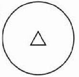
(B)
(C) 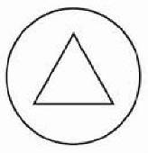
(D)
1.( )觀察動、植物細胞時，下列何者為滴加亞甲藍液的作用？【092基本學測一】
(A)使細胞維持原狀
(B)增加細胞的透光率
(C)會與細胞中的澱粉作用
(D)使細胞中的構造顏色深淺不同
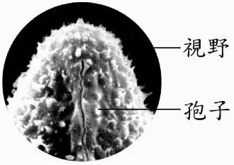2.( )小安用10X的物鏡觀看某植物的孢子，在顯微鏡的視野中看到這顆孢子的一部分如圖所示，如果他要看到完整的孢子，應選用下列哪一個物鏡最能達到此目的？【090基測題本一】
(A)
(B)
(C)
(D)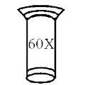
3.( )小敏用複式顯微鏡作觀察，用4倍物鏡看見的影像如下圖所示。若換成40倍物鏡觀察，則最可能會看到下列哪一個影像？【093基本學測一】
(A) 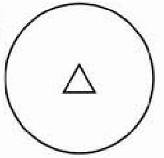
(B)
(C) 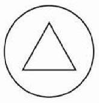
(D)
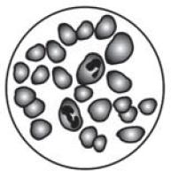4.( )下圖為血球在複式顯微鏡下，以4倍物鏡所觀察到的影像。若在同一視野下，換成10倍的物鏡觀察，則最有可能看見下列何種影像？【094基本學測二】
(A)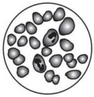
(B)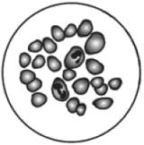
(C)
(D)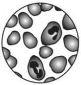
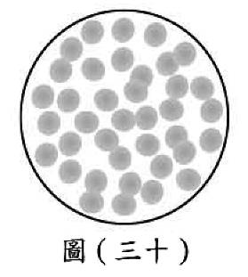5.( )小偉使用複式顯微鏡觀察已染色的人體血液玻片標本，視野下清晰地看到許多紅血球，卻看不到白血球，如圖(三十)所示。已知白血球比紅血球大，小偉需再利用下列哪一步驟，才最可能觀察到白血球？【100基本學測一】
(A)放大光圈
(B)移動玻片
(C)滴加蒸餾水
(D)更換高倍物鏡
6.( )用複式顯微鏡在100倍的放大倍率下觀察某種原生生物，看到整個視野被此種生物的單一個體完全占滿。若想進一步觀察此生物的游動路徑，則應使用下列哪一種目鏡及物鏡的組合？【102基本學測】
(A)目鏡10X、物鏡4X
(B)目鏡10X、物鏡40X
(C)目鏡15X、物鏡10X
(D)目鏡15X、物鏡40X
7.( )甲、乙及丙為一臺複式顯微鏡上三種不同倍率的物鏡，其外型如附圖所示。小柏使用此顯微鏡觀察植物細胞，他利用乙物鏡觀察後，再轉換另一物鏡，結果視野下的細胞數目減少，有關他轉換後的物鏡及其視野範圍的變化，下列何者最合理？【105教育會考】
(A)甲，視野範圍放大
(B)甲，視野範圍縮小
(C)丙，視野範圍放大
(D)丙，視野範圍縮小
8.( )若使用複式顯微鏡觀察蟬的翅膀，使用物鏡甲時，視野中所看到的畫面如附圖1；而改用物鏡乙時，視野中所看到的畫面如附圖2。下列相關敘述何者正確？【097基本學測一】
(A)物鏡甲比物鏡乙短
(B)物鏡甲可觀察到的實際面積較物鏡乙小
(C)物鏡乙可觀察到的細胞數量較物鏡甲少
(D)若想將附圖中的X點移到視野中央，應該將蟬翅樣本向左下方移動
9.( )某臺複式顯微鏡的目鏡放大倍率有10X、15X兩種；物鏡放大倍率有4X、10X和40X三種。小鈞利用此複式顯微鏡觀察洋蔥表皮細胞，下列何種組合可使他在視野中看到的細胞數目最多？【098基本學測二】
(A)目鏡10X、物鏡4X
(B)目鏡10X、物鏡10X
(C)目鏡15X、物鏡10X
(D)目鏡15X、物鏡40X
10.( )小芬利用複式顯微鏡觀察人的血球細胞，使用相同的目鏡，但在兩種不同放大倍率下，所呈現的視野分別為甲和乙，如附圖所示，下列相關敘述何者正確？【099基本學測二】
(A)若使用相同的光圈，則甲比乙亮
(B)在甲中所觀察到的細胞，在乙中均可觀察到
(C)若玻片往右移，甲的影像會往右移而乙的影像則往左移
(D)若在甲看到模糊的影像，改換成乙就可以看到清晰的影像
11.( )如附圖所示，甲、乙為一臺複式顯微鏡上兩種不同倍率的物鏡。小閔使用此顯微鏡觀察口腔皮膜細胞，他按照使用顯微鏡的標準步驟依序開始操作，有關物鏡的轉換及視野亮度的變化，下列敘述何者最合理？【104教育會考】
(A)先用甲再轉換到乙，視野亮度變暗
(B)先用甲再轉換到乙，視野亮度變亮
(C)先用乙再轉換到甲，視野亮度變暗
(D)先用乙再轉換到甲，視野亮度變亮
12.( )以顯微鏡觀察口腔皮膜細胞時，發現顯微鏡中視野過暗，可調節圖中哪一個構造以獲得適當的光線？【090基本學測二】
(A)甲
(B)乙
(C)丙
(D)丁
13.( )嘉欣使用複式顯微鏡觀察植物的葉下表皮，下圖為視野中所見的細胞。嘉欣想將箭頭所指的細胞，移至視野中央，應將玻片往哪一方向移動？【091基本學測一】
(A)右上
(B)右下
(C)左上
(D)左下
14.( )下圖為小楓使用解剖顯微鏡觀察被麻醉的蜜蜂時，視野中所見的景象。小楓想將蜜蜂移至視野中央，應將蜜蜂往哪個方向移動？【091基本學測二】
(A)右上
(B)右下
(C)左上
(D)左下
15.( )小智想要研究動物細胞產生能量的方式。他應該從細胞中取出下列哪一種構造進行研究？【096基本學測一】
(A)液胞
(B)細胞膜
(C)細胞核
(D)粒線體
16.( )細胞中的哪一構造最可用來判定此生物是否為生產者？【098基本學測一】
(A)細胞壁
(B)液胞
(C)粒線體
(D)葉綠體
 17.( )甲和乙為某生物體內的兩種正常細胞，其所含的粒線體數目如附表。由表推論，下列哪一種生理作用應是甲細胞比乙細胞旺盛？【099基本學測一】
17.( )甲和乙為某生物體內的兩種正常細胞，其所含的粒線體數目如附表。由表推論，下列哪一種生理作用應是甲細胞比乙細胞旺盛？【099基本學測一】
(A)吸收光能
(B)吸收水分
(C)產生氧氣
(D)產生能量
18.( )阿豪觀察到庭院中竹子的幼芽生長快速，若他推測細胞需要分解養分產生能量以供幼芽生長，則下列哪一細胞構造的功能和他的推測最直接相關？【101基本學測】
(A)細胞膜
(B)細胞核
(C)葉綠體
(D)粒線體
19.( )已知某株植物具有根、莖、葉等營養器官，也具有花、果實、種子等生殖器官。上述哪些器官的細胞具有分解葡萄糖以產生能量的功能？【103教育會考】
(A)僅營養器官才有
(B)僅生殖器官才有
(C)所有器官皆具有
(D)除葉以外的器官皆具有
20.( )已知某種具有葉綠體的原生生物會分解養分產生能量，推測該生物能否進行光合作用或呼吸作用，下列敘述何者正確？【105教育會考】
(A)僅可進行光合作用
(B)僅可進行呼吸作用
(C)此兩種作用皆可進行
(D)此兩種作用皆無法進行
 21.( )附圖為植物葉肉細胞的構造示意圖，甲、乙、丙、丁分別代表細胞內不同的構造，則下列何者主要負責產生能量供細胞使用？【107教育會考】
21.( )附圖為植物葉肉細胞的構造示意圖，甲、乙、丙、丁分別代表細胞內不同的構造，則下列何者主要負責產生能量供細胞使用？【107教育會考】
(A)甲
(B)乙
(C)丙
(D)丁
22.( )附圖是動物細胞和植物細胞的示意圖，關於此圖中細胞內各構造的功能，下列何者正確？【098基本學測二】
(A)甲含有能控制遺傳性狀的物質
(B)乙主要是控制細胞內外物質的進出
(C)丙能進行光合作用產生養分
(D)丁能分解葡萄糖產生光能
23.( )附表為甲細胞和乙細胞內有無兩種特定生理作用的比較。根據此表推測甲、乙細胞內特定構造的有無，下列敘述何者最合理？【106教育會考】
(A)僅甲細胞含有粒線體
(B)僅甲細胞含有葉綠體
(C)僅乙細胞含有粒線體
(D)僅乙細胞含有葉綠體
24.( )琪琪用複式顯微鏡觀察洋蔥表皮細胞和蘑菇的菌絲細胞，並比較這兩種細胞的構造。下列敘述何者正確？【090基本學測一】
(A)二者皆具有細胞壁及葉綠體
(B)二者皆不具有細胞壁及葉綠體
(C)二者皆具有細胞壁，但不具有葉綠體
(D)二者皆具有葉綠體，但不具有細胞壁
25.( )細胞核具有下列何種功能？【091基本學測一】
(A)含有葉綠體可進行光合作用
(B)含遺傳物質是細胞的生命中樞
(C)具有支持作用可防止細胞變形
(D)為氧化物質產生能量的主要場所
26.( )若將人體的白血球及植物的保衛細胞分別置於兩杯蒸餾水中一段時間，關於哪一種細胞不會破裂及其原因，下列何者最合理？【108教育會考】
(A)白血球，因具粒線體
(B)白血球，因具細胞膜
(C)保衛細胞，因具液胞
(D)保衛細胞，因具細胞壁
27.( )不同組織中的細胞形狀不同，功能也不同。在人體中，下列箭頭所指的細胞何者最可能具有快速傳遞訊息的功能？【092基本學測二】
(A)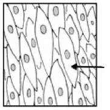
(B)
(C)
(D)
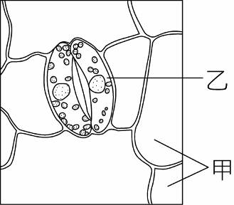28.( )撕取鴨跖草的下表皮做成玻片標本，在顯微鏡下觀察如下圖所示，在此圖甲、乙兩種細胞相同的是下列哪一項？【094基測題本一】
(A)細胞的形狀
(B)細胞壁的厚度
(C)細胞的功能
(D)細胞核內的DNA
29.( )小靜用顯微鏡觀察以亞甲藍液染色後的口腔皮膜細胞，下列關於此實驗的敘述何者正確？【095基本學測一】
(A)需使用複式顯微鏡進行觀察
(B)被染色的部位主要為細胞膜
(C)其構造與植物表皮細胞相同
(D)可觀察到呈半月形的保衛細胞
 30.( )甲燒杯內含有5％澱粉液，乙燒杯內含有5％葡萄糖液，將只含有水的袋子分別放入甲、乙兩燒杯中，如附圖所示。已知袋子的膜只能讓水及葡萄糖通過，放置一小時後，下列相關敘述何者正確？【098基本學測一】
30.( )甲燒杯內含有5％澱粉液，乙燒杯內含有5％葡萄糖液，將只含有水的袋子分別放入甲、乙兩燒杯中，如附圖所示。已知袋子的膜只能讓水及葡萄糖通過，放置一小時後，下列相關敘述何者正確？【098基本學測一】
(A)甲燒杯中袋外的澱粉濃度不變
(B)乙燒杯中袋外的葡萄糖濃度會降低
(C)甲燒杯中袋內的液體加入碘液後呈現藍黑色
(D)乙燒杯中袋內的液體加入碘液後呈現藍黑色
31.( )選擇水分子能通過，但蛋白質不能通過的膜為材料，做成四個大小相同的袋子，分別裝入濃度相同的蛋白質溶液，使其總重皆為20公克。將此四個袋子分別浸泡在濃度為10％、20％、30％及40％的蛋白質溶液中，經一段時間後，取出袋子並測量袋子和其內容物的總重，結果如表所示。判斷原先袋內的蛋白質溶液濃度，最可能是在下列何種範圍？【100(北)聯測】
(A)10％到20％
(B)20％到30％
(C)30％到40％
(D)40％以上
32.( )如附圖，兩個去皮且挖洞的馬鈴薯，未煮過的放在甲組，有煮過的放在乙組，都在洞中盛裝20%蔗糖溶液，並分別置於裝有蒸餾水的容器中。經一段時間後，只在乙組的蒸餾水內明顯測到蔗糖。此兩組有差異的最可能原因是乙組馬鈴薯細胞的下列哪一構造失去功能所造成？【102基本學測】
(A)細胞核
(B)細胞膜
(C)粒線體
(D)葉綠體
33.( )生活在水中的腎形蟲、眼蟲等單細胞生物，藉由下列何種方式與外界進行物質的交換？【091基本學測二】
(A)循環作用
(B)分泌作用
(C)擴散作用
(D)蒸散作用
34.( )下列有關物質進出細胞的敘述，何者正確？【092基本學測一】
(A)葡萄糖可自由進出細胞
(B)水可藉擴散作用進出細胞
(C)氧氣經分解後才可進入細胞
(D)二氧化碳要藉細胞膜上特殊的蛋白質才能進出細胞膜
35.( )下列各圖為植物的某一部分，何者為該植物的營養器官？【091基本學測二】
(A)蘋果
(B)甘蔗
(C)金針花
(D)豌豆
36.( )植物體可分為營養器官與繁殖器官，下列何者為營養器官？【093基本學測一】
(A)甘藷
(B)桑椹
(C)花生米
(D)葵花子
37.( )下列四個圖中何者包含該植物的生殖器官？【096基本學測二】
(A) 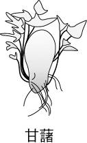
(B)
(C)
(D)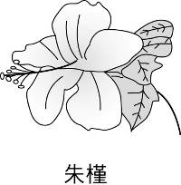
38.( )媽媽從市場買了一塊排骨肉。在生物學上，下列何者與排骨肉屬於不同的生物體組成層次？【094基本學測二】
(A)榕樹的維管束
(B)鴨跖草葉的上表皮
(C)人體口腔的皮膜
(D)豌豆莢中的豌豆
39.( )有關生物體組成層次之敘述，下列何者正確？【095基本學測二】
(A)植物葉的表皮與動物的皮膚同為系統層次
(B)植物的根、莖、葉與動物的胃、小腸同為器官層次
(C)植物葉表皮上的保衛細胞與動物的腎臟同為組織層次
(D)植物的花、果實與動物的精子、卵子同為細胞層次
40.( )下列哪一個生物構造的組成層次最低？【096基本學測二】
(A)淋巴結
(B)白血球
(C)肋骨
(D)血管
41.( )人是由多種組織、器官與系統共同構成的生物體。下列關於人體各部位的敘述，何者正確？【097基本學測二】
(A)腎臟屬於消化系統，可代謝廢物
(B)肝臟屬於循環系統，可製造膽汁
(C)肺臟屬於呼吸系統，由肺泡組成
(D)子宮屬於生殖系統，會分泌雌性激素
42.( )有關人類個體組成層次的敘述，下列何者正確？(系統，又稱器官系統)【100基本學測二】
(A)心臟包含肌肉組織
(B)泌尿系統包含肝臟
(C)一個個體為一個系統
(D)神經組織包含肌肉細胞
43.( )以下是小明閱讀某篇研究報告後所作的摘要及圖表：某研究員欲探討營養素X和物質Y對大白鼠體重增加量的影響，利用一群條件相同的大白鼠，分成四組進行實驗。此研究員先測量各組大白鼠的原始重量，各組別再依實驗設計進行不同的處理，如附表所示；之後每週都記錄各組大白鼠的重量，再把各組每週所測得的重量和原始重量相減，即為各組的體重增加量。各組大白鼠在實驗不同週數的體重增加量，如附圖所示。根據小明的摘要及圖表判斷，有關營養素X及物質Y在四週內會不會使大白鼠的體重增加量超過100gw的推論，下列何者最合理？【106教育會考】
(A)營養素X及物質Y皆會
(B)營養素X及物質Y皆不會
(C)營養素X會；物質Y不會
(D)營養素X不會；物質Y會
44.( )黑熊分布的數量會因棲地的條件而有差異，研究發現黑熊秋冬季時會大量覓食櫟樹的果實。附表為某月分甲、乙、丙三個不同山區內櫟樹和黑熊的調查數量，以及櫟樹的果實結果量。在調查過程中，研究員收集黑熊的糞便，利用脫落在糞便中的腸壁細胞來分析細胞內的遺傳物質，以鑑定黑熊的性別及記錄數量。根據本文，關於甲、乙、丙三區黑熊分布的推論，下列何者最合理？【108教育會考】
(A)櫟樹的棵數越多，黑熊的數量就較多
(B)櫟樹的棵數會影響雌、雄黑熊所占的比例
(C)櫟樹果實的結果量越多，黑熊的數量就較多
(D)櫟樹的果實結果量會影響雌、雄黑熊所占的比例
 45.( )以下是小明閱讀某篇研究報告後所作的摘要及圖表：某研究員欲探討營養素X和物質Y對大白鼠體重增加量的影響，利用一群條件相同的大白鼠，分成四組進行實驗。此研究員先測量各組大白鼠的原始重量，各組別再依實驗設計進行不同的處理，如附表所示；之後每週都記錄各組大白鼠的重量，再把各組每週所測得的重量和原始重量相減，即為各組的體重增加量。各組大白鼠在實驗不同週數的體重增加量，如附圖所示。根據附表，小明欲探討「在未提供營養素X時，注射物質Y對大白鼠體重增加量的影響」，則他應選取下列哪一組合的資料來分析？【106教育會考】
45.( )以下是小明閱讀某篇研究報告後所作的摘要及圖表：某研究員欲探討營養素X和物質Y對大白鼠體重增加量的影響，利用一群條件相同的大白鼠，分成四組進行實驗。此研究員先測量各組大白鼠的原始重量，各組別再依實驗設計進行不同的處理，如附表所示；之後每週都記錄各組大白鼠的重量，再把各組每週所測得的重量和原始重量相減，即為各組的體重增加量。各組大白鼠在實驗不同週數的體重增加量，如附圖所示。根據附表，小明欲探討「在未提供營養素X時，注射物質Y對大白鼠體重增加量的影響」，則他應選取下列哪一組合的資料來分析？【106教育會考】
(A)甲、乙
(B)甲、丙
(C)乙、丁
(D)丙、丁
 46.( )科學家要研究激素對血液中物質濃度的影響，在大白鼠身上分次靜脈注射激素X、Y及Z，並記錄注射前後血液中鈣及葡萄糖的濃度變化。已知每次注射都有足夠的時間間隔，使激素不會彼此干擾。附表為此實驗的平均結果，請根據附表回答下列問題：(mmol/L：毫莫耳/公升)。有關注射上述不同激素前後，大白鼠血液中鈣或葡萄糖濃度變化的圖形，下列何者正確？(□表示注射前；■表示注射後)【103教育會考】
46.( )科學家要研究激素對血液中物質濃度的影響，在大白鼠身上分次靜脈注射激素X、Y及Z，並記錄注射前後血液中鈣及葡萄糖的濃度變化。已知每次注射都有足夠的時間間隔，使激素不會彼此干擾。附表為此實驗的平均結果，請根據附表回答下列問題：(mmol/L：毫莫耳/公升)。有關注射上述不同激素前後，大白鼠血液中鈣或葡萄糖濃度變化的圖形，下列何者正確？(□表示注射前；■表示注射後)【103教育會考】
(A)
(B)
(C)
(D)
47.( )欣欣果是新推出的一種食品，其營養成分標示如下表所示。為了使消費者對營養有進一步的認識，說明書中建議一般國中學生（年齡：13～15歲；體重：男生約為55公斤重，女生約為48公斤重）每人每日熱量及營養素之攝取量如下表。小美是15歲體重重的國中女生，小善是13歲體重重的國中男生，假設小美與小善食用欣欣果可完全吸收其中的營養成分，則根據上述兩表，下列敘述何者正確？【093基本學測二】
(A)食用欣欣果所取得的熱量約有一半來自脂肪
(B)食用欣欣果可獲得上表所建議的鐵質攝取量
(C)小善食用欣欣果，可獲得上表所建議的熱量
(D)小美食用欣欣果，可獲得上表所建議的鈣和磷攝取量
48.( )技安因體重過重，求助於營養師。營養師設計的某餐膳食配製中主要營養素如下：脂肪40公克，醣類162公克，蛋白質48公克。則依主要營養素之熱量比例所繪製的膳食配製圖應是下列哪一個？【090基測題本一】
(A)
(B)
(C)
(D)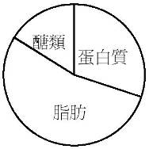
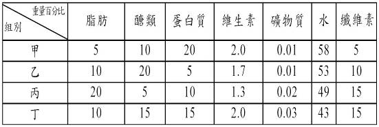49.( )下表中有四組膳食配製，每一組均為400克重。下列哪一組膳食的熱量是最低的？【090基測題本二】
(A)甲
(B)乙
(C)丙
(D)丁
50.( )鏘鏘公司生產的優酪乳包裝上標示如圖所示，理論上這瓶優酪乳可提供多少熱量？【091基本學測一】
(A)84大卡
(B)89大卡
(C)168大卡
(D)178大卡
 51.( )下表列出四種食物的成分含量，各成分的含量與「＋」的數目成正比。由此表比較同樣單位的食物，何者所能提供的熱量最少？【091基本學測二】
51.( )下表列出四種食物的成分含量，各成分的含量與「＋」的數目成正比。由此表比較同樣單位的食物，何者所能提供的熱量最少？【091基本學測二】
(A)甲
(B)乙
(C)丙
(D)丁
 52.( )欣欣果是新推出的一種食品，其營養成分標示如下表所示。根據上表所提供的資料，下列哪一圖可以表示欣欣果中營養素的分布情形？【093基本學測二】
52.( )欣欣果是新推出的一種食品，其營養成分標示如下表所示。根據上表所提供的資料，下列哪一圖可以表示欣欣果中營養素的分布情形？【093基本學測二】
(A)
(B)
(C)
(D)
53.( )阿民向朋友說：「我都不敢吃飽，我覺得自己是屬於只喝白開水就會胖的體質。」從科學的角度解釋，「只喝白開水就會胖」的敘述是否合理？【097基本學測一】
(A)合理，但是只限於有肥胖基因的人
(B)合理，因為水是生命之母，可以提供能量
(C)不合理，因為水不能作為能量來源
(D)不合理，雖然水可提供能量，但人類缺乏適當的消化酵素
54.( )表(二)為四種人工食品的內容物及總質量。若攝食等量的此四種食品，則依據表中資料判斷，下列何者可提供人類最多的能量？【100基本學測一】
(A)甲
(B)乙
(C)丙
(D)丁
55.( )愛莉絲夢境中見到桌上有四瓶不明溶液及一瓶水，如下圖，旁邊有一張紙條，內容如下：若想變小必須喝含有葡萄糖的液體；若想變大必須喝酸性的液體；若想隱形必須喝含葉綠素的液體；若同時喝了兩種或多於兩種溶液，則會中毒。另外，櫃子裡有四籃東西如下表：在夢境中，愛莉絲想變小，需喝含葡萄糖的液體。她應利用哪一籃的器材測定出含葡萄糖的液體？【090基本學測一】
(A)甲
(B)乙
(C)丙
(D)丁
56.( )小美買了一盒真珠粉，懷疑裡面可能摻了澱粉，她可利用下列何種試劑檢測？【091基本學測一】
(A)碘液
(B)本氏液
(C)亞甲藍液
(D)氯化亞鈷溶液
57.( )有兩包未標示的白色粉末，已知它們分別為葡萄糖與麵粉。下列哪一項實驗最適合用來區分兩者？【094基本學測一】
(A)取適量粉末配成水溶液，分別以藍色石蕊試紙測試，觀察是否變色
(B)取適量粉末置於試管，分別加入少量稀碘液，觀察是否變藍紫色
(C)取適量粉末置於試管，分別加入一滴濃硫酸，觀察是否變黑色
(D)取適量粉末配成水溶液，分別通以直流電，觀察是否導電
58.( )小莉用筷子沾著稀飯的湯在乾淨的白布上寫字，等字乾了就看不見了，若想讓白布上的字顯現出來，可噴灑下列哪一種溶液？【094基測題本一】
(A)醋
(B)酒精
(C)食鹽水
(D)稀碘液
59.( )小嘉先於試管中裝入水，並將試管口用一層膜密封，再倒置於裝有澱粉液的燒杯中，如附圖所示。靜置一段時間後，藉由下列何種檢測與反應的發生，可讓小嘉判斷澱粉不會通過此膜？【099基本學測一】
(A)取燒杯內的液體，加入碘液後呈現藍黑色
(B)取燒杯內的液體，加入碘液後呈現黃褐色
(C)取試管內的液體，加入碘液後呈現藍黑色
(D)取試管內的液體，加入碘液後呈現黃褐色
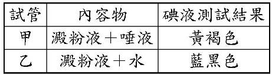60.( )小瑜將甲、乙試管內容物裝妥，並置於裝有溫水的保麗龍盒中40分鐘後，各加一滴碘液於試管中，其實驗處理及結果如下表。此實驗結果可支持下列哪一項敘述？【092基本學測二】
(A)唾液中含有葡萄糖
(B)水可使澱粉液呈藍黑色
(C)如將水溫升高，反應時間則可縮短
(D)唾液之中含有可將澱粉轉化的物質
61.( )在有關認識糖尿病的研究中，某研究員為了探討糖尿病形成的可能原因及相關物質的成分，利用一群條件相同的大白鼠，分成五組進行實驗，實驗中各組別的處理方式及結果如表(八)所示。由表分析得知，切除胰臟的大白鼠，會因注射的胰臟萃取液中缺少某物質而出現糖尿病，推測此物質的成分，下列何者最合理？【100基本學測一】
(A)不是澱粉，也不是蛋白質
(B)可能是澱粉，但不是蛋白質
(C)可能是蛋白質，但不是澱粉
(D)可能是蛋白質，也可能是澱粉
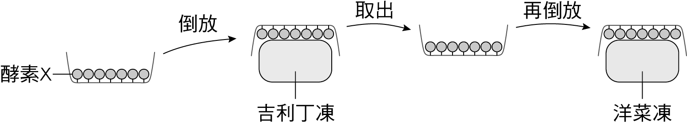62.( )如附圖，有一特定的酵素X被固定於某材質的器具上仍具活性，將此器具倒放在成分全為蛋白質的吉利丁凍上，吉利丁凍會被分解。若立即再將此含有酵素X的器具取出，並倒放在成分全為醣類的洋菜凍上，且酵素作用的環境不改變，則有關洋菜凍是否會被酵素X分解及其解釋，下列何者最合理？【102基本學測】
(A)不會，因為酵素X作用後被分解
(B)不會，因為酵素X不能分解醣類
(C)會，因為酵素X可以重複進行作用
(D)會，因為酵素X可分解外形為凍狀的物質
63.( )唾液中的甲物質可催化澱粉的分解，胃液中的乙物質則可催化蛋白質的分解，若推測甲、乙兩物質本身的主要成分，下列敘述何者最合理？【104教育會考】
(A)甲、乙成分皆為澱粉
(B)甲、乙成分皆為蛋白質
(C)甲成分為澱粉，乙成分為蛋白質
(D)甲成分為葡萄糖，乙成分為胺基酸
64.( )下圖為一種酵素反應速率與溫度關係之示意圖，此酵素為某種生物生存所必須。這種生物最可能生存於下列何處？【092基本學測二】
(A)溫帶草原
(B)熱帶河流
(C)高溫溫泉
(D)河口沼澤
65.( )下圖為某生物體內酵素活性變化的示意圖。下列關於此酵素的敘述何者最恰當？【094基本學測一】
(A)不可能為人體內的酵素
(B)在中性pH值的環境中活性最高
(C)其活性不會一直隨溫度升高而增加
(D)溫度對酵素活性的影響比pH值的影響來得高
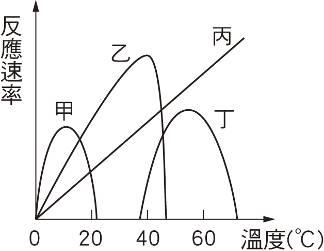66.( )下圖為甲、乙、丙、丁四種酵素的反應速率與溫度之關係。哪一種酵素的耐熱程度最低？【096基本學測一】
(A)甲
(B)乙
(C)丙
(D)丁
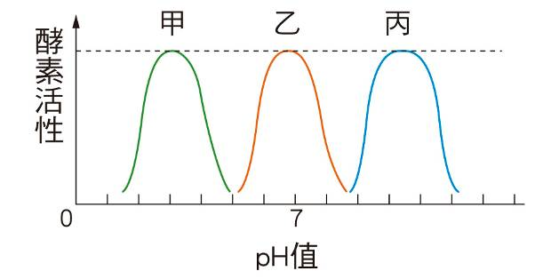67.( )附圖為甲、乙和丙三種酵素在不同pH值下活性大小的測試結果。下列相關敘述，何者正確？【098基本學測一】
(A) pH值增加，三種酵素活性持續增加
(B) pH值減少，三種酵素活性持續增加
(C)三種酵素的活性大小和pH值無關
(D)三種酵素的活性各有其最適合的pH值
68.( )有些水果含有可分解蛋白質的酵素，加入這些酵素可使牛肉軟嫩。附圖為在15℃時不同pH值下，四種此類酵素甲、乙、丙、丁的活性大小。若牛肉置於15℃的中性環境中，則加入等量的哪一種酵素，可使牛肉最快變軟嫩？【098基本學測二】
(A)甲
(B)乙
(C)丙
(D)丁
 69.( )小亞進行酵素分解物質的實驗。他先將受熱凝固的蛋白切成等體積方塊，分別放入四支試管中，再於各試管加入等量的澱粉液，然後依實驗設計分別加入酵素X、酵素Y、稀鹽酸或蒸餾水。裝置完成的試管靜置室溫下24小時後，結果只有甲試管的蛋白方塊消失；用碘液檢測只有丁試管沒有澱粉。小亞將此實驗各試管的處理與結果整理如下表：根據此實驗結果，下列敘述何者是最合理的結論？【099基本學測二】
69.( )小亞進行酵素分解物質的實驗。他先將受熱凝固的蛋白切成等體積方塊，分別放入四支試管中，再於各試管加入等量的澱粉液，然後依實驗設計分別加入酵素X、酵素Y、稀鹽酸或蒸餾水。裝置完成的試管靜置室溫下24小時後，結果只有甲試管的蛋白方塊消失；用碘液檢測只有丁試管沒有澱粉。小亞將此實驗各試管的處理與結果整理如下表：根據此實驗結果，下列敘述何者是最合理的結論？【099基本學測二】
(A)酵素X在中性環境下能使澱粉消失
(B)酵素Y在酸性環境下能使澱粉消失
(C)酵素X在酸性環境下能使蛋白方塊消失
(D)酵素Y在中性環境下能使蛋白方塊消失
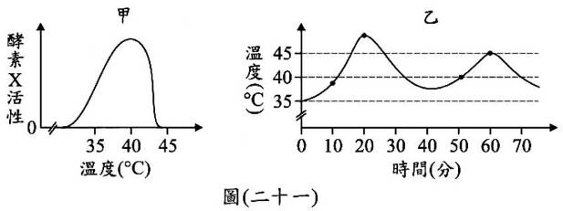70.( )下圖中，酵素X之活性與溫度的關係如甲所示，且知酵素X置於超過44℃的環境中，就無法再回復催化的能力。小維在試管中加入30mL具有活性的酵素X，並將此試管置於可調控溫度的裝置中，其溫度隨時間控制如乙所示。若小維在第10、20、50、60分鐘時，分別從此試管中取出2mL的酵素X，進行酵素活性分析，則哪一時間點所取得的酵素活性最大？【100(北)聯測】
(A)10分
(B)20分
(C)50分
(D)60分
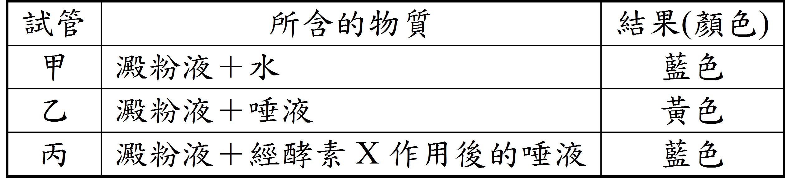71.( )在甲、乙、丙三支試管內加入等量且濃度相同的澱粉液，並依實驗設計分別加入等量的水、唾液、經酵素X作用後的唾液，充分搖勻再靜置於適宜的溫度下，1小時後加入本氏液，隔水加熱觀察顏色。將各試管所含的物質與結果整理如附表。根據此表判斷，酵素X最可能具有下列何種功能？【100基本學測二】
(A)分解澱粉
(B)合成葡萄糖
(C)分解唾液中的酵素
(D)合成唾液中的酵素
72.( )在甲、乙及丙三支試管中分別裝入等量且濃度相同的溶液X，依實驗設計分別再加入等量的葡萄糖液、澱粉液或水，充分混勻再靜置於適宜的溫度，待足夠的反應時間後，以碘液進行檢測。將上述各試管所含的物質與碘液檢測結果整理如附表，根據此實驗結果判斷溶液X中最可能含有下列何種成分？【105教育會考】
(A)澱粉
(B)葡萄糖
(C)分解澱粉的酵素
(D)分解葡萄糖的酵素
 73.( )已知利用相同茶樹的葉片但不同的製作過程，可得綠茶及紅茶。茶葉中所含的酵素X在超過70℃後，就無法再有催化能力。附圖為製作綠茶及紅茶時的四個步驟(依序由步驟I→II→III→IV)及其溫度調控示意圖，比較四個步驟中綠茶及紅茶的酵素X之活性，下列何者最合理？的葉片但不同的製作過程，可得綠茶及紅茶。茶葉中所含的酵素X在超過後，就無法再有催化能力。附圖為製作綠茶及紅茶時的四個步驟(依序由步驟I→II→III→IV)及其溫度調控示意圖，比較四個步驟中綠茶及紅茶的酵素X之活性，下列何者最合理？【108教育會考】
73.( )已知利用相同茶樹的葉片但不同的製作過程，可得綠茶及紅茶。茶葉中所含的酵素X在超過70℃後，就無法再有催化能力。附圖為製作綠茶及紅茶時的四個步驟(依序由步驟I→II→III→IV)及其溫度調控示意圖，比較四個步驟中綠茶及紅茶的酵素X之活性，下列何者最合理？的葉片但不同的製作過程，可得綠茶及紅茶。茶葉中所含的酵素X在超過後，就無法再有催化能力。附圖為製作綠茶及紅茶時的四個步驟(依序由步驟I→II→III→IV)及其溫度調控示意圖，比較四個步驟中綠茶及紅茶的酵素X之活性，下列何者最合理？【108教育會考】
(A)步驟I結束時：綠茶＞紅茶
(B)步驟II結束時：綠茶＝紅茶
(C)步驟III結束時：綠茶＜紅茶
(D)步驟IV結束時：綠茶＝紅茶
74.( )在人體消化管內的某種酵素能將脂質分解，下列有關此種酵素的敘述，何者正確？ (消化管，又稱消化道 )【101基本學測】
(A)也能分解蛋白質
(B)主要成分是脂質
(C)由血液運送至消化管
(D)主要是在小腸中作用
75.( )將酵素甲和澱粉溶液在試管中混合均勻，並定時測量試管內的澱粉濃度。已知試管內澱粉濃度會隨著時間而改變，如附圖所示，下列關於甲的敘述，何者正確？【107教育會考】
(A)甲主要由葡萄糖組成
(B)甲與澱粉反應後，會被分解成胺基酸
(C)若降低甲的活性，會使澱粉的合成速率變快
(D)若提高甲的活性，會使澱粉的分解速率變快
76.( )關於植物行光合作用的敘述，下列何者正確？【098基本學測二】
(A)植物行光合作用的產物可轉換成澱粉
(B)植物行光合作用產生的養分由木質部運送
(C)植物行光合作用釋出的O2主要是來自CO2的分解
(D)植物行光合作用的先決條件是需具有維管束的構造

 77.( )愛莉絲夢境中見到桌上有四瓶不明溶液及一瓶水，如下圖，旁邊有一張紙條，內容如下：若想變小必須喝含有葡萄糖的液體；若想變大必須喝酸性的液體；若想隱形必須喝含葉綠素的液體；若同時喝了兩種或多於兩種溶液，則會中毒。另外，櫃子裡有四籃東西如下表：在夢境中，愛莉絲想隱形，需喝含葉綠素的液體，下列方法中，何者可找出含葉綠素的液體？【090基本學測一】
77.( )愛莉絲夢境中見到桌上有四瓶不明溶液及一瓶水，如下圖，旁邊有一張紙條，內容如下：若想變小必須喝含有葡萄糖的液體；若想變大必須喝酸性的液體；若想隱形必須喝含葉綠素的液體；若同時喝了兩種或多於兩種溶液，則會中毒。另外，櫃子裡有四籃東西如下表：在夢境中，愛莉絲想隱形，需喝含葉綠素的液體，下列方法中，何者可找出含葉綠素的液體？【090基本學測一】
(A)利用甲籃器材從不明溶液中測出葉綠素
(B)利用丙籃器材從不明溶液中測出葉綠素
(C)利用甲及乙籃器材溶出葉綠素
(D)利用丙及丁籃器材溶出葉綠素
78.( )下圖為「測定光合作用產物」的實驗裝置。在實驗中，葉片放在酒精中的目的為何？【090基測題本一】
(A)酒精比水容易煮沸
(B)酒精可溶解葉綠素
(C)酒精可保持葉色翠綠
(D)酒精加熱時，升溫比水快
79.( )小明用水蘊草進行實驗，裝置如圖中甲和乙，並定時記錄試管頂端的氣體量，下列何者為本實驗的主要目的？【090基本學測一】
(A)水溫對光合作用速率的影響
(B)光照對光合作用速率的影響
(C)水量對呼吸作用速率的影響
(D)試管口徑大小對呼吸作用速率的影響
80.( )小芳在一個魚缸中放入五條魚和十株水草，除了每週換水，定時餵飼料及保持穩定水溫外，應做到下列哪一點才能使魚存活？【090基測題本二】
(A)定時修剪水草
(B)要讓水草照光
(C)定期刷洗魚缸
(D)加水之前要先煮沸
81.( )自然界的碳元素在大氣、陸地、海洋和生物之間不停的循環，其主要的途徑如下圖。請回答下面的問題：C6H12O6＋6O2→6CO2＋6H2O可用來表示下圖中哪一途徑的化學反應？【092基本學測一】
(A)途徑甲
(B)途徑乙
(C)途徑丙
(D)途徑丁
 82.( )自然界的碳元素在大氣、陸地、海洋和生物之間不停的循環，其主要的途徑如下圖。請回答下面的問題：根據圖，下列何種化學反應可消耗大氣中的二氧化碳？【092基本學測一】
82.( )自然界的碳元素在大氣、陸地、海洋和生物之間不停的循環，其主要的途徑如下圖。請回答下面的問題：根據圖，下列何種化學反應可消耗大氣中的二氧化碳？【092基本學測一】
(A)燃燒化石燃料
(B)植物的光合作用
(C)動物的呼吸作用
(D)細菌分解有機物
83.( )在光合作用的過程中，來自太陽的能量會儲存在下列何種分子上？【092基本學測二】
(A)水
(B)氧氣
(C)葡萄糖
(D)二氧化碳
84.( )某科學家將四瓶含有嗜氧細菌(一種需要氧氣的細菌)的培養液中放入水綿(一種藻類)，再分別利用四種不同色光照射水綿，如圖一所示，經過一段時間後，以顯微鏡觀察並計算細菌數量，結果如圖二所示。根據上述，推測這位科學家最有可能在進行何種生理作用之研究？【094基本學測一】
(A)運輸作用
(B)氧化作用
(C)光合作用
(D)蒸散作用
 85.( )某科學家將四瓶含有嗜氧細菌(一種需要氧氣的細菌)的培養液中放入水綿(一種藻類)，再分別利用四種不同色光照射水綿，如圖一所示，經過一段時間後，以顯微鏡觀察並計算細菌數量，結果如圖二所示。根據圖的結果，若要增加此生理作用的速率，可考慮以下列何種方式進行？【094基本學測一】
85.( )某科學家將四瓶含有嗜氧細菌(一種需要氧氣的細菌)的培養液中放入水綿(一種藻類)，再分別利用四種不同色光照射水綿，如圖一所示，經過一段時間後，以顯微鏡觀察並計算細菌數量，結果如圖二所示。根據圖的結果，若要增加此生理作用的速率，可考慮以下列何種方式進行？【094基本學測一】
(A)讓水綿照紫光
(B)讓水綿照綠光
(C)降低培養液溫度
(D)減少此種細菌的數量
86.( )下列有關綠色植物進行光合作用的敘述，何者錯誤？【095基本學測二】
(A)不牽涉能量的轉換
(B)需要陽光提供能量
(C)產生葡萄糖和氧氣
(D)需要水分和二氧化碳
87.( )關於光合作用的敘述，下列何者正確？【096基本學測一】
(A)光反應一定要有光才能進行
(B)暗反應一定要在黑暗中進行
(C)所釋放出的O來自於CO的分解
(D)整個光合作用的過程中不需要吸收能量
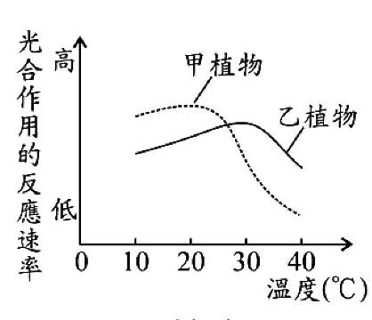88.( )附圖為在不同溫度下，甲、乙兩種植物光合作用的反應速率變化圖，則下列敘述何者正確？【097基本學測一】
(A)10℃時，乙植物光合作用的反應速率較甲植物高
(B)30℃時，甲植物光合作用的反應速率較甲植物高
(C)單位時間內乙植物在30℃產生的醣類較在20℃多
(D)單位時間內甲植物在30℃產生的醣類較在10℃多
89.( )若光合作用的反應物及產物表示為：甲＋乙→丙＋丁＋戊，其中甲來自空氣，乙與戊是同一物質，丁為氣體並會被釋放到空氣中。下列相關敘述何者正確？【097基本學測二】
(A)甲可以使藍色氯化亞鈷試紙變成粉紅色
(B)乙和戊可以助燃
(C)丙是生物生長的主要來源之一
(D)丁可以使澄清石灰水變混濁
90.( )小畢把池水、水草和魚裝入透明玻璃瓶，測量pH值後將瓶口密封，如附圖所示。將此瓶持續照光2天後，瓶內的生物仍生長良好，但測量得知瓶內水的pH值降低。在持續照光的條件下，若小畢想使瓶內水的pH值回復到接近照光前的數值，則可採用下列哪一方法？【099基本學測一】
(A)再多加一些魚在瓶內
(B)將CO2灌入瓶內水中
(C)再多加一些水草在瓶內
(D)將瓶內的池水倒掉一半
 91.( )甲、乙、丙、丁四瓶皆裝入pH值相同、不含微生物的等量礦泉水，其中乙、丁兩瓶含有水草。密封所有瓶口後，分成兩組，分別以照光或黑暗處理，如附表所示。已知水草在照光下，利用CO2的速率大於放出CO2的速率，若實驗處理後，水草皆能維持生存，則比較各瓶內水的pH值，下列敘述何者最合理？【100基本學測二】
91.( )甲、乙、丙、丁四瓶皆裝入pH值相同、不含微生物的等量礦泉水，其中乙、丁兩瓶含有水草。密封所有瓶口後，分成兩組，分別以照光或黑暗處理，如附表所示。已知水草在照光下，利用CO2的速率大於放出CO2的速率，若實驗處理後，水草皆能維持生存，則比較各瓶內水的pH值，下列敘述何者最合理？【100基本學測二】
(A)甲瓶的pH值較乙瓶大
(B)甲、乙兩瓶的pH值皆變大
(C)丙瓶的pH值較丁瓶大
(D)丙、丁兩瓶的pH值皆變大
92.( )附圖是生物進行某種生理作用的示意圖，圖中箭頭代表能量或物質在葉片中的進出，此生理作用最可能是下列何者？【104教育會考】
(A)呼吸作用
(B)蒸散作用
(C)光合作用
(D)觸發運動
93.( )小帆想知道某一植株在不同環境條件下，葉片行光合作用時速率的快慢，應依據下列哪一資料進行推測最為合理？【108教育會考】
(A)單位時間內產生氧氣的量
(B)單位時間內消耗葉綠素的量
(C)單位時間內消耗葡萄糖的量
(D)單位時間內產生二氧化碳的量
94.( )將某生物放置於有水的透明容器中，密封後給予陽光照射，並開始記錄容器內氧氣的含量變化，結果如附圖所示。根據此圖推測，此生物最可能是下列何者？【098基本學測一】
(A)珊瑚
(B)矽藻
(C)酵母菌
(D)大腸桿菌
 95.( )如下圖，甲、乙、丙、丁是裝有池水的四組密閉透明容器，除了小魚、小蝦、螺或水草是否存在外，其餘實驗條件皆相同。已知在照光的條件下，水草光合作用的速率大於本身呼吸作用的速率，若四組皆持續照光一天，且其內生物仍生長良好，則下列哪一容器中池水所含的CO2量可能最少？【099基本學測二】
95.( )如下圖，甲、乙、丙、丁是裝有池水的四組密閉透明容器，除了小魚、小蝦、螺或水草是否存在外，其餘實驗條件皆相同。已知在照光的條件下，水草光合作用的速率大於本身呼吸作用的速率，若四組皆持續照光一天，且其內生物仍生長良好，則下列哪一容器中池水所含的CO2量可能最少？【099基本學測二】
(A)甲
(B)乙
(C)丙
(D)丁
96.( )圖(二)為某池塘生態環境中生物分布的示意圖，圖中哪一生物可用來合理推測太陽光會穿透到此池塘的底部？【100基本學測一】
(A)魚
(B)蝦
(C)水草
(D)岸邊植物
97.( )有四支透明且密閉的試管，分別培養草履蟲、酵母菌、藍綠菌和大腸桿菌，已知此四支試管內皆含CO2，但不含有機物，其他環境條件則皆適合上述生物的生存。在每日各12小時光照黑暗交替的情況下，下列哪種生物最可能在其試管內生長及繁衍子代？(大腸桿菌為細菌的一種)【103教育會考】
(A)草履蟲
(B)酵母菌
(C)藍綠菌
(D)大腸桿菌
 98.( )下圖為人類腸道的示意圖，圖中何處可能發生闌尾炎？【090基測題本二】
98.( )下圖為人類腸道的示意圖，圖中何處可能發生闌尾炎？【090基測題本二】
(A)甲
(B)乙
(C)丙
(D)丁
99.( )阿貴患了膽道閉鎖症，無法順利排出膽汁，因而造成膽汁逆流，此現象將會直接導致圖中哪一種器官受損？【091基本學測二】
(A)胃
(B)肝臟
(C)胰臟
(D)小腸
 100.( )小亞進行酵素分解物質的實驗。他先將受熱凝固的蛋白切成等體積方塊，分別放入四支試管中，再於各試管加入等量的澱粉液，然後依實驗設計分別加入酵素X、酵素Y、稀鹽酸或蒸餾水。裝置完成的試管靜置室溫下24小時後，結果只有甲試管的蛋白方塊消失；用碘液檢測只有丁試管沒有澱粉。小亞將此實驗各試管的處理與結果整理如下表。若酵素X及酵素Y的來源都是人體消化腺所分泌的液體，則下列推論何者最合理？【099基本學測二】
100.( )小亞進行酵素分解物質的實驗。他先將受熱凝固的蛋白切成等體積方塊，分別放入四支試管中，再於各試管加入等量的澱粉液，然後依實驗設計分別加入酵素X、酵素Y、稀鹽酸或蒸餾水。裝置完成的試管靜置室溫下24小時後，結果只有甲試管的蛋白方塊消失；用碘液檢測只有丁試管沒有澱粉。小亞將此實驗各試管的處理與結果整理如下表。若酵素X及酵素Y的來源都是人體消化腺所分泌的液體，則下列推論何者最合理？【099基本學測二】
(A)酵素X來自唾腺
(B)酵素Y來自唾腺
(C)酵素X來自肝臟
(D)酵素Y來自肝臟
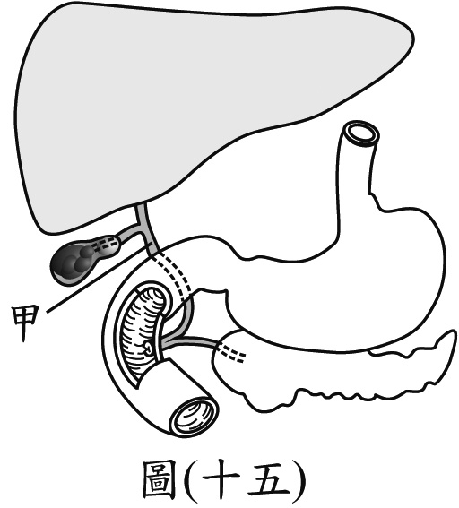101.( )附圖為人體部分消化器官的示意圖，若老王體內的甲處發生阻塞，則下列關於他的消化及養分吸收功能，何者最可能發生？【106教育會考】
(A)胰液無法排至小腸內
(B)胃液無法分解蛋白質
(C)消化脂質的功能下降
(D)吸收葡萄糖的功能下降
102.( )已知某種病毒在pH值小於6的環境中即被消滅，頭頭誤食被該病毒感染的豬肉，則病毒可能在頭頭體內的哪一器官中被消滅？【093基本學測二】
(A)食道
(B)胃
(C)小腸
(D)大腸
103.( )雞吞食砂粒儲放在雞胗中，可幫助磨碎食物，以增加食物與酵素接觸的表面積。下列人體內哪一構造具有類似上述雞胗的消化功能？【098基本學測一】
(A)口腔
(B)食道
(C)肝臟
(D)大腸
104.( )附圖是某食物在人體不同消化器官中停留的時間。根據此圖，判斷此食物在接觸膽汁之前，最可能已存在消化管中幾小時？消化管，又稱消化道【100基本學測二】
(A)4
(B)11
(C)13
(D)24
105.( )關於人類消化系統的敘述，下列何者正確？【093基本學測一】
(A)肝臟所分泌的膽汁，藉導管送入小腸
(B)胰臟屬於消化管的一部分，是分解食物的主要部位
(C)胃腺分泌的胃液呈強酸性，有助於其內的酵素分解醣類
(D)消化液先被分泌至血液，再被運輸至消化器官進行消化作用
106.( )關於人體消化過程的敘述，下列何者正確？【094基本學測一】
(A)胃內的酵素在鹼性環境下活性較強
(B)水分進入人體後，最先在大腸中被吸收
(C)唾腺可分泌酵素，將蛋白質分解成胺基酸
(D)人體分解食物及吸收養分的主要部位為小腸
107.( )晶晶吃了一頓豐盛的晚餐，下列有關食物的消化與吸收何者正確？【096基本學測二】
(A)胃最先將各類的食物進行初步分解
(B)膽囊分泌膽汁分解脂質後由小腸絨毛吸收
(C)吸收的血糖可經胰島素作用後儲存於肝臟
(D)消化管各處皆有消化腺分泌消化液分解食物
108.( )阿威早餐吃了饅頭，下列何者可以消化饅頭中的澱粉？【090基本學測二】
(A)唾液
(B)膽汁
(C)胃液
(D)大腸黏液
109.( )取甲、乙、丙三支試管，先加入等量的物質X，再依序分別加入足量人體的唾液、胃液、胰液，並調整各試管的pH值及溫度等條件，使其適合各消化液中的酵素作用。靜置足夠的反應時間後，結果三支試管內物質X的含量皆沒有變化，推論下列四種物質中，何者最可能為物質X？【100(北)聯測】
(A)澱粉
(B)脂質
(C)蛋白質
(D)纖維素
110.( )已知某藥品的設計是將蛋白質以脂質包裹，當外層的脂質被消化液分解後，內部的蛋白質才能釋出。若人體攝入此藥品，則推測其所含的蛋白質釋出之地點應在下列哪一消化器官中？【102基本學測】
(A)胃
(B)小腸
(C)口腔
(D)食道
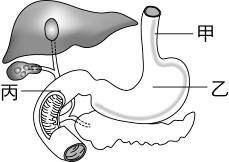111.( )小真為外婆慶生時，吃了一碗豬腳麵線。下圖為消化系統示意圖，則下列關於食物消化過程的敘述何者正確？【095基本學測一】
(A)若食物不乾淨，會使得甲處水分吸收減少，導致拉肚子
(B)麵線到達乙處，才開始消化分解
(C)食物中的脂肪主要在乙處進行消化吸收
(D)豬腳的養分到達丙處才被消化為小分子後加以吸收
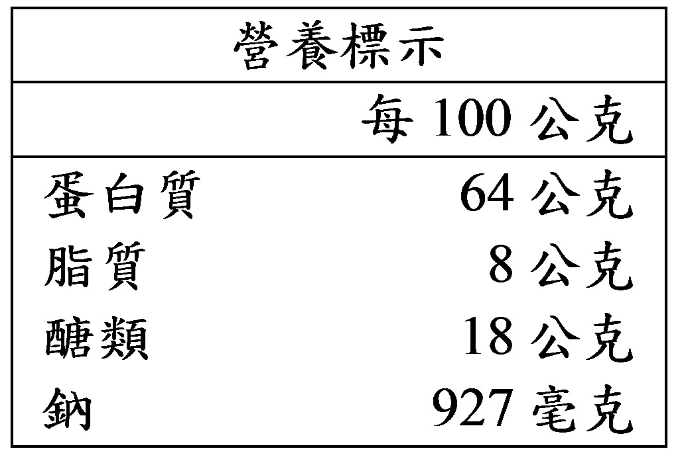112.( )附表為某食品營養標示的簡表，此食品中含量最多的營養成分會在下列哪一器官中被消化？【099基本學測一】
(A)肝臟
(B)膽囊
(C)大腸
(D)小腸
113.( )下列有關年輪的敘述，何者正確？【091基本學測一】
(A)可根據年輪來判斷玉米的年齡
(B)韌皮部細胞受氣候影響而形成年輪
(C)環紋的部分是木質部，俗稱為木材
(D)環紋有深有淺是因形成層細胞大小不一
114.( )下圖為松樹樹幹橫切面的模式圖，下列敘述何者正確？【092基本學測一】
(A)這段樹幹的年齡約有六年
(B)甲區運送養分，乙區運送水分
(C)甲區的細胞比乙區的小，生長也較快
(D)乙區的細胞是在氣候溫暖、雨量豐富的季節生長
115.( )下圖為某植物莖橫切面的示意圖，下列敘述何者正確？【092基本學測二】
(A)乙細胞分裂會使莖加粗
(B)土壤中的肥料主要是由甲運送
(C)物質在丙內的運送方向為由上往下
(D)開花時，根儲藏的養分是由丙運送至花芽
116.( )溼熱的午後，常可發植物葉片的尖端和邊緣有許多透明的小珠子，如下圖所示。下列關於這些小珠子的敘述，何者最正確？【093基本學測一】
(A)這是停留在葉面的雨水，會讓氯化亞鈷試紙變藍色
(B)這是植物分泌出來的蜜汁，會讓混濁石灰水變澄清
(C)這是植物放出氧氣和雨水形成的水滴，會讓澄清石灰水變混濁
(D)這是植物體內的水分因為來不及蒸散而泌出，會讓氯化亞鈷試紙變粉紅色
117.( )關於維管束植物體內水分與礦物質之吸收與運輸，下列敘述何者正確？【097基本學測二】
(A)水分主要是由氣孔吸收
(B)礦物質主要是由根部吸收
(C)兩者皆主要以擴散作用向上運輸
(D)水分主要是靠維管束的韌皮部運輸
118.( )某植物莖橫切面的構造示意圖如附圖(一)，其葉片切面的構造示意圖如附圖(二)，整株植物體內物質運輸方向的示意圖如附圖(三)。根據此三圖，下列有關水分運輸的部位與箭頭所示之運輸方向，何者正確？【098基本學測一】
(A)甲和丙：運輸方向如戊所示
(B)甲和丁：運輸方向如戊所示
(C)乙和丙；運輸方向如己所示
(D)乙和丁；運輸方向如己所示
119.( )附圖為某植物的構造示意圖，有關植物體內物質運輸的敘述，下列何者正確？【099基本學測一】
(A)養分僅可由丙輸送到乙
(B)水分僅可由甲輸送到丁
(C)養分可由乙輸送到甲，也可由乙輸送到丁
(D)水分可由丙輸送到乙，也可由丙輸送到丁
120.( )小慧在水中切取同一植物且粗細相同的兩枝條，使其長度相等，並將其中一枝條的葉片全部摘除，再分別插入裝有等體積紅色溶液的兩燒杯中，標示為甲、乙兩組，如圖(六)所示。靜置一段時間後，得知兩組的枝條內都有紅色溶液，一組上升5公分，另一組上升1公分。判斷紅色溶液上升5公分的組別及其枝條內出現紅色的主要部位，下列何者正確？【100基本學測一】
(A)甲；韌皮部
(B)甲；木質部
(C)乙；韌皮部
(D)乙；木質部
121.( )阿碩要把他家庭院中的樹木移植到別處，他寫下移植樹木時的建議及列出此建議的主要原因，如附表所示，其中下列哪一要點的建議與其主要原因不相符合？【103教育會考】
(A)甲
(B)乙
(C)丙
(D)丁
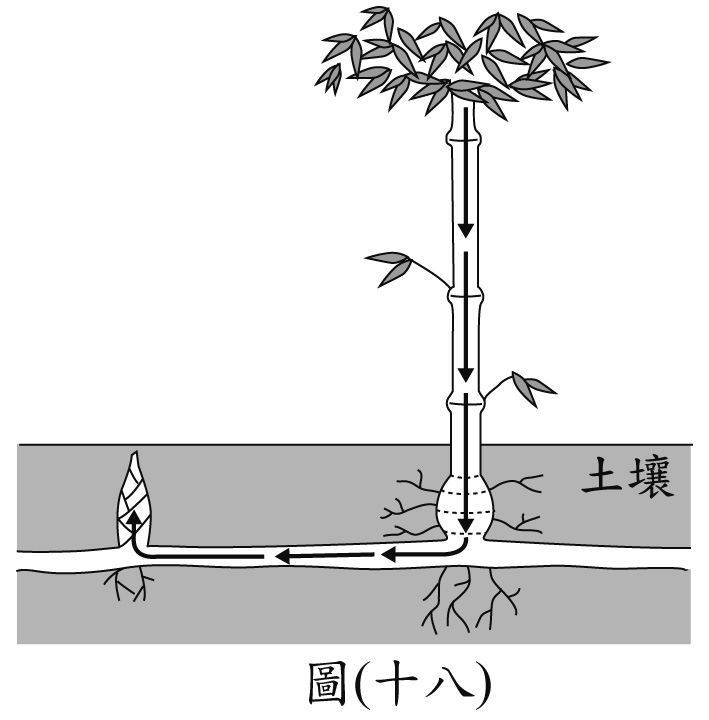122.( )附圖為竹子與其鄰近竹筍的生長示意圖，圖中箭頭表示物質X由竹子到竹筍的運輸方向。已知物質X來自光合作用，則有關物質X及其由何種構造運輸的敘述，下列何者最合理？【107教育會考】
(A)物質X為醣類，由韌皮部運輸
(B)物質X為醣類，由木質部運輸
(C)物質X為水分，由韌皮部運輸
(D)物質X為水分，由木質部運輸
123.( )附圖為維管束植物體內物質流向的示意圖，甲為維管束內運輸物質的管道，乙為此種管道內主要的運送物質，箭頭表示乙物質在不同時間點於管道內可能的流動方向。下列有關甲和乙的敘述，何者最合理？【108教育會考】
(A)甲位在木質部，乙為醣類
(B)甲位在韌皮部，乙為醣類
(C)甲位在木質部，乙為礦物質
(D)甲位在韌皮部，乙為礦物質
 124.( )壓條法是一種園藝植物常見的繁殖方法，例如蘋果樹的枝幹有許多分枝，可隨意地選取強健的分枝做壓條。附圖是某一優良品種的蘋果樹進行壓條的過程示意圖：水苔屬於蘚苔植物，保水性強，可持續提供水分。環狀剝皮後，被剝皮的枝條之下列哪一生理作用會先直接受到影響？【102基本學測】
124.( )壓條法是一種園藝植物常見的繁殖方法，例如蘋果樹的枝幹有許多分枝，可隨意地選取強健的分枝做壓條。附圖是某一優良品種的蘋果樹進行壓條的過程示意圖：水苔屬於蘚苔植物，保水性強，可持續提供水分。環狀剝皮後，被剝皮的枝條之下列哪一生理作用會先直接受到影響？【102基本學測】
(A)水分的吸收
(B)水分的運輸
(C)養分的製造
(D)養分的運輸。
125.( )將咸豐草插於裝有黑色墨水的量筒中，如圖所示。一小時之後將莖橫切，取一薄片置於顯微鏡下觀察，此時所見的情形，最可能為下列何者？【093基本學測二】
(A)
(B)
(C)
(D)
126.( )菟絲子是一種寄生性的植物，會利用莖上的吸取器插入另一綠色植物體內，以吸取其有機養分。下列何者是該綠色植物被吸取器插入吸收養分的主要部位？【097基本學測一】
(A)木質部
(B)形成層
(C)韌皮部
(D)角質層
127.( )附圖為某種植物莖部橫切面的構造示意圖。已知「介殼蟲」是以此種植物韌皮部中的汁液為食，若想分析介殼蟲所吸取的成分，則應選擇圖中的哪一部位進行研究最合適？【104教育會考】
(A)甲
(B)乙
(C)丙
(D)丁
 128.( )研究員利用工具鑽取榕樹樹幹的維管束組織，從樹皮表面上的X點垂直鑽入樹幹中心後，將取出的組織依其主要功能分別標示為甲、乙、丙，如附表所示。依表中的主要功能判斷，比較此三者與X點間的距離，下列何者最合理？【105教育會考】
128.( )研究員利用工具鑽取榕樹樹幹的維管束組織，從樹皮表面上的X點垂直鑽入樹幹中心後，將取出的組織依其主要功能分別標示為甲、乙、丙，如附表所示。依表中的主要功能判斷，比較此三者與X點間的距離，下列何者最合理？【105教育會考】
(A)甲＜丙＜乙
(B)甲＜乙＜丙
(C)乙＜丙＜甲
(D)乙＜甲＜丙
129.( )某雙子葉木本植物的莖具有樹皮及木材等構造，如附圖所示。下列何者為圖中標示＊處的主要功能？【106教育會考】
(A)運輸養分
(B)運輸水分
(C)細胞分裂
(D)光合作用
130.( )根據下列事實的陳述，最可能作出何項判斷？事實一：血液流經微血管時，會有部分液體滲出至組織間。事實二：從心臟送至體循環、肺循環的血液量和回流至心臟的血液量相等【091基本學測二】
(A)人體可回收由微血管滲出的液體
(B)人體的每一器官所含的血量相同
(C)血液在血管中流動的速率都相同
(D)心臟送出的血液都含豐富的氧氣
131.( )關於植物的構造與功能，下列敘述何者正確？【094基本學測一】
(A)玫瑰的花是營養器官
(B)樟樹的莖可深入土壤吸收水分
(C)椰子樹利用葉子的擴散作用將水輸送到樹梢
(D)芹菜吸收紅墨水後，莖內的維管束會變成紅色
132.( )下列關於人體中細胞及構造功能的敘述，何者正確？【095基本學測二】
(A)瓣膜可防止血液逆流
(B)靜脈負責進行物質的交換
(C)紅血球主要負責養分的運送
(D)心臟收縮時可壓迫血液流入靜脈
133.( )將二支裝滿水的曲狀玻璃管，管中有一小氣泡，如箭頭所示，用相同的光源照射，並放在通風的室內，其裝置及結果如下圖，則造成兩組氣泡位置差異的主要原因為何？【090基本學測二】
(A)芹菜行光合作用會消耗大部分的水分
(B)芹菜行呼吸作用會消耗大部分的水分
(C)芹菜吸收的水分大多經由葉片的氣孔散失
(D)芹菜吸收的水分大多經由葉片的邊緣散失
134.( )小華取帶葉的芹菜葉柄及去葉後的芹菜葉柄，分別插入裝有等量水的兩量筒中，裝置如圖（A），放在通風的暗室中一天後，其結果如圖（B）。則造成甲、乙量筒液面高度差異的原因為何？【090基測題本一】
(A)芹菜行光合作用會消耗水分
(B)芹菜行呼吸作用會消耗水分
(C)芹菜吸收的水分大多經由葉片的氣孔散失
(D)芹菜吸收的水分大多經由葉片的邊緣散失
135.( )小明將二支芹菜柄分別插入底部有半透膜的U形管的兩端，其裝置如下圖，並放在明亮又通風的地方30分鐘後，甲乙兩端液面高度有何差別？【090基測題本二】
(A)甲高於乙
(B)乙高於甲
(C)二者一樣高
(D)無法判斷
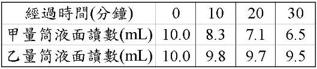136.( )筱欣在甲、乙兩個相同的量筒內各插入一枝粗細相近的芹菜，再加水至液面達到L的刻度處，接著摘除乙量筒芹菜的所有葉片，並把兩個量筒放在通風處，每10分鐘記錄一次液面的讀數，結果如下表。筱欣的實驗結果可支持下列哪一敘述？【091基本學測二】
(A)植物的生長需要通風
(B)植物行光合作用需要光
(C)植物行呼吸作用時需要水分
(D)植物體內水分的散失與葉片有關
137.( )取帶有等數量葉片的鴨跖草枝條，做不同的處理如下表，而後放入盛有等量水的L量筒中，置於陽光充分的室外4小時後，哪一個量筒水位最高？（註：凡士林是一種油膏）【092基本學測二】
(A)甲
(B)乙
(C)丙
(D)丁
 138.( )小呆做綠豆發芽實驗，有一天他心血來潮，將發芽的綠豆以透明玻璃杯倒立罩著，一段時間後，杯壁上出現一些透明液體，如下圖所示。下列有關此綠豆實驗的敘述何者錯誤？【095基本學測一】
138.( )小呆做綠豆發芽實驗，有一天他心血來潮，將發芽的綠豆以透明玻璃杯倒立罩著，一段時間後，杯壁上出現一些透明液體，如下圖所示。下列有關此綠豆實驗的敘述何者錯誤？【095基本學測一】
(A)杯壁上透明液體只會在夜晚出現
(B)杯壁上的液體可由植物的蒸散作用產生
(C)若以顯微鏡觀察葉子的下表皮可發現氣孔的存在
(D)杯壁上的液體以氯化亞鈷試紙檢測時，試紙會由藍變為粉紅色
139.( )關於植物蒸散作用的敘述，下列何者正確？【095基本學測二】
(A)蒸散作用有助於根部對水分的吸收
(B)木質部與韌皮部共同參與蒸散作用的進行
(C)蒸散作用時，水分移動的方向是由上往下運輸
(D)去除植物葉片讓維管束外露，可加速蒸散作用
140.( )小佑以榕樹為研究對象，想證明「植物進行蒸散作用時，水經由氣孔離開植物體」。下列何者為最適當的處理方式？【096基本學測二】
(A)將紅色氯化亞鈷試紙，以透明膠布固定於榕樹葉的上表皮，兩分鐘後觀察顏色變化
(B)將藍色氯化亞鈷試紙，以透明膠布固定於榕樹葉的上表皮，兩分鐘後觀察顏色變化
(C)將紅色氯化亞鈷試紙，以透明膠布固定於榕樹葉的下表皮，兩分鐘後觀察顏色變化
(D)將藍色氯化亞鈷試紙，以透明膠布固定於榕樹葉的下表皮，兩分鐘後觀察顏色變化
141.( )編號1到5的五支試管分別為不同的實驗裝置，每支試管皆裝有等量的水，如下圖所示。若要研究「葉片的有無」和「蒸散作用的速率」之關係，下列何種組合可作為此實驗設計的實驗組與對照組？【100(北)聯測】
(A)編號1和2
(B)編號1和3
(C)編號3和4
(D)編號4和5
142.( )直接供給人類心臟所需氧氣及養分的血管若阻塞，會造成心臟的病變，下列何者為此重要血管？【091基本學測一】
(A)肺動脈
(B)冠狀動脈
(C)上大靜脈
(D)左肺靜脈
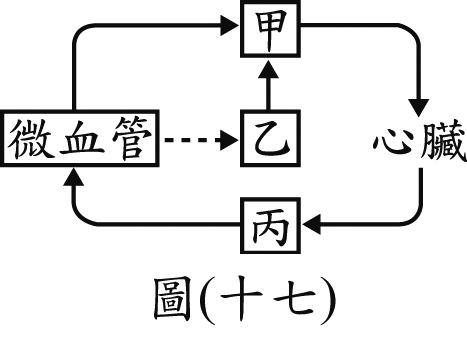143.( )附圖為人體血液循環和淋巴循環的部分示意圖，甲、乙和丙為不同的管道名稱，圖中代表液體的流動方向，代表物質由微血管滲出。根據此圖判斷，甲、乙和丙內有無紅血球的敘述，何者最合理？【105教育會考】
(A)僅甲、乙有
(B)僅甲、丙有
(C)甲、乙、丙皆有
(D)甲、乙、丙皆沒有
144.( )阿南的腳被生鏽小刀割傷後，因傷口處理不當，幾天後發現自己腹股溝出現一個小硬塊，甚為擔心，此一硬塊最有可能為下列何者？【090基測題本二】
(A)疝氣
(B)惡性腫廇
(C)內出血之血塊
(D)腫脹的淋巴結
145.( )下列哪一種物質，不經由血漿運送？【090基本學測一】
(A)尿素
(B)抗體
(C)胰液
(D)生長素
146.( )阿亮在路上被一隻狗追趕，拼命跑而分泌大量腎上腺素，此腎上腺素由下列何者所運送？【094基測題本一】
(A)導管
(B)血漿
(C)紅血球
(D)淋巴球
147.( )人體所儲存的肝糖被分解為葡萄糖後，在血液中是由下列何者運輸至細胞？【098基本學測二】
(A)白血球
(B)紅血球
(C)血小板
(D)血漿
148.( )小華腳上的傷口因細菌感染而化膿，此時關於血球的變化，下列敘述何者正確？【090基本學測一】
(A)紅血球數目增加
(B)白血球數目增加
(C)紅血球數目減少
(D)白血球數目減少
149.( )運動時心搏加快，在生理上有何意義？【091基本學測一】
(A)加速氧氣的運輸
(B)增加二氧化碳的含量
(C)減少體熱的散失
(D)增加尿液的形成
150.( )興聞被刀子割傷，數日後傷口因感染而紅腫發炎，此時他體內的哪一種細胞會顯著增加？【091基本學測二】
(A)白血球
(B)紅血球
(C)肌肉細胞
(D)神經細胞
151.( )下列何者的成分使得人體血液呈現紅色？【093基本學測一】
(A)白血球
(B)紅血球
(C)血小板
(D)血漿
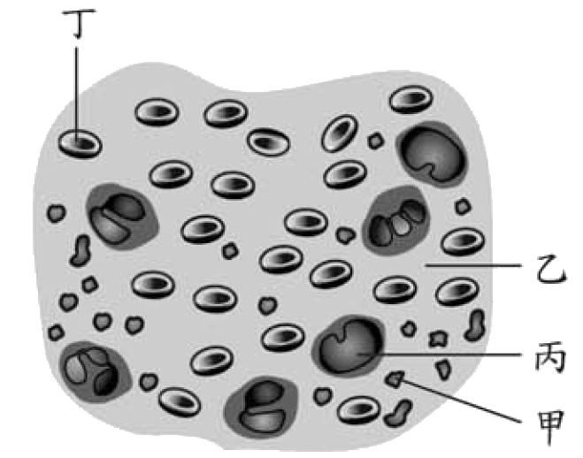152.( )下圖為人體中的血液組成。下列敘述何者正確？【094基本學測一】
(A)甲可攜帶氧氣，以供給全身細胞利用
(B)乙使血液呈紅色，具有攜帶養分的功能
(C)丙可對抗外來致病物質，保護人體健康
(D)丁在人體受傷時，可發揮幫助血液凝固的功能
153.( )【根據下列所提供的資料回答問題。受精卵在埋入子宮壁一段時間後，子宮壁上形成胎盤和臍帶，母體透過胎盤和臍帶與胎兒相連。胎盤是胎生動物特有的構造，隔開母體與胎兒的血液循環，但可透過擴散的方式讓母體和胎兒進行物質與氣體的交換。母體動脈血液帶來充足的氧氣，經過胎盤藉由臍帶中的臍靜脈供給胎兒。胎兒體內產生的二氧化碳和代謝廢物，經過胎盤藉由母體的靜脈送回母體，利用母體的排泄系統將代謝廢物和二氧化碳排除。】下列何者為臍帶內臍靜脈血液的顏色？【096基本學測二】
(A)鮮黃色
(B)暗黃色
(C)鮮紅色
(D)暗紅色
154.( )附表為阿宏健康檢查後血液報告的部分內容，表中除了列出阿宏體內三種血球數目的測量值外，也列出正常值。根據此表推測，阿宏的下列何種生理功能最可能出現問題？【100基本學測二】
(A)運輸養分
(B)運輸氧氣
(C)幫助血液凝固
(D)抵抗細菌入侵
155.( )供應腦部氧氣的血液是由心臟的哪個腔室所擠壓出來的？【090基測題本二】
(A)右心房
(B)右心室
(C)左心房
(D)左心室
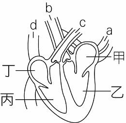156.( )下圖為心臟及血管示意圖，下列敘述何者正確？【092基本學測一】
(A)心臟收縮，血液由丁→d，甲→a
(B)心臟收縮，血液由甲→a，丙→c
(C)心臟舒張，血液由a→甲，d→丁
(D)心臟舒張，血液由c→丙，b→乙
157.( )附圖為人體血液循環系統的示意圖，箭頭表示血液流動的方向，下列相關敘述，何者正確？【100基本學測二】
(A)甲為左心房
(B)乙為右心房
(C)丙為肺靜脈
(D)丁為肺動脈
 158.( )附圖是人體血液循環所流經的部分構造示意圖，圖中的乙為心臟，丁為肝臟。根據附圖，若只考慮甲、乙、丙、丁四構造，將血液從丁流到丙所經過的構造都依序列出，則下列何者正確？【103教育會考】
158.( )附圖是人體血液循環所流經的部分構造示意圖，圖中的乙為心臟，丁為肝臟。根據附圖，若只考慮甲、乙、丙、丁四構造，將血液從丁流到丙所經過的構造都依序列出，則下列何者正確？【103教育會考】
(A)丁→乙→丙
(B)丁→甲→丙
(C)丁→乙→甲→乙→丙
(D)丁→甲→乙→甲→丙
159.( )附圖為人體注射藥劑的部位示意圖，關於藥劑從甲部位或乙部位注入人體的靜脈後，經由血液循環最先進入心臟腔室的敘述，下列何者最合理？【107教育會考】
(A)甲、乙部位的藥劑皆先進入右心房
(B)甲、乙部位的藥劑皆先進入左心房
(C)甲部位的藥劑先進入右心房，乙部位的藥劑先進入左心房
(D)甲部位的藥劑先進入左心房，乙部位的藥劑先進入右心房
160.( )附圖是人體心臟及其所連接的血管之示意圖，甲、乙為心臟右邊的腔室，丙、丁為心臟左邊的腔室。腦細胞的代謝廢物進入血液循環後，會最先到達圖中的哪一腔室？【108教育會考】
(A)甲
(B)乙
(C)丙
(D)丁
161.( )微血管為血液與細胞間物質交換的場所，這是因為微血管具有下列何種特質？【093基本學測二】
(A)管壁細胞上有許多小孔
(B)僅由單一層細胞構成
(C)管壁較有彈性
(D)管徑較粗
162.( )有關動脈與靜脈的比較，下列敘述何者正確？【096基本學測一】
(A)動脈壁的厚度皆較小
(B)動脈血的氧濃度皆較大
(C)靜脈血的二氧化碳濃度皆較大
(D)動脈血皆流離心臟，靜脈血皆流向心臟
163.( )【根據下列所提供的資料回答問題。受精卵在埋入子宮壁一段時間後，子宮壁上形成胎盤和臍帶，母體透過胎盤和臍帶與胎兒相連。胎盤是胎生動物特有的構造，隔開母體與胎兒的血液循環，但可透過擴散的方式讓母體和胎兒進行物質與氣體的交換。母體動脈血液帶來充足的氧氣，經過胎盤藉由臍帶中的臍靜脈供給胎兒。胎兒體內產生的二氧化碳和代謝廢物，經過胎盤藉由母體的靜脈送回母體，利用母體的排泄系統將代謝廢物和二氧化碳排除。】胎盤與母體的血液並不直接相通，請問是藉何種作用將代謝廢物排除及從母體獲得氧氣及養分？【096基本學測二】
(A)呼吸作用
(B)擴散作用
(C)消化作用
(D)氧化作用
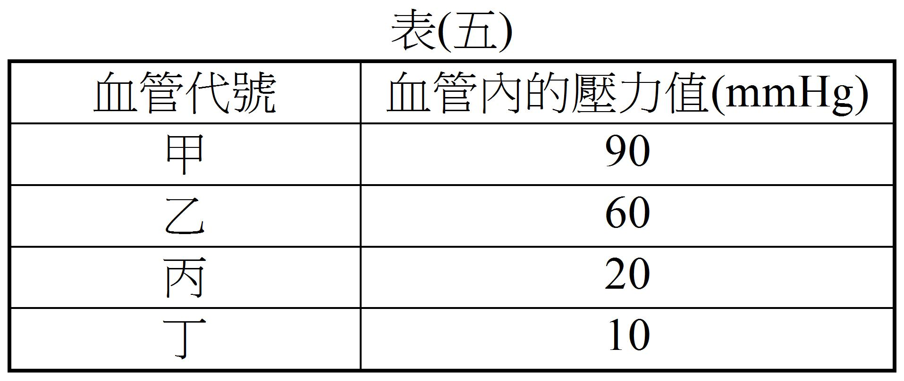164.( )已知血管內的血液是由壓力高往壓力低的方向流動。表(五)為同一器官中甲、乙、丙、丁四種血管及其內的壓力值，若這些血管分別是較大的動脈、小動脈、小靜脈和微血管，則下列血管代號和血管的配對，何者正確？【100基本學測一】
(A)甲—微血管
(B)乙—較大的動脈
(C)丙—小動脈
(D)丁—小靜脈
165.( )小祥用一條塑膠管綁住左手上臂，如下圖所示，結果發現a血管變得不明顯，而b血管浮現，則下列敘述何者正確？【095基本學測一】
(A)a為動脈，b為靜脈
(B)a為靜脈，b為動脈
(C)a和b皆為動脈
(D)a和b皆為靜脈
166.( )醫護人員在幫阿傑抽血前，先用橡皮軟管綁住他的手臂上端，如附圖所示。此時，橡皮軟管與手掌之間的部分靜脈會因此浮現而利於抽血，有關此時靜脈浮現的解釋，下列敘述何者最合理？【101基本學測】
(A)血液流向手掌的途徑受阻，使靜脈血量增多
(B)血液流向手掌的途徑受阻，使靜脈血量減少
(C)血液流向心臟的途徑受阻，使靜脈血量增多
(D)血液流向心臟的途徑受阻，使靜脈血量減少
167.( )小賢複習課程內容時，以人體血液運輸及氣體交換的概念，推估肺動脈、肺靜脈、肝動脈及肝靜脈中，O2含量的高低，並作成附圖。但老師認為此圖有錯誤，下列何者可老師的理由？【098基本學測一】
(A) O2含量在肺動脈與肝動脈應該相同
(B) O2含量在肺靜脈與肝靜脈應該相同
(C) O2含量在肺動脈內應較肺靜脈內低
(D) O2含量在肝動脈內應較肝靜脈內低
168.( )附圖為手臂血管中血液流動的示意圖，圖中的箭頭代表血液的流動方向，甲、乙、丙分別為三種不同的血管，下列相關敘述何者正確？【098基本學測二】
(A)乙會收縮並產生脈搏
(B)丙為物質交換的場所
(C)甲所含的葡萄糖量比乙、丙少
(D)丙所含的二氧化碳量比甲、乙多
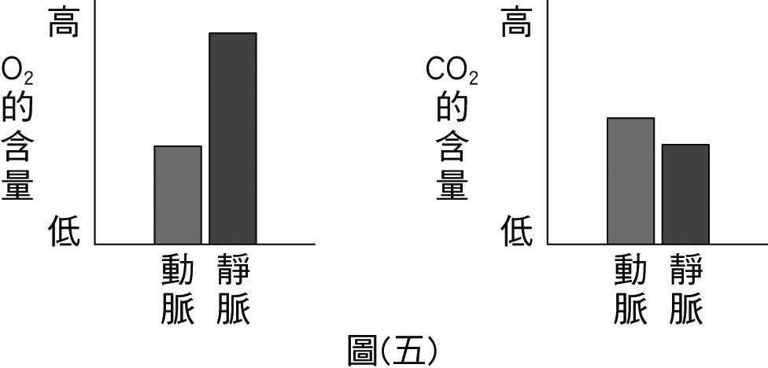169.( )下圖為人體內某器官的動脈及靜脈血液中O2和CO2的含量，則此器官最可能是下列何者？【099基本學測二】
(A)大腦
(B)肝臟
(C)肺臟
(D)腎臟
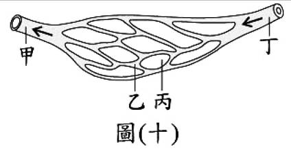170.( )下圖是人體甲、乙、丁三種不同的血管及其附近組織丙的示意圖，圖中箭頭表示血液的流動方向。組織丙可能位於肺或肌肉，則有關甲、丁內血液中氣體含量比較的敘述，下列何者正確？【100(北)聯測】
(A)若組織丙位於肺，則丁內的O2含量大於甲
(B)若組織丙位於肺，則丁內的CO2含量大於甲
(C)若組織丙位於肌肉，則丁內的O2含量小於甲
(D)若組織丙位於肌肉，則丁內的CO2含量大於甲
171.( )已知血液離開心臟後，直接進入甲血管，然後流經乙血管，再由丙血管流回心臟，各血管內血液中O2的含量如附圖所示。若乙血管是物質交換的場所，則甲、丙對應的血管名稱，下列何者正確？【102基本學測】
(A)甲是肺動脈
(B)甲是肺靜脈
(C)丙是主動脈
(D)丙是大動脈
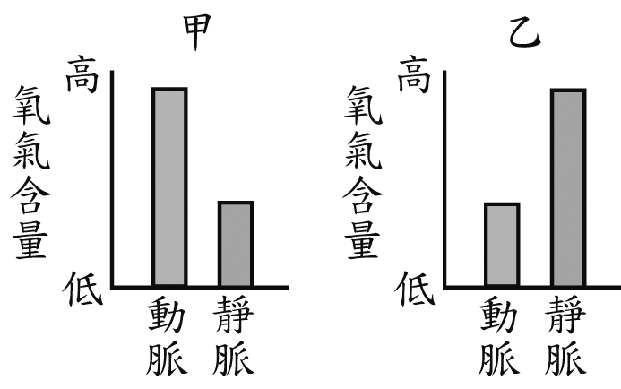172.( )附圖為人體內甲、乙兩種器官各自的動脈及靜脈血液中氧氣含量之示意圖。根據此圖推測，紅血球從獲得氧氣到釋出氧氣的運輸過程中，有關血液流經甲、乙及心臟的途徑，下列何者最合理？【104教育會考】
(A)甲→心臟→乙
(B)甲→乙→心臟
(C)乙→心臟→甲
(D)乙→甲→心臟
173.( )附圖為人體心臟、肝臟和腎臟之間血液循環的示意圖，箭頭代表血液流動的方向，甲、乙、丙及丁分別代表不同的血管。根據此圖的血液流動方向，分別比較甲和乙、丙和丁血液中的尿素濃度，下列何者最合理？【106教育會考】
(A)甲＜乙，丙＜丁
(B)甲＜乙，丙＞丁
(C)甲＞乙，丙＜丁
(D)甲＞乙，丙＞丁
174.( )小安今年一歲，正在學習走路，經常扶著手推車到處走。下列關於小安的行為，何者屬於「反射」的作用？【097基本學測一】
(A)摔倒時立刻放聲大哭
(B)腳踢到推車時立刻縮回
(C)看到媽媽時立刻微笑走向前
(D)發現週遭有新的東西時立刻指著它
175.( )附圖為人類中樞神經系統的構造示意圖，下列敘述中的反應與其主要控制中樞的配對，何者正確？【098基本學測二】
(A)手觸電後立刻縮回──甲
(B)看到相片回憶起快樂時光──乙
(C)血液中CO2濃度過高使呼吸加速──丙
(D)騎腳踏車時能保持平衡──丁
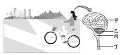176.( )附圖為小虹騎腳踏車及她的中樞神經系統示意圖。有關小虹騎腳踏車時，神經系統運作的相關敘述，下列何者正確？【099基本學測一】
(A)向左或向右前進由甲判斷
(B)呼吸頻率的快慢由乙調節
(C)身體的平衡是藉由丙維持
(D)腳踩踏板的速度由丁決定
177.( )以下是小凱用插圖及文字描述某日上午所發生的事情及時間：附圖為人體中樞神經系統的構造示意圖。根據上列插圖的文字描述，小凱中樞神經系統中的甲部位與當天下列哪一時間的活動之關係最密切？【100基本學測二】
(A)8：00
(B)8：30
(C)9：30
(D)10：05
178.( )「阿傑參加馬拉松比賽。他聽到哨聲起跑(甲)後，摔了一跤但迅速站起來再重新奔跑(乙)，沿途中不斷超越前方的對手(丙)，休息時手被意外打翻的熱水燙到立即縮回(丁)。」上述畫線處何者的反應不需由大腦所決定？【102基本學測】
(A)甲
(B)乙
(C)丙
(D)丁
179.( )小惠縫衣服時被針刺到手指尖端，立刻將手縮回，下列敘述何者正確？【090基本學測一】
(A)小惠感到痛及手縮回都是大腦反應的結果
(B)小惠感到痛及手縮回都是脊髓反應的結果
(C)小惠感到痛是大腦反應的結果；手縮回是脊髓反應的結果
(D)小惠感到痛是脊髓反應的結果；手縮回是大腦反應的結果
180.( )有一訊息的神經傳遞路徑如下：下列選項中，哪一項動作的訊息傳遞過程完全符合上述的路徑？【092基本學測二】
(A)手碰到熱燙的鍋子，迅速將手縮回
(B)走路時不慎踩到鐵釘，腳即刻縮回
(C)眼睛盯著電腦螢幕，右手操縱著滑鼠
(D)聽見柔和的音樂聲，心情不由得好了起來
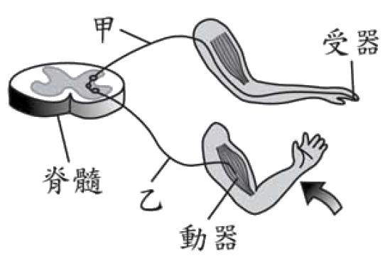181.( )下圖為小明左手指尖受到突來的刺激後，所引起左手臂肌肉收縮的過程，此過程涉及不同的神經及傳導方向，下列敘述何者正確？【094基本學測一】
(A)神經傳導方向是由乙到甲
(B)反覆練習可縮短此反應的時間
(C)此反應不涉及大腦的思考與判斷
(D)此反應和打棒球揮棒一樣，同屬身體的反射動作
182.( )小信騎摩托車發生車禍，雖然神智清楚，下半身卻因而癱瘓，圖中何處受傷最可能導致此種結果？【094基測題本一】
(A)甲
(B)乙
(C)丙
(D)丁
183.( )佛教有一部經典《心經》，其部分內容寫到「……無眼、耳、鼻、舌、身、意﹔無色、聲、香、味、觸、法……」。上文中的「眼、耳、鼻、舌、身」與「色、聲、香、味、觸」之配對，與下列何種系統最有關係？【095基本學測一】
(A)神經系統
(B)呼吸系統
(C)消化系統
(D)內分泌系統
184.( )下列有關人類反射作用的敘述何者正確？【096基本學測一】
(A)反射作用通常涉及大腦意識
(B)沒有動器也可以表現反射動作
(C)眨眼是協調中樞在腦內的反射動作
(D)反射動作的速度比有意識的動作慢
185.( )上體育課時，當老師從背後叫學生的名字，被叫到的同學會舉手並喊「有」。下列何者為此反應過程中的受器？【098基本學測一】
(A)眼
(B)耳
(C)口
(D)手
186.( )從受器接受刺激到引起動器反應的神經傳導過程中，下列何者是經由「感覺神經→脊髓→大腦→脊髓→運動神經」的傳導途徑？【100(北)聯測】
(A)聽到炮竹聲時用手掩住耳朵
(B)聞到惡臭味後用手掩住鼻子
(C)看到昆蟲飛過來就伸手驅趕
(D)摸到油膩物質後用肥皂洗手
187.( )小智、小明兩人玩猜拳遊戲，其過程為：小智看到小明出剪刀後，自己再迅速地出石頭。有關小智在此過程中的神經訊息傳導之敘述，下列何者正確？【101基本學測】
(A)出石頭是一種反射作用
(B)出石頭的動作是由手決定
(C)最先接受到刺激的是眼睛
(D)整個過程是由腦幹所控制
188.( )小玫聽到電話鈴聲後，趕緊拿起話筒接聽且回答。與上述過程相關的神經系統運作之敘述，下列何者最合理？【103教育會考】
(A)聽到鈴聲的感覺由耳朵產生
(B)回答的語句由腦幹產生
(C)拿起話筒的速度由脊髓決定
(D)是否接聽電話由大腦決定
189.( )當小庭看到驚悚畫面時，兩眼直視但身體刻意保持不動，而小瑋看到驚悚畫面時，則是大聲尖叫且用手遮眼。比較兩人從接受刺激到產生反應的相關敘述，下列何者最合理？【104教育會考】
(A)兩人的反應都是屬於反射作用
(B)兩人的反應都有藉著肌肉來表現
(C)小庭在此過程中的受器是眼睛；小瑋的受器則是手
(D)小庭只有感覺神經參與傳導；小瑋只有運動神經參與傳導
190.( )一般人手指觸電後會立刻縮手，也會感覺疼痛而趕緊甩手。附圖為人體指尖觸電時神經訊息傳導的示意圖，圖中甲、乙、丙分別為訊息傳導所經過的神經，下列有關此訊息傳導路徑相關敘述與所對應的神經之配對，何者最合理？【106教育會考】
(A)觸電後立刻縮手—甲、乙
(B)觸電後感覺疼痛—乙、丙
(C)受器接受刺激後傳至中樞神經—乙、丙
(D)中樞神經發出甩手的命令後傳至動器—丙、甲
191.( )小湘在街上看到久違的好朋友，興奮地立即揮手打招呼。下列與上述過程相關的神經系統運作之敘述，何者正確？【107教育會考】
(A)立即揮手是屬於反射作用
(B)此過程的受器是在手部肌肉
(C)興奮的感覺是由感覺神經產生
(D)揮手的命令是由運動神經傳遞
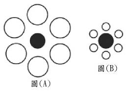192.( )李老師利用圖(A)、圖(B)兩圖和學生玩遊戲，大部分學生認為圖(B)中的黑圈較圖(A)中的大。這是哪一種訊息處理的結果？【092基本學測二】
(A)錯覺
(B)遺忘
(C)記憶
(D)視覺疲勞
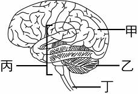193.( )根據圖示，有關運動員運動時其腦部組織相關之敘述，下列何者正確？【095基本學測一】
(A)甲可使心搏加快，加速血液循環
(B)乙能維持身體平衡，使運動員不跌倒
(C)丙能減少呼吸深度，減緩氧氣消耗
(D)丁可產生反射動作，使運動員加速奔跑
194.( )某人因患了阿茲海默氏症，而產生了語言能力的障礙，此現象最可能與下列何種器官出現異常有關？【095基本學測二】
(A)脊髓
(B)延腦
(C)大腦
(D)小腦
195.( )某書介紹中樞神經系統某一部位功能的敘述為：「接收到血壓太高的訊息時，會發出訊息經由神經傳至心臟，使心跳減慢。」此敘述最可能是在說明下列哪一個部位？【099基本學測二】
(A)大腦
(B)小腦
(C)腦幹
(D)脊髓
196.( )人們對榴槤的特殊氣味會有不同感受，有些人覺得香，有些人覺得臭，而不同感受主要是由下列哪一部位所產生？【108教育會考】
(A)鼻子
(B)腦幹
(C)大腦
(D)小腦
197.( )添文將右手放入甲杯水中立刻收回，感覺滾燙疼痛；之後再將右手放入乙杯水中，感覺清涼而疼痛減輕。下列敘述何者錯誤？【093基本學測一】
(A)痛的感覺在脊髓產生
(B)甲杯水溫高於乙杯水溫
(C)手立刻收回是一種反射動作
(D)熱量的傳播途徑為：甲杯水→手→乙杯水
198.( )小亞遇到窮追狂吠的野狗時，感到害怕，轉身逃跑。下列關於她生理變化的敘述何者正確？【095基本學測一】
(A)聽見狗吠就逃跑，屬於反射動作，傳導路徑不經大腦
(B)腎上腺素大量分泌，使血壓下降，心跳次數增加
(C)血糖濃度上升，使組織獲得足夠的養分
(D)大腦調節使心跳頻率及呼吸頻率上升
199.( )大地震發生時，先生奪門而出，並有心跳加速，血壓上升的現象；這種反應最可能是由下列何種激素引起？【090基測題本一】
(A)胰島素
(B)腎上腺素
(C)生長激素
(D)副甲狀腺
200.( )男性生殖系統中哪一器官和女性的卵巢功能相當？【093基本學測一】
(A)附睪
(B)睪丸
(C)精囊
(D)攝護腺
201.( )關於胰島素的敘述，下列何者正確？【098基本學測一】
(A)由肝臟產生
(B)藉由血液運送
(C)可增加血糖濃度
(D)能促進蛋白質的分解
202.( )附圖為人體內分泌系統示意圖，甲、乙、丙及丁代表腺體的名稱。有關這些腺體與其分泌激素異常所引起的生理現象之配對，下列何者正確？【099基本學測一】
(A)甲－－尿液中含有多量的葡萄糖
(B)乙－－身高比成人的平均多
(C)丙－－食慾增加但體重減輕
(D)丁－－血液中鈣濃度異常增加
 203.( )以下是小凱用插圖及文字描述某日上午所發生的事情及時間：附圖為人體內分泌系統的部分構造示意圖。根據上列圖文，造成小凱在7：40的反應之主要激素是來自下列哪一內分泌腺？【100基本學測二】
203.( )以下是小凱用插圖及文字描述某日上午所發生的事情及時間：附圖為人體內分泌系統的部分構造示意圖。根據上列圖文，造成小凱在7：40的反應之主要激素是來自下列哪一內分泌腺？【100基本學測二】
(A)甲
(B)乙
(C)丙
(D)丁
204.( )關於酵素與激素的敘述，下列何者正確？【095基本學測二】
(A)酵素與激素皆由醣類組成
(B)酵素與激素均僅由血液運送
(C)胰島素屬於酵素，胃蛋白酉每屬於激素
(D)酵素可加速生物化學反應，激素可傳遞訊息給目標細胞
205.( )下列有關動物激素之敘述何者正確？【097基本學測一】
(A)分泌激素的細胞與受激素影響的細胞皆位於同一器官
(B)激素必須由特定管道輸送到特定的細胞才能發生作用
(C)生物體中需要有大量激素，才能對生理功能產生明顯的影響
(D)引發昆蟲變態及蝌蚪發育成青蛙等現象，均與激素的作用有關
206.( )科學家要研究激素對血液中物質濃度的影響，在大白鼠身上分次靜脈注射激素X、Y及Z，並記錄注射前後血液中鈣及葡萄糖的濃度變化。已知每次注射都有足夠的時間間隔，使激素不會彼此干擾。附表為此實驗的平均結果，請根據附表回答下列問題：(mmol/L：毫莫耳/公升)。此實驗中大白鼠所注射的激素Y最可能為下列何者？【103教育會考】
(A)副甲狀腺素
(B)胰島素
(C)升糖素
(D)腎上腺素
207.( )下圖是用餐前後血糖濃度的變化情形。胰島素在下列哪一個階段開始發生作用？【092基本學測一】
(A)甲
(B)乙
(C)丙
(D)丁
208.( )如下圖所示，甲、乙分別代表某種可影響血糖濃度變化的激素，則「乙」最有可能是下列哪一種激素？【094基本學測一】
(A)甲狀腺素
(B)性激素
(C)胰島素
(D)升糖素
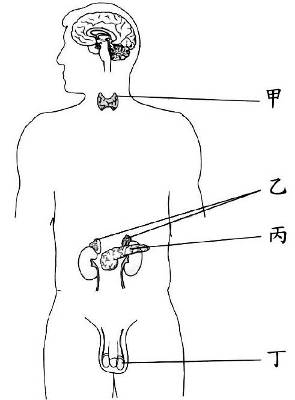209.( )如圖為人體各個內分泌腺分布情形，其中哪一種腺體的激素分泌不足時，會造成血液中葡萄糖濃度增加並隨尿液排出，而形成糖尿病？【094基測題本一】
(A)甲
(B)乙
(C)丙
(D)丁
210.( )老王做體檢，他禁食8小時後抽血檢測血液中葡萄糖濃度，接著在飯後2小時，又做相同的檢測。這項檢測主要是瞭解下列何種激素的功能？【096基本學測一】
(A)甲狀腺素
(B)生長素
(C)胰島素
(D)腎上腺素
211.( )有些糖尿病患者需要每天注射激素X，但在注射後有時會再補充適量的糖，以避免出現心悸、顫抖等症狀。下列對此現象的解釋，何者最合理？【098基本學測二】
(A)X為胰島素，有時會造成血糖過度增加
(B)X為胰島素，有時會造成血糖過度降低
(C)X為腎上腺素，有時會造成血糖過度增加
(D)X為腎上腺素，有時會造成血糖過度降低
212.( )某健康受試者接受血糖濃度的測量，空腹8小時後測得每100 mL血液中含有90 mg的葡萄糖。之後喝下一杯高濃度的葡萄糖液，並且每隔半小時接受血糖濃度的測量。有關此人喝下葡萄糖液後到血糖濃度達到穩定前，其血糖濃度變化的敘述，下列何者正確？【099基本學測一】
(A)血糖濃度不會有變動
(B)血糖濃度會持續上升
(C)血糖濃度會先降後升
(D)血糖濃度會先升後降
213.( )附圖為人體消化系統局部的示意圖，下列哪一器官的功能與提供血糖調節或血糖濃度的相關性最低？【099基本學測二】
(A)甲
(B)乙
(C)丙
(D)丁
 214.( )在有關認識糖尿病的研究中，某研究員為了探討糖尿病形成的可能原因及相關物質的成分，利用一群條件相同的大白鼠，分成五組進行實驗，實驗中各組別的處理方式及結果如表(八)所示。根據實驗組別二，切除胰臟的大白鼠會出現糖尿病，其原因可能是大白鼠已無法分泌下列何者？【100基本學測一】
214.( )在有關認識糖尿病的研究中，某研究員為了探討糖尿病形成的可能原因及相關物質的成分，利用一群條件相同的大白鼠，分成五組進行實驗，實驗中各組別的處理方式及結果如表(八)所示。根據實驗組別二，切除胰臟的大白鼠會出現糖尿病，其原因可能是大白鼠已無法分泌下列何者？【100基本學測一】
(A)胰臟的消化液
(B)小腸的消化液
(C)使血糖升高的物質
(D)使血糖降低的物質
215.( )某健康受試者在空腹8小時後，喝下一杯高濃度的葡萄糖液，並且每隔半小時接受血糖濃度的測量，其結果如附表所示。下列有關在不同時間範圍造成血糖濃度變化的可能原因，何者最合理？【101基本學測】
(A)在0至30分之間，胰島素分泌量持續減少
(B)在0至60分之間，澱粉被分解成葡萄糖
(C)在60至90分之間，腎上腺素分泌量持續增加
(D)在60至120分之間，葡萄糖轉變成肝糖儲存
216.( )將紅豆放在玻璃管中，置於僅有唯一光源的暗室如下圖。經過一段時間，根的生長方向如圖中所示，下列有關實驗結果的推論，哪一項最合理？【091基本學測二】
(A)在玻璃管內發芽的紅豆，根只會沿水平方向生長
(B)根表現向溼性，所以有水的情況下就沿水平方向生長
(C)將豆子水平放進玻璃管，所以呈水平生長方向
(D)根同時表現了向地性與背光性，因而沿水平方向生長
217.( )下列因素，何者會促使植物的莖表現出向性？【096基本學測二】
(A)日夜溫度不同
(B)季節間雨量不同
(C)周圍的空氣溼度不同
(D)周圍的光線強度不同
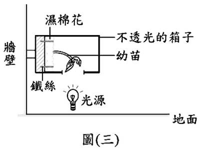218.( )小慧欲研究環境因子對植物生長的影響，在牆壁上設立一個裝置，裝置內的幼苗種植在以鐵絲固定的溼棉花上，並在地上放置光源照射此幼苗。經一段時間後，幼苗會朝著固定的方向生長，如下圖所示。下列何者可解釋此現象？【100(北)聯測】
(A)莖背地的效應大於向光的效應
(B)莖背光的效應大於向地的效應
(C)莖向地的效應大於背光的效應
(D)莖向光的效應大於背地的效應
219.( )下列植物的感應，何者和生長激素有關？【090基本學測二】
(A)向日葵的向光性
(B)合歡的睡眠運動
(C)豬籠草的觸發運動
(D)紫背萬年青的氣孔開閉
220.( )含羞草的葉片長得像羽毛一樣，一旦受到觸碰便會閉合起來。這種觸發運動的原理和下列哪一個植物的感應現象原理相同？【093基本學測二】
(A)鳳仙花的開花
(B)綠豆芽的向光性
(C)酢漿草的睡眠運動
(D)絲瓜的莖繞著竹竿生長
221.( )下列常見的現象，何者不是植物「向性」的表現？【094基測題本一】
(A)酢漿草葉片表現睡眠運動
(B)葡萄莖沿竹竿向上捲曲爬升
(C)窗邊的盆栽植物朝窗外生長
(D)曠野中的樹木長得高大挺拔
222.( )下列哪一現象屬於植物的向性？【095基本學測二】
(A)梅花在冬天開花
(B)碰觸含羞草時，它的葉片會閉合
(C)酢漿草葉片上的氣孔，在白天會打開
(D)橫放的豆苗盆栽，其莖會彎曲向上生長
223.( )冬梅暑假出外旅行時，把所種植物全放在溫室，溫室有自動澆水系統。但不小心把其中一盆花撞倒如圖所示，當她一個月後回來時，這盆植物會生長得如下列哪一圖？【090基測題本一】
(A) 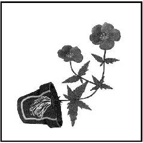
(B) 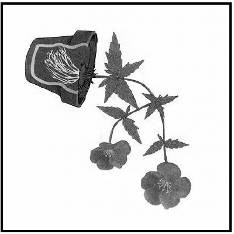
(C) 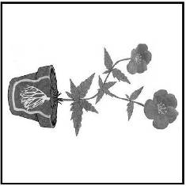
(D)12
224.( )小貞要研究環境因素對植物生長的影響。她在暗室內設立一個斜坡裝置，並將植株盆栽固定在斜坡上，再以燈泡連續照射，如圖(七)所示。若盆栽內土壤保持潮溼且養分充足，經一段時間後，此植株的生長情形與下列哪一個圖示最相似？【100基本學測一】
(A)
(B)
(C)
(D)
225.( )將幼苗和旋轉器放在一個具有可控制開口的不透光盒子內，如附圖所示。以不透光盒子的開口是否打開及旋轉器是否旋轉，作為不同的處理條件，若植物在下列四種處理條件下皆能持續生長，則經一段時間後，何者的幼苗會發生最明顯彎曲生長的現象？【101基本學測】
(A)
(B)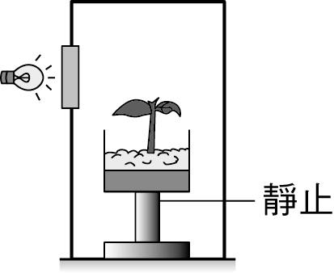
(C)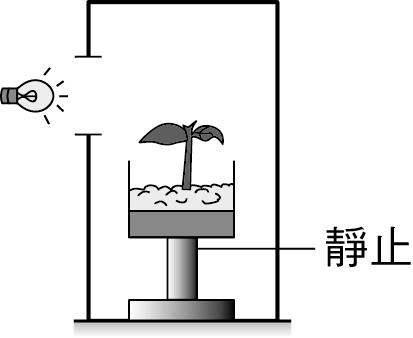
(D)6
226.( )如附圖所示，一個箱子的四面被標記為甲、乙、丙、丁，箱內有一株幼苗在以鐵絲固定的溼棉花上生長，且此箱子一直放置在黑暗環境中。根據此幼苗彎曲生長的方向，推測箱子在該環境中被放置時，最可能是以哪一面接觸水平地面？【105教育會考】
(A)甲
(B)乙
(C)丙
(D)丁
227.( )將種有植株的兩相同盆栽，分別放在甲、乙兩個獨立的黑暗房間內，且將光源擺放在不同位置照射植株，經一段時間後，其生長狀況如圖1所示。若此時把光源移開，再經一段時間後，觀察莖的生長方向。若圖2為預測莖生長方向的示意圖，則下列有關甲、乙兩處的莖生長之敘述，何者最合理？【107教育會考】
(A)兩處的莖皆如①生長
(B)兩處的莖皆如生長
(C)甲處的莖如①生長；乙處的莖如③生長
(D)甲處的莖如③生長；乙處的莖如①生長
228.( )下列何種動物的體溫會隨環境溫度的變化而明顯的改變？【093基本學測一】
(A)人類
(B)海豚
(C)麻雀
(D)鯉魚
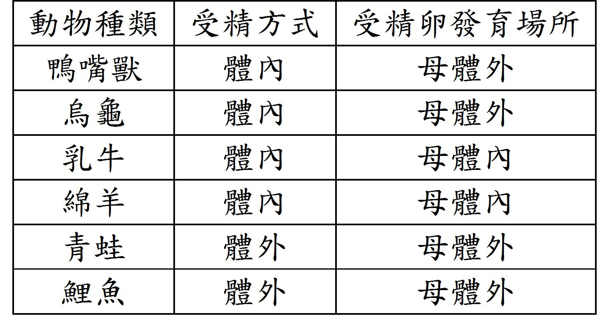229.( )六種動物的受精方式及受精卵發育場所的比較如附表。依此表的資料及這些動物調節體溫的特性來判斷，下列敘述何者最合理？【102基本學測】
(A)表中進行體內受精者都是內溫動物
(B)表中進行體外受精者都是內溫動物
(C)表中受精卵在母體內發育者都是內溫動物
(D)表中受精卵在母體外發育者都是外溫動物
230.( )附圖為某園區內的標示牌。根據此圖，若管理員想將此組標示牌再加上「外溫動物區」及「內溫動物區」，關於此想法是否適當及其原因，下列說明何者最合理？【107教育會考】
(A)適當，左方全為外溫動物，右方全為內溫動物
(B)適當，左方全為內溫動物，右方全為外溫動物
(C)不適當，左方全為外溫動物，但右方不全為內溫動物
(D)不適當，左方全為內溫動物，但右方不全為外溫動物
231.( )「在寒風中，衣著單薄的小男孩（甲）臉上因血液流量少而顯得蒼白，（乙）身體不斷顫抖著，（丙）額頭上直冒汗，（丁）一心想吃東西。」若以調節體溫恆定的正常生理反應判斷，上述畫線處何者的描述不合理？【100(北)聯測】
(A)甲
(B)乙
(C)丙
(D)丁
232.( )某動物在不同環境溫度下的體溫變化，如附圖所示。則此動物維持體溫方式的相關敘述，下列何者正確？【105教育會考】
(A)外溫動物，主要藉由代謝產生的熱量維持體溫
(B)外溫動物，主要從外界環境吸收熱量維持體溫
(C)內溫動物，主要藉由代謝產生的熱量維持體溫
(D)內溫動物，主要從外界環境吸收熱量維持體溫
233.( )小莉的暑假作業是觀察氣溫變化與體溫變化的關係。已知某日小莉居住環境的氣溫變化如附圖所示，若當日小莉身體狀況良好並記錄了自己的體溫變化，則下列何者最可能是她的體溫測量結果？【099基本學測一】
(A)
(B)
(C)
(D)
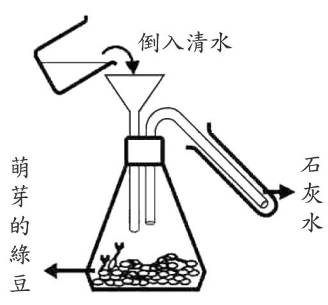234.( )小文利用已萌芽的綠豆進行實驗，裝置如下圖。若干小時後由漏斗倒入一杯清水，同時觀察石灰水的變化。下列何者是實驗中倒入清水的目的？【091基本學測一】
(A)清洗錐形瓶
(B)將瓶內的氣體擠入試管中
(C)促使綠豆生長並快速產生
(D)促使綠豆生長並快速產生
235.( )有關呼吸作用的敘述，下列何者正確？【093基本學測二】
(A)鳥類、魚類行呼吸作用，所呼出的氣體不同
(B)動物、植物行呼吸作用，所呼出的氣體相同
(C)植物行呼吸作用和光合作用所釋放的氣體相同
(D)青蛙用鰓呼吸、烏龜用肺呼吸，兩者所釋放的氣體不同
236.( )某些食品業者在運輸貯藏新鮮蔬果的過程中，會調整包裝箱內空氣的組成比例以減緩蔬果的呼吸作用，進而延長蔬果保持新鮮的時間。下列何者最可能是他們調整箱內空氣組成比例的方式？【100(北)聯測】
(A)減少O2濃度並增加N2濃度
(B)減少N2濃度並增加H2O濃度
(C)減少H2O濃度並增加O2濃度
(D)減少CO2濃度並增加O2濃度
237.( )小美跑800公尺後，呼吸變快，圖中何者是控制呼吸加速的主要部位？【090基本學測一】
(A)甲
(B)乙
(C)丙
(D)丁
238.( )小鍬在參加馬拉松路跑時，呼吸頻率增加而顯得氣喘吁吁。下列何者是產生此現象的原因？【097基本學測一】
(A)血液中一氧化碳濃度降低，刺激大腦增加呼吸頻率
(B)血液中二氧化碳濃度增加，刺激腦幹增加呼吸頻率
(C)血液中氮氧濃度增加，刺激腦幹增加呼吸頻率
(D)血液中氧氣濃度降低，刺激大腦增加呼吸頻率
239.( )小華是健康的受試者，附圖是他在甲和乙兩種不同狀態下，每分鐘呼吸次數的比較。圖中甲和乙呼吸次數不同的原因，可能是小華處在乙狀態時，血液中的下列哪一種成分增加所造成？【100基本學測二】
(A)O2
(B)N2
(C)H2O
(D)CO2
240.( )在惡臭的環境中，小葵用手掐住鼻子閉氣，不久，卻憋不住氣而放開手，大口呼吸起來，這是因為其血液中下列哪種氣體含量增高所造成？【102基本學測】
(A) O2
(B) O3
(C) CH4
(D) CO2
241.( )小明做胸部X光檢查時，需要吸氣後閉氣不動，吸氣過程中他的肋骨和橫膈如何運動？【092基本學測二】
(A)肋骨上舉、橫膈舒張而上升
(B)肋骨上舉、橫膈收縮而下降
(C)肋骨下降、橫膈舒張而上升
(D)肋骨下降、橫膈收縮而下降
242.( )小哲喜歡吹奏薩克斯風。當他吹氣使該樂器發出聲音時，會發生下列哪一種情形？【096基本學測一】
(A)空氣從外界流至胸腔
(B)橫膈位置逐漸下降
(C)肋骨位置逐漸上舉
(D)胸腔體積逐漸變小
243.( )人在打噴嚏時，常會產生「哈……啾」二階段的口形，當「啾」的口形產生時，下列敘述何者錯誤？【097基本學測二】
(A)肋骨上舉
(B)橫膈上升
(C)肺部體積縮小
(D)二氧化碳從肺部排出
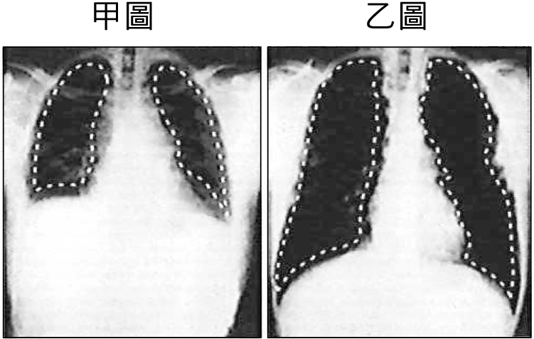244.( )附圖所示為同一個人在用力吸氣和用力呼氣後，分別被拍攝的兩張胸部X光圖，圖中以白色虛線所圍的區域為肺的示意位置。有關判斷吸氣後閉氣不動所拍攝的X光圖及其理由，下列敘述何者正確？橫膈，又稱橫膈膜 【101基本學測】
(A)甲圖，因肺較小
(B)乙圖，因肺較大
(C)甲圖，因橫膈下降
(D)乙圖，因橫膈上升
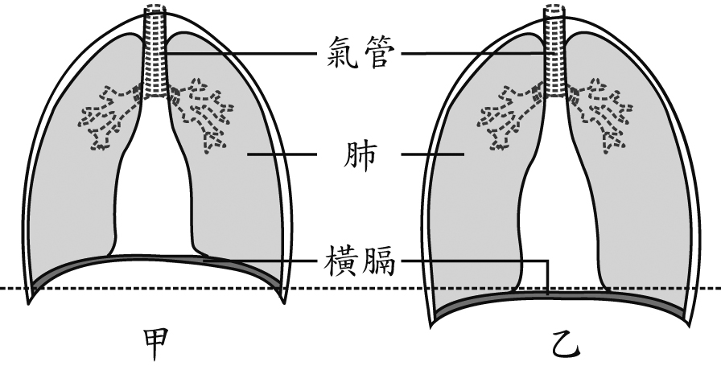245.( )附圖為人體進行呼吸運動時，橫膈位置變動的示意圖。利用藍色氯化亞鈷試紙可檢測人體呼出氣體中的某物質。有關呼氣時橫膈位置的變化及可使試紙變色的物質，下列何者正確？【104教育會考】
(A)甲→乙，水
(B)甲→乙，二氧化碳
(C)乙→甲，水
(D)乙→甲，二氧化碳
246.( )當人體呼吸系統內氣體由肺泡往支氣管、氣管移動，此時進行呼吸運動的相關構造之變化，下列何者最合理？【108教育會考】
(A)肺漸變大
(B)橫膈上升
(C)胸腔變大
(D)肋骨上舉
247.( )人體血液中的水分減少時，將會產生何種生理現象？【092基本學測二】
(A)血液濃度降低
(B)排尿頻率增加
(C)呼吸頻率減少
(D)刺激腦幹感到口渴
248.( )下表為大雄每日水分的平均攝入量與排出量，根據資料判斷，下列推論何者錯誤？【094基本學測二】
(A)水分主要靠尿液排出
(B)水分的攝入主要來自於飲水
(C)水分的攝入量及排出量維持平衡
(D)水分經由食物的攝入量高於尿液的排出量
249.( )下列生物的構造，何者是為了減少表面積所演化而成？【094基本學測二】
(A)仙人掌的針狀葉
(B)人類小腸上的絨毛
(C)響尾蛇身上的鱗片
(D)麻雀翅膀上的羽毛
250.( )研究員在不同氣溫條件下，測量某受試者呼氣、尿液、汗液和糞便中的水分，利用這些數據計算此人平均每日失去的水分，如表(一)所示。根據此表，若受試者在測試期間生理現象皆正常穩定，且空氣中的溼度保持在固定的範圍內，則推測在氣溫7～的環境下，此受試者最可能發生下列何種現象？【100基本學測一】
(A)呼氣時不會失去水分
(B)以汗液形式失去的水分較尿液少
(C)以糞便形式失去的水分較尿液多
(D)尿液和汗液所失去的水分都比炎熱時增加
251.( )下圖是人體的泌尿系統，下列相關敘述何者正確？【092基本學測一】
(A)甲處可以形成尿素
(B)乙處可以製造尿液
(C)丙處將血液送回血管
(D)丁處將尿液中的水分再吸收
252.( )下列關於人體腎臟的敘述，何者正確？【094基本學測二】
(A)屬於消化器官
(B)具有長期貯存尿液的功能
(C)形成的尿液可經由尿道送入膀胱
(D)可將血液中的含氮廢物由尿液排出體外
253.( )附圖為人體泌尿系統和其所連接的血管示意圖。關於圖中甲、乙、丙和丁構造的主要功能敘述，下列何者不正確？【098基本學測二】
(A)甲為合成尿素
(B)乙為輸送尿液
(C)丙為輸送血液
(D)丁為儲存尿液
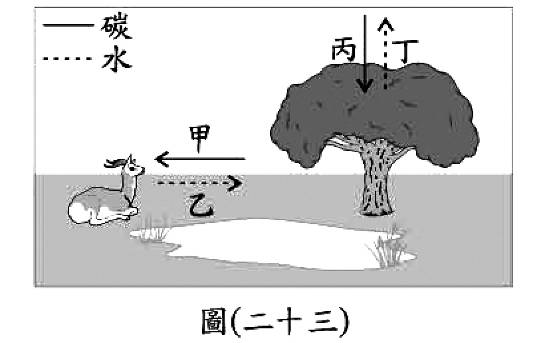254.( )圖(二十三)為某些物質在生物體和環境之間流動的示意圖，甲、丙表示含碳物質進入生物體的相關生理作用，乙、丁表示水離開生物體的相關生理作用，根據此圖，下列有關甲、乙、丙、丁四種作用的推論，何者錯誤？【100基本學測一】
(A)甲可能為呼吸作用
(B)乙可能為排泄作用
(C)丙可能為光合作用
(D)丁可能為蒸散作用
255.( )痛風為體內代謝的尿酸結晶堆積在人體關節所引起的疾病，這類病人在飲食中應避免大量攝取哪一類食物？【090基本學測二】
(A)白米飯
(B)海鮮
(C)水果
(D)奶油
256.( )下列有關人體代謝產生的含氮廢物之敘述，何者正確(含氮廢物包含氨和尿素等)？【098基本學測一】
(A)尿素主要在肝臟合成
(B)尿素對細胞的毒性比氨大
(C)含氮廢物主要是由醣類代謝後所產生
(D)含氮廢物主要經由呼吸系統排出體外
257.( )下圖為甲、乙兩種細胞分裂過程中染色體數目變化的示意圖。根據此圖判斷下列敘述何者正確？【094基本學測二】
(A)甲最後可產生二個子細胞
(B)甲為細胞分裂，乙為減數分裂
(C)人類精子的形成須經過甲分裂過程
(D)由甲分裂方式進行生殖產生的後代，其遺傳物質和親代完全相同
258.( )下圖(一)為女性的生殖系統，圖(二)為細胞分裂過程中染色體數量的變化圖。圖(一)中哪一部分能進行如圖(二)所示的細胞分裂方式？【096基本學測二】
(A)甲
(B)乙
(C)丙
(D)丁
259.( )如附圖，甲與乙是細胞兩種不同分裂方式的過程中，其遺傳物質含量變化的示意圖。下列現象與甲、乙的配對，何者正確？【098基本學測二】
(A)花瓣細胞的產生－甲
(B)種子萌發為幼苗－甲
(C)人類受精卵的發育－乙
(D)人類卵細胞的產生－乙
260.( )附圖為細胞內的某兩對染色體，以甲、乙、丙、丁為代號的示意圖。在正常狀況下，有關細胞進行分裂與分裂時這些染色體分離的敘述，下列何者正確？【106教育會考】
(A)若進行細胞分裂，則甲與乙必分離至不同的細胞中
(B)若進行細胞分裂，則甲與丁必分離至不同的細胞中
(C)若進行減數分裂，則乙與丙必分離至不同的細胞中
(D)若進行減數分裂，則丙與丁必分離至不同的細胞中
261.( )下圖為洋蔥根尖的組織切片。下列何者為箭頭所指的構造？【092基本學測一】
(A)葉綠體
(B)染色體
(C)細胞壁
(D)細胞核
 262.( )生物技術中利用基因選殖的方式，將一段胰島素基因插入酵母菌內，透過酵母菌繁殖以大量生產人類胰島素，用來造福糖尿病患者。根據下圖的細胞模式圖，何處可取出製造胰島素的基因？【096基本學測二】
262.( )生物技術中利用基因選殖的方式，將一段胰島素基因插入酵母菌內，透過酵母菌繁殖以大量生產人類胰島素，用來造福糖尿病患者。根據下圖的細胞模式圖，何處可取出製造胰島素的基因？【096基本學測二】
(A)甲
(B)乙
(C)丙
(D)丁
263.( )下圖為一個孕婦做羊膜穿刺檢查後，得到胎兒的染色體圖，由此圖推論，下列敘述何者正確？【094基本學測一】
(A)胎兒是男性
(B)胎兒有23對體染色體
(C)胎兒性別由第21對染色體決定
(D)胎兒染色體中有1對為性染色體
264.( )在正常狀況下，下列有關人類性別與染色體組合的敘述，何者正確？【097基本學測二】
(A)卵子的染色體只有一種組合為22(條)＋X
(B)精子的染色體只有一種組合為22(條)＋X
(C)男性的皮膚細胞內染色體組合為44(條)＋XX
(D)女性的皮膚細胞內染色體組合為44(條)＋XY
265.( )將洋蔥根尖細胞中的基因、染色體及細胞核作一比較，此三者大小關係為何？【090基本學測一】
(A)基因＞染色體＞細胞核
(B)細胞核＞染色體＞基因
(C)細胞核＞基因＞染色體
(D)染色體＞細胞核＞基因
266.( )下列關於生物染色體的敘述，何者正確？【097基本學測一】
(A)染色體數目愈多，表示生物愈高等
(B)每一條染色體上通常只有一個基因
(C)所有細胞內的染色體都是成對染色體
(D)同種生物通常會有固定的染色體數目
267.( )下列有關動物細胞進行減數分裂的敘述，何者正確？【098基本學測一】
(A)會使體細胞的數目增加
(B)是無性生殖所需的步驟
(C)會產生含不同基因的配子
(D)會使配子的DNA含量增加
268.( )下列生物所行的生殖方式，何者其細胞必須經過減數分裂的過程？【092基本學測二】
(A)渦蟲的斷裂生殖
(B)酵母菌出芽生殖
(C)菊花的種子繁殖
(D)馬鈴薯的營養繁殖
269.( )下列何者為草莓的匍匐莖繁殖、鯨魚生小鯨魚，以及落地生根以葉繁殖的共通點？【095基本學測二】
(A)有減數分裂
(B)有受精作用
(C)有細胞分裂
(D)有基因重組
270.( )在適合的環境下，下列哪一種生物的構造無法直接發育成新個體？【096基本學測一】
(A)落地生根的葉
(B)果蠅的卵細胞
(C)酵母菌的芽體
(D)黑黴菌的孢子
271.( )小玲取了某株植物的部分組織，放入培養基中進行繁殖，有關以此方式繁殖出的新植株，下列敘述何者最合理？【108教育會考】
(A)是由原植株的細胞經減數分裂產生
(B)是由原植株的細胞經細胞分裂產生
(C)新植株細胞內的基因為原植株細胞的一半
(D)新植株細胞內的染色體為原植株細胞的一半
272.( )大雄打籃球時不慎跌倒，手肘受傷。過一陣子，傷口邊緣增生新細胞，使傷口慢慢癒合。有關這類新增生的細胞，下列敘述何者正確？【096基本學測一】
(A)新細胞具有雙套染色體
(B)新細胞由減數分裂增生而來
(C)新細胞內染色體與周圍細胞的染色體不同
(D)新細胞內染色體數目比原來的細胞少一半
273.( )同一個人的五官如眼睛、耳朵、鼻子，皆為體細胞所構成的器官，具有不同的外形。下列關於這些不同器官的體細胞，其基因的組成是否相同之敘述，何者正確？【097基本學測一】
(A)相同，這些體細胞都是由受精卵經減數分裂所產生
(B)相同，這些體細胞都是由受精卵經細胞分裂所產生
(C)不相同，這些體細胞是由不同的細胞分化而來
(D)不相同，這些體細胞的性狀不同，基因組成也不相同
274.( )某昆蟲的生長發育過程如附圖所示，甲、乙、丙、丁分別代表不同的時期。若不考慮生殖細胞及突變，比較此昆蟲在不同時期細胞內的染色體數目，下列何者最合理？【103教育會考】
(A)四個時期都相同
(B)四個時期都不同
(C)除了甲外，其餘三個時期都相同
(D)除了丙外，其餘三個時期都相同
275.( )若要觀察植物細胞分裂，則取圖中植物哪一部位的組織最為適當？【093基本學測二】
(A)甲
(B)乙
(C)丙
(D)丁
276.( )已知黑猩猩的體細胞有48條染色體。當雄性黑猩猩體內行減數分裂產生精子時，有關染色體的敘述，下列何者正確？【090基本學測二】
(A)染色體複製1次，精子內含24條染色體
(B)染色體複製2次，精子內含48條染色體
(C)染色體複製1次，精子內含48條染色體
(D)染色體複製2次，精子內含96條染色體
277.( )果蠅複眼細胞的細胞核中有8條染色體，則其體細胞及卵細胞中的細胞核內分別有多少染色體？【090基測題本二】
(A)8條，4條
(B)8條，2對
(C)4對，8條
(D)4對，2對
278.( )下圖是母雞所生未受精的蛋。若母雞皮膚細胞的細胞核中，含有a條染色體，則圖中箭頭處所指的小白點應含有幾條染色體？【091基本學測一】
(A)2a
(B)a
(C)a/2
(D)a/4
279.( )已知果蠅的體細胞有4對染色體，則下列何者是其卵子中的染色體數？【091基本學測二】
(A)4對染色體
(B)2對染色體
(C)4條不成對的染色體
(D)2條不成對的染色體
280.( )已知臺灣水牛的體細胞有48條染色體，當母牛懷有雙胞胎時，這兩個胚胎的細胞分別具有幾條染色體？【093基本學測二】
(A)24，24
(B)24，48
(C)48，48
(D)48，96
 281.( )某一地區棲息著一種蛾，身體顏色有淺色和深色兩種；牠們晚上活動，白天在樺樹的樹幹上休息；此地區中還生存許多鳥類，會捕食這些蛾。在西元1935年，此地區建了許多工廠。不斷產生的黑煙把原先樹幹顏色較淺的樺樹燻黑了。研究員從西元1910年開始調查此區淺色蛾和深色蛾的比例，所得的結果如下表所示。如果把這地區已被燻黑的樺樹所產生的種子，播種在另一個沒有黑煙汙染的新環境。下列對於新長出樺樹的敘述，何者正確？【098基本學測一】
281.( )某一地區棲息著一種蛾，身體顏色有淺色和深色兩種；牠們晚上活動，白天在樺樹的樹幹上休息；此地區中還生存許多鳥類，會捕食這些蛾。在西元1935年，此地區建了許多工廠。不斷產生的黑煙把原先樹幹顏色較淺的樺樹燻黑了。研究員從西元1910年開始調查此區淺色蛾和深色蛾的比例，所得的結果如下表所示。如果把這地區已被燻黑的樺樹所產生的種子，播種在另一個沒有黑煙汙染的新環境。下列對於新長出樺樹的敘述，何者正確？【098基本學測一】
(A)樹幹為黑色，因為其親代樹幹為黑色
(B)樹幹為黑色，因為黑煙使淺色樹幹突變為黑色
(C)樹幹為淺色，因為黑色樹幹是環境造成並不能遺傳
(D)樹幹為淺色，因為形成層會長出新組織取代黑色樹幹。
282.( )某種青黴菌可產生特定的抗生素，此抗生素能抑制某些細菌的生長，但對青黴菌本身沒有影響。在不考慮突變的情況下，當此青黴菌以無性生殖產生孢子，則由這些孢子發育成的青黴菌，最可能具有下列何種特徵？【099基本學測二】
(A)染色體的數目會減半
(B)能產生相同的抗生素
(C)遺傳物質的成分和親代不同
(D)其生長受親代產生的抗生素所抑制

 283.( )壓條法是一種園藝植物常見的繁殖方法，例如蘋果樹的枝幹有許多分枝，可隨意地選取強健的分枝做壓條。附圖是某一優良品種的蘋果樹進行壓條的過程示意圖：水苔屬於蘚苔植物，保水性強，可持續提供水分。在不考慮突變的情形下，有關壓條法繁殖出的新植株，下列敘述何者最合理？【102基本學測】
283.( )壓條法是一種園藝植物常見的繁殖方法，例如蘋果樹的枝幹有許多分枝，可隨意地選取強健的分枝做壓條。附圖是某一優良品種的蘋果樹進行壓條的過程示意圖：水苔屬於蘚苔植物，保水性強，可持續提供水分。在不考慮突變的情形下，有關壓條法繁殖出的新植株，下列敘述何者最合理？【102基本學測】
(A)染色體數目會比原植株增加
(B)不能再以種子繁殖新的子代
(C)是和原植株不一樣的新物種
(D)控制果實顏色的基因型和原植株相同
284.( )「無根萍」是原產於臺灣的浮水植物，個體極小，且無根、莖、葉之分，僅有類似葉的構造浮於水面。此外，植株內具有雄蕊及雌蕊，可開花結果繁殖後代，不過無根萍主要繁殖子代的方式，是利用植株一端所長出的小芽。當小芽成熟後，會離開母體而沉入水底，幾天之後再浮出水面長成新的個體。有關無根萍的生殖構造或繁殖方式，下列敘述何者最合理？【105教育會考】
(A)不會產生胚珠
(B)不會產生生殖細胞
(C)主要的繁殖方式不會增加遺傳的變異
(D)主要的繁殖方式須經減數分裂的過程
285.( )下圖為海參在進行斷裂生殖的示意圖，則下列有關海參的敘述，何者正確？【095基本學測二】
(A)此種生殖屬於無性生殖
(B)此種生殖過程需形成配子
(C)水螅的出芽生殖與此種生殖都需經減數分裂
(D)甲部分細胞核內的遺傳物質和乙部分者不同
286.( )下圖為一種田裡的植物，可由莖的節長出新的植物體，這屬於下列何種生殖方式？【090基本學測一】
(A)有性生殖
(B)斷裂生殖
(C)孢子繁殖
(D)營養繁殖
287.( )下列何者不屬於落地生根利用葉片繁殖子代的特性？【097基本學測二】
(A)不需依賴風或昆蟲來傳播花粉
(B)可遺傳到與母株完全相同之性狀
(C)繁殖速率較利用種子產生速度快
(D)適應環境變化之能力較利用種子繁殖佳
288.( )下圖是人工繁殖某種榕樹的過程示意圖。根據此圖，從枝條插入培養土中到植株成長的過程，下列相關敘述何者正確？【100(北)聯測】
(A)需有花粉管的形成
(B)沒有營養器官的產生
(C)有利於此物種的演化
(D)不需減數分裂的發生
289.( )附圖為一發芽番薯的示意圖，甲為番薯的塊根，乙、丙為塊根上不同的新芽。下列關於甲、乙、丙的敘述，何者最合理？【107教育會考】
(A)甲與丙的基因型不同
(B)乙與丙的基因型相同
(C)甲為番薯的生殖器官
(D)甲與乙細胞內的染色體數不同
290.( )下圖為一種常見的植物，若由葉緣的缺刻可長出甲、乙兩株新的植物體，則甲、乙兩株的細胞中所含的遺傳基因約有多少比例是相同的？【091基本學測一】
(A)1
(B)0.75
(C)0.5
(D)0.25
291.( )原栽種於甲盆中的蕨類植物因生長旺盛導致空間不足，於是取其部分植株(同時具有根、莖、葉)移植於乙盆中，在不考慮突變的情況下，生長於乙盆中的此植株之相關敘述，下列何者正確？【100基本學測一】
(A)可結出果實
(B)其染色體數目為甲盆中植株的一半
(C)沒有維管束
(D)其性狀的基因型和甲盆中植株相同
292.( )【請閱讀文章後，回答下列問題：菰草」是生長在水邊的一種開花植物，而「菰黑穗菌」則是一種真菌，當菰草被菰黑穗菌感染時，會導致菰草的莖部因為細胞增生而膨大，形成我們的食物──茭白筍。受感染的植株無法正常開花結果，所以農民為了得到更多的茭白筍，會切下許多此植株的嫩莖種植，使得菰黑穗菌隨之繼續在這些植株中生長，而太晚被採收的茭白筍，其內部會出現許多黑點】根據本文，關於茭白筍的敘述，下列何者最合理？【104教育會考】
(A)茭白筍內增生的細胞是由減數分裂而來
(B)菰黑穗菌使菰草的生殖器官膨大成茭白筍
(C)農民繁殖的茭白筍植株之基因和親代完全相同
(D)農民繁殖茭白筍植株的方式可增加植株對環境變化的適應力
293.( )下列有關動物生殖的敘述，何者錯誤？【091基本學測二】
(A)兩生類多為體外受精，卵生
(B)爬蟲類多為體內受精，卵生
(C)鳥類均為體內受精，卵生
(D)魚類均為體外受精，卵生
294.( )下列四種動物的胚胎發展過程中，何者沒有臍帶的形成？【093基本學測一】
(A)狗
(B)駱駝
(C)海豚
(D)鴨嘴獸
295.( )【根據下列所提供的資料回答問題。受精卵在埋入子宮壁一段時間後，子宮壁上形成胎盤和臍帶，母體透過胎盤和臍帶與胎兒相連。胎盤是胎生動物特有的構造，隔開母體與胎兒的血液循環，但可透過擴散的方式讓母體和胎兒進行物質與氣體的交換。母體動脈血液帶來充足的氧氣，經過胎盤藉由臍帶中的臍靜脈供給胎兒。胎兒體內產生的二氧化碳和代謝廢物，經過胎盤藉由母體的靜脈送回母體，利用母體的排泄系統將代謝廢物和二氧化碳排除。】下列動物何者具有胎盤？【096基本學測二】
(A)企鵝
(B)袋鼠
(C)鴿子
(D)莫氏樹蛙
296.( )已知某類動物的特性為：「行體內受精，胚胎在母體外發育，會照顧幼體，且體溫能維持恆定。」依照現行動物界的分類原則，此類動物的特性和下列何者的特性最為接近？【099基本學測二】
(A)魚類
(B)鳥類
(C)兩生類
(D)胎生哺乳類
297.( )某養雞場養了很多蛋雞，但是都沒有和公雞交配，則下列敘述何者正確？【090基本學測一】
(A)沒有交配的母雞不會生蛋
(B)生出的蛋含單套染色體
(C)生出的蛋沒有小白點
(D)生出的蛋可孵出小雞
298.( )已知某種動物在同一個體中可產生卵及精子，但在繁殖時，仍需要與不同個體交換精子後，才能受精並產生子代。下列關於此種動物生殖及子代的相關敘述，何者最合理？【106教育會考】
(A)生殖方式屬於無性生殖
(B)子代不具有生殖的能力
(C)子代具有親代的部分特徵
(D)子代行減數分裂增加體細胞
299.( )吳郭魚、大肚魚、鯨三種水中生物每一次排卵的數量，以吳郭魚最多而鯨最少。下列何者最可能是造成此種現象的原因？【090基本學測二】
(A)體型的大小
(B)食量的大小
(C)體溫是否恆定
(D)受精卵發育的型式
300.( )如圖為女性生殖器官圖，下列敘述何者正確？【093基本學測二】
(A)甲為卵受精的位置
(B)乙為卵的製造場所
(C)丙為胎兒發育的場所
(D)丁為尿液排出的地方
301.( )阿明夫婦到醫院做試管嬰兒。醫生將精子與卵子在試管中結合後，再植入母體內發育。此種過程是屬於下列何種生殖方式？【094基測題本一】
(A)體外受精，卵生
(B)體外受精，胎生
(C)體內受精，卵生
(D)體內受精，胎生
302.( )下圖為植物的生殖構造，圖中何種構造可將精細胞送到胚珠中與卵結合？【090基本學測二】
(A)甲
(B)乙
(C)丙
(D)丁
303.( )小英觀察一朵花的構造，如圖所示，其中箭頭所指的是下列何種構造？【090基測題本一】
(A)雄蕊
(B)雌蕊
(C)花苞
(D)子房
304.( )小薔欲在「探索花的構造」實驗中觀察花粉。下列敘述何者錯誤？【094基本學測一】
(A)小薔可使用複式顯微鏡來觀察
(B)花粉裡面含有卵細胞
(C)花粉取自於雄蕊的花藥
(D)若要再放大觀察，可調整物鏡的倍數
305.( )我們常吃的花生，通常果莢內有數粒花生仁，其原因為下列何者？【095基本學測一】
(A)一朵花內有許多子房
(B)一個子房內有許多胚珠
(C)一個胚內有許多卵細胞
(D)一粒花粉內有很多精細胞
306.( )附圖為豌豆的豆莢，則下列關於豌豆的敘述何者正確？【097基本學測一】
(A)屬於裸子植物
(B)豆莢為營養器官
(C)一個子房內只有一個胚珠
(D)精細胞經由花粉管與卵結合
307.( )老王有甲、乙兩株不同性狀的蕃茄。他利用甲植株的花粉來使乙植株受精，得到種子後，再播種長成丙植株。下列相關敘述，何者正確？【099基本學測一】
(A)丙植株的所有性狀和甲植株相同
(B)此受精作用中的精細胞是由乙植株提供
(C)此受精作用後乙植株的子房會發育成果實
(D)長成丙植株的種子由甲植株的胚珠發育而來
308.( )【有些西瓜是食用果肉，有些西瓜卻是食用種子。例如過年常吃的瓜子就是來自特殊的栽培種類「瓜子西瓜」，它不同於紅肉西瓜，而是含有較大的種子可用來製作瓜子。另外，外形引人注目的「方形西瓜」，是將剛生成的西瓜果實放進立方體的透明壓克力盒中繼續生長，則原本的圓形西瓜會被塑造成方形，這個特殊造型受到某些人的喜愛】根據本文，判斷瓜子是由西瓜的下列哪一個部分發育而得？【101基本學測】
(A)胚珠
(B)子房
(C)花藥
(D)花托
309.( )某人分別於甲、乙二區種植具有抗蟲基因的棉花及一般棉花，中間以道路相隔，如附圖所示。經過一段時間後，發現乙區的棉花也具有此抗蟲基因，產生此現象的原因，最可能是棉花的下列哪一構造傳播所造成？【104教育會考】
(A)花柱
(B)花粉
(C)胚珠
(D)子房
310.( )附圖為向日葵植株與南瓜植株的雌蕊構造示意圖，已知向日葵的甲部位可發育成一個帶殼葵瓜子，南瓜的乙構造可發育成一個帶殼南瓜子，有關此兩種帶殼的瓜子為果實或種子之敘述，下列何者正確？【105教育會考】
(A)兩者皆為果實
(B)兩者皆為種子
(C)葵瓜子為果實，南瓜子為種子
(D)葵瓜子為種子，南瓜子為果實
311.( )大雄的父親能捲舌，其基因型為RR，母親不能捲舌，其基因型為rr，若大雄的太太宜靜也不能捲舌，則大雄夫婦所生的第一個子女能捲舌的機率為何？【091基本學測一】
(A)1
(B)3/4
(C)1/2
(D)1/4
312.( )如下圖，取基因型為AA的草莓植株(甲)，以匍匋莖產生子代(乙);若甲與基因型aa的植株受粉，產生草莓果實之種子(丙)，則乙和丙的基因型分別為下列何者？【095基本學測一】
(A)乙為aa，丙為aa
(B)乙為Aa，丙為Aa
(C)乙為AA，丙為Aa
(D)乙為AA，丙為AA
 313.( )已知捲舌、美人尖、拇指彎曲和酒窩皆為顯性性狀，小明記錄家人的性狀表現如下表所示，若下表有錯誤，則錯誤出現在哪一個性狀紀錄？【096基本學測一】
313.( )已知捲舌、美人尖、拇指彎曲和酒窩皆為顯性性狀，小明記錄家人的性狀表現如下表所示，若下表有錯誤，則錯誤出現在哪一個性狀紀錄？【096基本學測一】
(A)捲舌
(B)美人尖
(C)拇指彎曲
(D)酒窩
314.( )甲、乙、丙、丁四個家庭的遺傳關係，如附圖所示。圖中□代表男性，○代表女性，空白者表示有美人尖的特徵，塗黑者表示無美人尖的特徵。若基因型為RR或Rr會表現出有美人尖，基因型為rr會表現出無美人尖，在不考慮突變的情況下，則下列哪一家庭中母親的基因型必定為Rr？【100基本學測二】
(A)甲
(B)乙
(C)丙
(D)丁
315.( )假設某種植物花朵顏色的性狀是由一對遺傳因子(等位基因)控制，R為顯性，r為隱性。有甲、乙兩株此種植物，只知甲植株的基因型是Rr，今用乙植株的花粉來使甲植株受精，產生了1020株子代，其中509株為隱性性狀。根據遺傳的法則判斷在此受精作用中，精細胞中所含控制花朵顏色的遺傳因子最可能為何？【101基本學測】
(A) R
(B) r
(C) rr
(D) R或r
316.( )已知人體某種性狀有顯、隱性的差別，且其遺傳方式符合孟德爾的遺傳法則。針對此性狀，阿泰觀察祖父、父親、母親、自己、弟弟和妹妹後，做成紀錄如附表所示。若不考慮突變的情況，下列哪一人控制此性狀的基因型無法從此表推定？【102基本學測】
(A)祖父
(B)父親
(C)阿泰
(D)妹妹
317.( )已知水稻中某種特殊香味的性狀是由一對等位基因所控制，包含具此香味和不具此香味兩種特徵。某研究人員將皆不具此香味的水稻甲和乙進行授粉，其子代水稻丙不具有此香味，而子代水稻丁具有此香味。在不考慮突變的情況下，根據遺傳法則推測水稻甲、乙、丙及丁的基因型，下列何者無法確定？【104教育會考】
(A)甲
(B)乙
(C)丙
(D)丁
318.( )已知某植物的種子顏色是由一對等位基因所控制，黃色為顯性，綠色為隱性。小霖記錄了四組親代的表現型並預測其子代可能出現的表現型，整理成附表。在不考慮突變的情況下，表中哪一組子代的預測最不合理？【106教育會考】
(A)甲
(B)乙
(C)丙
(D)丁
319.( )某一性狀由體染色體上的一對等位基因所控制，A為顯性，a為隱性。今有一對夫妻此性狀的基因型皆為Aa，在不考慮突變的情況下，他們小孩的此種性狀可能會有幾種表現型？【107教育會考】
(A)1
(B)2
(C)3
(D)4
320.( )某種昆蟲的體色是由一對等位基因所控制，深色對淺色為顯性，以T表示顯性等位基因，以t表示隱性等位基因。已知此種昆蟲的棲地中，有依賴視覺捕食的天敵。假設此棲地中的昆蟲分別由附表中的甲、乙、丙及丁四組不同基因型的親代繁殖，若表中各組都產生很多子代且數目幾乎相同，則當此棲地環境變化使深色昆蟲易被天敵捕食時，下列哪一組所繁殖的子代被捕食之數量可能會最多？【108教育會考】
(A)甲
(B)乙
(C)丙
(D)丁
321.( )宜靜和大雄結婚後，生了二個女兒，如今再度懷孕。有關胎兒性別的敘述，下列何者正確？【090基本學測二】
(A)胎兒的性別由Y染色體決定
(B)受精卵隨機發育成男或女的胎兒
(C)胎兒的性別是出生時決定的
(D)這一胎生兒子的機率是1/4
322.( )有一對夫婦以繁殖動物為業，他們有一對血統純正的狗，第一胎生了2隻公的，第二胎生了2隻母的，若第三胎也是2隻（非同卵雙生），則這兩隻狗寶寶為一公一母的機率有多少？【090基測題本二】
(A)1
(B)0.75
(C)0.5
(D)0.25
323.( )下列有關人類「性染色體」的敘述何者正確？【092基本學測二】
(A)Y染色體比X染色體長
(B)男性個體的X染色體來自母親
(C)性染色體的組合為XY者為女性
(D)女性可能產生兩種含不同性染色體的卵
324.( )小新體細胞進行分裂時，複製後的性染色體如下圖所示，甲、乙各為其中一條染色體，則下列敘述何者錯誤？【094基測題本一】
(A)甲、乙為同源染色體
(B)甲來自母親的遺傳，而乙來自父親
(C)小新的口腔表皮細胞缺乏甲、乙染色體
(D)小新的精子不會同時具有甲、乙染色體
325.( )若王先生的X染色體上具有某一隱性等位基因，在不考慮突變的情況下，則其子女的哪種細胞也必定都有此隱性等位基因？【103教育會考】
(A)兒子的精細胞
(B)女兒的卵細胞
(C)兒子的肌肉細胞
(D)女兒的肌肉細胞
326.( )已知一隱性等位基因位於X染色體上。某對夫妻透過遺傳諮詢得知，在沒有突變的情況下，兩人將來所生的子女中，女兒必帶有此隱性基因，但兒子必無。根據諮詢的結果，推測此對夫妻的家族中，下列哪兩人的X染色體一定沒有此隱性等位基因？【105教育會考】
(A)夫及他的父親
(B)夫及他的母親
(C)妻及她的父親
(D)妻及她的母親
327.( )小鼠性別決定機制與人類相同，但視覺僅能看見黃、藍和灰色。若將人類感光色素基因成功轉殖至許多小鼠受精卵的X染色體之特定位置，則由此發育的小鼠可分辨紅綠燈的顏色，關於上述成功轉殖的這群小鼠，下列推論何者最合理？【108教育會考】
(A)屬於親代行無性生殖所產生的子代
(B)若為雄性則其所產生的精子皆具此基因
(C)全身的體細胞皆具有人類感光色素基因
(D)互相繁殖出的下一子代皆無法分辨紅綠色
 328.( )黑熊分布的數量會因棲地的條件而有差異，研究發現黑熊秋冬季時會大量覓食櫟樹的果實。附表為某月分甲、乙、丙三個不同山區內櫟樹和黑熊的調查數量，以及櫟樹的果實結果量。在調查過程中，研究員收集黑熊的糞便，利用脫落在糞便中的腸壁細胞來分析細胞內的遺傳物質，以鑑定黑熊的性別及記錄數量。已知黑熊性別決定的機制和人類相同，根據本文，研究員主要是利用下列何者的遺傳物質鑑定黑熊的性別？【108教育會考】
328.( )黑熊分布的數量會因棲地的條件而有差異，研究發現黑熊秋冬季時會大量覓食櫟樹的果實。附表為某月分甲、乙、丙三個不同山區內櫟樹和黑熊的調查數量，以及櫟樹的果實結果量。在調查過程中，研究員收集黑熊的糞便，利用脫落在糞便中的腸壁細胞來分析細胞內的遺傳物質，以鑑定黑熊的性別及記錄數量。已知黑熊性別決定的機制和人類相同，根據本文，研究員主要是利用下列何者的遺傳物質鑑定黑熊的性別？【108教育會考】
(A)體細胞的體染色體
(B)體細胞的性染色體
(C)生殖細胞的體染色體
(D)生殖細胞的性染色體
329.( )【有些西瓜是食用果肉，有些西瓜卻是食用種子。例如過年常吃的瓜子就是來自特殊的栽培種類「瓜子西瓜」，它不同於紅肉西瓜，而是含有較大的種子可用來製作瓜子。另外，外形引人注目的「方形西瓜」，是將剛生成的西瓜果實放進立方體的透明壓克力盒中繼續生長，則原本的圓形西瓜會被塑造成方形，這個特殊造型受到某些人的喜愛】若分別從「瓜子西瓜」及「方形西瓜」取出種子後在不同田園進行播種，使其自然生長，則所產生的果實種類或外形，最可能分別為下列何者？【101基本學測】
(A)瓜子西瓜及方形西瓜
(B)瓜子西瓜及圓形西瓜
(C)紅肉西瓜及方形西瓜
(D)紅肉西瓜及圓形西瓜
330.( )下列有關突變的敘述，何者錯誤？【093基本學測一】
(A)自然突變產生的機率極低
(B)突變對個體而言都是有害的
(C)X光、紫外線會增加基因的突變機率
(D)防腐劑、漂白劑可能造成基因的突變
331.( )阿漢患有白化症(皮膚缺少黑色素)，但他的父母膚色都正常，下列相關敘述何者正確？【091基本學測一】
(A)白化症基因是顯性基因
(B)阿漢只有一個白化症基因
(C)阿漢父母雙方皆有白化症基因
(D)阿漢父母僅有一方有白化症基因
332.( )我國法律規定：「表兄妹不能結婚」。依生物知識判斷，下列何者為其目的？【092基本學測一】
(A)避免造成不孕
(B)避免親屬關係的混亂
(C)減少基因發生突變的機率
(D)減少遺傳性疾病發生的機會
333.( )下列哪一種疾病不是遺傳性的疾病？【093基本學測一】
(A)血友病
(B)蠶豆症
(C)B型肝炎
(D)地中海貧血症
334.( )大雄進行青蛙無性生殖實驗，先取綠色蛙的卵細胞，並去除其細胞核，之後再取褐色蛙的細胞核植入綠色蛙的卵細胞中。則以此種方式產生之幼蛙的性狀為下列何者？【095基本學測一】
(A)保有綠色蛙的性狀
(B)保有褐色蛙的性狀
(C)與綠色蛙及褐色蛙性狀皆不同
(D)保有綠色蛙及褐色蛙各一半的性狀
335.( )據報導，第二匹複製馬是英國科學家從賽馬場中，選出常勝的冠軍馬所複製出來的。關於複製馬的敘述，下列何者錯誤？【096基本學測二】
(A)這是一種生物技術的產物
(B)和試管嬰兒一樣是體外受精
(C)胚胎需在母馬的子宮內發育
(D)毛色和冠軍馬的顏色相同
336.( )臺南關廟地區盛產鳳梨，有蘋果鳳梨、釋迦鳳梨等品種；這些新品種鳳梨的產生，和下列何者最無關係？【093基本學測二】
(A)天擇
(B)人擇
(C)突變
(D)品種改良
337.( )下圖為某校高一新生身高分布情形，此圖可說明下列何種現象？【092基本學測一】
(A)群體中的個體有性狀差異
(B)群體中有少數突變的個體
(C)這是適應環境的結果
(D)身高與男女性別有關
338.( )下列哪一種情形不屬於天擇的結果？【090基本學測二】
(A)綠草叢中綠色的昆蟲特別多
(B)馬的前肢變為單趾，更適合奔跑
(C)人的手臂因常打網球，變得較為粗壯
(D)長頸鹿的脖子長，更適合吃高處的樹葉
339.( )科學家檢視三種哺乳動物及原始爬行動物化石的前肢骨，發現骨頭的基本構造與排列非常相似，如下圖，卻各具爬行、飛行、游泳、擲握等不同的功能。由此事實推論此三種哺乳動物的起源與器官功能歧異的原因，下列何者為最適當的推論？【094基測題本一】
(A)非源自爬行動物；適應不同的生活環境
(B)非源自爬行動物；適應相同的生活環境
(C)源自共同的爬行動物祖先；適應不同的生活環境
(D)源自共同的爬行動物祖先；適應相同的生活環境
340.( )下圖為學力湖近一百年來每一個月的平均水位變化圖，具有下列何種演化適應的魚類最有可能終年在此環境生存？【092基本學測二】
(A)需較深的池水生活環境
(B)具流線型身體能快速游動
(C)在淺水的下層泥濘中仍能存活
(D)在環境惡劣時具改變性別的能力
341.( )小明的媽媽用某種殺蟲劑撲滅蟑螂，開始使用時效果不錯，但長期使用後，發現效果越來越差。造成這種現象的最可能原因為何？【090基測題本一】
(A)蟑螂是活化石，適應力特別強
(B)因為品管不好，殺蟲劑品質不穩定
(C)殺蟲劑造成蟑螂基因突變，產生抗藥性
(D)能抵抗殺蟲劑的蟑螂存活下來，且大量繁衍
342.( )濫用抗生素，導致某些細菌感染的疾病較難治癒，主要的原因是下列哪一項？【090基測題本二】
(A)製藥過程發生問題
(B)細菌能分解抗生素
(C)細菌產生新的突變種
(D)細菌的繁殖速度改變
343.( )蝗蟲的體色是長期演化的結果，在草地上活動的蝗蟲大多為綠色，而在黃泥地上的蝗蟲大多為土黃色，形成此種現象最可能的原因為何？【091基本學測一】
(A)變異後再經人擇
(B)變異後再經天擇
(C)天擇後再經變異
(D)人擇後再經變異
344.( )捕蚊燈利用蚊蟲的夜行性和趨光性，以發光的燈管引誘後，再以高壓電擊網殺死接觸的蚊子。老王發現數十年前使用捕蚊燈的效果很好，但是現在誘捕蚊子的效果都不佳。下列何者是此現象最合理的解釋？【097基本學測一】
(A)蚊子忍受高壓電的能力一代比一代更好
(B)蚊子是古老的活化石，生存與適應能力特別強
(C)因為連續使用捕蚊燈多年，刺激基因突變，使蚊子產生了負趨光性
(D)原本就存在對捕蚊燈的波長較不敏感的蚊子，存活下來並大量繁衍
345.( )某一棲地上，昆蟲大多隱藏在樹幹裡以躲避天敵。已知生活在此處的某種鳥類，其族群中具有細長及厚短等不同嘴型的個體，皆以這些昆蟲為食。數百年後，發現此棲地中，這種鳥類嘴型細長的個體比例明顯增加。若依天擇說解釋此種現象，下列何者最合理？【098基本學測二】
(A)嘴型厚短者能吃到更多的昆蟲
(B)嘴型細長者是由嘴型厚短者突變而來
(C)嘴型厚短者為了要吃昆蟲而使嘴型越拉越長
(D)嘴型細長者的比例增加是受昆蟲棲所的影響
346.( )如下圖，在某生態環境中有不同毛色的同種兔子棲息其中，調查其數量所得的結果如甲，多年後再調查，所得的結果如乙。若依天擇說解釋這段期間內兔子的數量變化，下列何者最合理？【099基本學測二】
(A)淺灰兔在此環境中缺少天敵
(B)深灰兔是由淺灰兔突變而來
(C)白兔為了適應環境毛色因而變色
(D)白兔在此環境中較黑兔不易存活
347.( )將蒼蠅養在甲、乙兩瓶中，甲瓶內有放捕蠅紙，乙瓶內沒放捕蠅紙，其餘實驗條件皆相同(培養基、有翅和無翅的蒼蠅皆等量、兩瓶皆以棉花塞住……等)。8天後，甲瓶內僅無翅的蒼蠅存活，捕蠅紙上皆是有翅的死蒼蠅，但乙瓶內有翅和無翅的蒼蠅皆存活，如圖(三)所示。下列對此實驗的解釋或推論，何者最合理？(培養基可提供蒼蠅所需的足量養分)【100基本學測一】
(A)甲瓶的環境較不利於有翅的蒼蠅生存
(B)乙瓶內有翅的蒼蠅能存活是因為發生突變
(C)無翅的蒼蠅比有翅的蒼蠅更適合生存於乙瓶
(D)此實驗可推論出若蒼蠅不常使用翅則翅會退化
348.( )科學家要研究某揮發性藥劑對老鼠生存及繁衍的影響，把同齡的50隻雄鼠和50隻未懷孕雌鼠，飼養在每天都可穩定釋出此藥劑的房間，連續100天記錄此房間內老鼠的存活個體數，並把所得的數據作成附圖。下列有關這些老鼠和此藥劑的相關推論，何者最合理？【100基本學測二】
(A)此藥劑造成老鼠無法生出子代
(B)老鼠為了生存而對此藥劑產生抵抗力
(C)此藥劑造成50隻未懷孕的雌鼠全數死亡
(D)有些老鼠原本就對此藥劑具抵抗力且生出子代
349.( )某地區棲息著一種蝸牛，不同個體可能具有不同的殼色，但科學家發現此區樹幹上的此種蝸牛多為深咖啡色殼，而草地上則多為淺黃綠色殼。若以天擇說解釋此現象，下列何者最合理？【103教育會考】
(A)在樹幹上的蝸牛容易突變成深咖啡色殼
(B)兩處蝸牛殼色明顯不同是受天敵影響的結果
(C)蝸牛個體的殼色是由出生時環境的顏色決定
(D)不同殼色的蝸牛在草地上被捕食的機率相等
350.( )某地區樹林中棲息著一種蛾，依身體顏色可分成深色蛾和淺色蛾，其主要的天敵為鳥類。附圖為某段期間內深色蛾及淺色蛾數量變化的示意圖，圖中灰色部分標記為甲、乙兩時期。若依天擇說解釋甲或乙時期蛾的數量變化，下列何者最合理？【104教育會考】
(A)在甲時期內鳥類較易發現深色蛾
(B)在甲時期內淺色蛾突變成深色蛾
(C)在乙時期內鳥類的數量逐年下降
(D)在乙時期內環境適合淺色蛾生存
351.( )西元1970年某果園內白蟲和黑蟲所占的數量比例相同，其後每隔10年再次調查，發現白蟲和黑蟲的比例差距逐漸增大，如附表所示。已知白蟲和黑蟲為同種昆蟲，且兩者的數量總和在各年代間皆相同，若以天擇的概念解釋此果園內白蟲和黑蟲比例的變化，下列何者最合理？【105教育會考】
(A)黑蟲在此環境中較白蟲易存活
(B)黑蟲比白蟲較容易被天敵捕捉
(C)白蟲的基因大量發生突變而變成黑蟲
(D)白蟲為了避免被天敵捕捉而變成黑蟲
352.( )某地區的樹林中棲息著一種蛾，依其體色可分成淺色蛾和深色蛾。當此林中的樹被某種真菌感染後，其樹皮顏色由深色變為淺色，多年以後樹林中淺色蛾的數量比例逐漸增多。根據天擇的理論，下列何者最可以解釋此區淺色蛾數量的變化？【107教育會考】
(A)深色蛾因環境改變而突變為淺色蛾
(B)樹皮顏色改變使淺色蛾比深色蛾存活率高
(C)樹皮顏色改變使深色蛾突變為淺色蛾以躲避天敵
(D)深色蛾吸食被真菌感染的樹皮汁液而突變為淺色蛾
353.( )某一地區棲息著一種蛾，身體顏色有淺色和深色兩種；牠們晚上活動，白天在樺樹的樹幹上休息；此地區中還生存許多鳥類，會捕食這些蛾。在西元1935年，此地區建了許多工廠。不斷產生的黑煙把原先樹幹顏色較淺的樺樹燻黑了。研究員從西元1910年開始調查此區淺色蛾和深色蛾的比例，所得的結果如下表所示。已知蝙蝠也會捕食這些淺色蛾和深色蛾，但是牠們不像鳥類用視覺找尋食物，而是利用聲波定位食物。如果在西元1940年，突然此地區鳥類全被蝙蝠所取代。則在西元1948年，此地區淺色蛾和深色蛾的比例最可能為下列何者？【098基本學測一】
(A)淺色蛾93％，深色蛾7％
(B)淺色蛾50％，深色蛾50％
(C)淺色蛾29％，深色哦71％
(D)淺色蛾22％，深色蛾78％
354.( )甲、乙、丙、丁四種數量相近的鳥類在某島的環境中適應良好，其嘴型示意圖如附圖所示。已知嘴型越細長，對捕捉昆蟲越有利；嘴型越短厚，對啄食種子越有利。假設此島的環境發生變化，使得食物來源中的種子大量增加，但昆蟲大量減少，經過一段時間後，若只考慮食物來源對族群大小的影響，則下列哪一種鳥的族群成長比例可能會最大？【102基本學測】
(A)甲
(B)乙
(C)丙
(D)丁
355.( )已知一地區的某種蝸牛其外殼有深色及淺色之分。在此地區無論是陰暗的石頭縫處或明亮的草地處皆可發現此種蝸牛，且此地區有一種以此蝸牛為食的天敵。阿泰調查了此種蝸牛在兩處的數量後作圖，並據此推論出該天敵主要是利用視覺捕食蝸牛，下列何者最可能是他的調查結果？【106教育會考】
(A)
(B)
(C)
(D)
356.( )下圖為經過地層變動後之某地區岩層中化石分布的剖面示意圖。下列關於地層由年老至年輕的順序排列何者正確？【092基本學測二】
(A)甲→乙→丙→丁
(B)甲→丙→丁→乙
(C)丁→丙→乙→甲
(D)丁→乙→丙→甲
357.( )在某地的同一岩層中，找到了暴龍和三觭龍的化石。依據前述地層中的化石證據，下列推論何者最合理？【093基本學測一】
(A)牠們的血緣關係相近
(B)牠們的生存年代相近
(C)牠們的食物種類相近
(D)牠們的身體構造相近
358.( )小潔參觀地質博物館，在展示的山壁上看到了礫岩層與煤層，也看到了各種珊瑚礁與三葉蟲化石的展出。下列是她的心得記錄，哪一項敘述最適當？【096基本學測二】
(A)若有礫岩層，表示此處曾為深海沉積環境
(B)若有煤層，表示此處曾為古海洋沉積環境
(C)三葉蟲化石出現在古生代陸相的沉積環境
(D)珊瑚主要的生長環境在熱帶溫暖的淺海海域
359.( )某科學家發現一種化石，經鑑定該化石已存在一億五千萬年之久。依下表所示，該化石形成的地質年代為何？【096基本學測二】
(A)新生代
(B)中生代
(C)古生代
(D)原生代
360.( )下表為地質年代簡表，下圖則為某地的沉積岩層縱剖面，其中岩層甲含象化石，岩層乙不含化石，岩層丙含有三葉蟲化石，而丁為一斷層，根據圖表判斷，下列何者為最合理的推論？【099基本學測二】
(A)由於岩層甲在最上層且含有象化石，所以斷層丁發生在古生代
(B)由於岩層乙不含化石，所以斷層丁發生時間在三葉蟲出現之前
(C)由於岩層丙在最下層且含有三葉蟲化石，所以斷層丁發生在古生代
(D)由於斷層丁切過的岩層中最年輕的是新生代，所以斷層丁發生在新生代
361.( )附圖為某地的地層剖面示意圖，其中地層甲、乙、丙分別含有珊瑚、恐龍牙齒、馬骨化石，且甲、乙之間有一層火山噴出時在陸地地表堆積形成的火山灰。依據此處地層與化石所做的推論，下列何者合理？【101基本學測】
(A)火山灰的形成年代有可能是中生代
(B)馬在過去可能曾經是恐龍獵食的對象
(C)珊瑚因為火山灰的覆蓋而在地球上消失
(D)此地共有三種化石，表示其生存環境相同
362.( )小明看了一部內容描寫原始人與暴龍大戰的電影。根據「科學事實」判斷，下列哪一項描述是正確的？【094基測題本一】
(A)不可能，暴龍是草食性動物
(B)可能，原始人是當時暴龍主食之一
(C)不可能，此兩種生物出現於不同年代
(D)可能，原始人可能是恐龍絕種的原因之一
363.( )五億五千萬年前大約是古生代的開始，對於當時地球表面環境的敘述，下列何者正確？【094基測題本一】
(A)各大陸分布位置如同現今
(B)氣候溫和，所以陸地上森林茂盛
(C)大氣中氧含量較地球剛形成時為多
(D)恐龍稱霸於陸地上，海中則是三葉蟲的天下
364.( )下表為地質年代表的一部分，根據此表推論，從下列哪一個時期開始，地球大氣中的臭氧含量已足夠保護陸地上的生物免於紫外線的威脅？(註：紀，為代之下更細分的年代單位。)【097基本學測二】
(A)志留紀
(B)石炭紀
(C)侏羅紀
(D)第三紀
365.( )原生代、古生代、中生代、新生代是單位較大的地質年代，「代」之下可再畫分為不同的「紀」。恐龍繁盛的「侏羅紀」時期，應屬於下列哪一個地質年代？【098基本學測一】
(A)原生代
(B)古生代
(C)中生代
(D)新生代
366.( )下列四種曾經在地球上發生的事件中，何者發生的時間最晚？【100基本學測一】
(A)海洋出現
(B)地殼出現
(C)三葉蟲出現
(D)原核生物出現
367.( )阿達發現生活於數百萬年前的原始人類遺跡，其中包含殘缺不全的原始人類骨骼化石，還有用恐龍牙齒化石和象牙所做成的裝飾品。若已知象牙是新生代的大象象牙，則下列對此地原始人類、恐龍、大象之間關係的敘述，何者最合理？【103教育會考】
(A)恐龍與大象曾經生活在同一年代
(B)恐龍是因為原始人類的活動而滅絕
(C)原始人類曾經獵捕恐龍以及大象為食
(D)原始人類撿到在地層中的恐龍牙齒化石
368.( )甲、乙、丙、丁、戊是屬於同一目之五種生物，下圖表示它們的分類階層。下列何種生物和戊的親緣關係最接近？【092基本學測二】
(A)甲
(B)乙
(C)丙
(D)丁
369.( )有關生物分類階層的敘述，下列何者正確？【094基本學測一】
(A)「同科」必「同屬」
(B)「同綱」必「同目」
(C)「同綱」的親緣比「同科」的親緣近
(D)「同屬」的親緣比「同綱」的親緣近
370.( )大文看見桌上有四種生物的學名分別為：Dryas octopetala，Arnica cordifolia，Dryas bipetala和Kandelia octopetala。哪兩種生物的親緣關係最相近？【090基測題本一】
(A)Dryas octopetala和Dryas bipetala
(B)Dryas octopetala和Kandelia octopetala
(C)Kandelia octopetala和Arnica cordifolia
(D)Arnica cordifolia和Dryas bipetala
371.( )下表為動物園鱷魚名稱的對照表，判斷下列關於池中鱷魚的敘述何者正確？【095基本學測一】
(A)揚子鱷與長吻鱷同種但不同屬
(B)非洲鱷與長吻鱷不同屬也不同種
(C)非洲鱷與密河短吻鱷同屬但不同種
(D)揚子鱷與密河短吻鱷為同種但不同屬
372.( )小玲收集有關「櫻花鉤吻鮭」與「次高山鱒」的資料，整理後如下表。依生物學同種生物的概念，小玲可根據表中哪一項判斷這兩者為同種生物？【099基本學測二】
(A)俗名
(B)屬名
(C)主食
(D)生殖
373.( )小智參觀臺北市立動物園後，整理出亞洲黑熊、大貓熊的學名和分類階層資料，如表(一)所示；此外，他在書上只查到美洲黑熊、棕熊的學名，如表(二)所示。根據此二表，下列相關推論，何者最合理？【100(北)聯測】
(A)大貓熊和棕熊是不同屬且不同科
(B)亞洲黑熊和美洲黑熊是同屬但不同目
(C)亞洲黑熊和棕熊是同屬且都是哺乳綱
(D)大貓熊和美洲黑熊是同屬且都是熊科
 374.( )附表是拉丁文及其參考意義的對照表。某一待確認學名的豬與野豬之外觀形態如附圖所示，已知兩者自然交配下所生的子代具有生殖能力，且野豬的學名為Sus scrofa，則此待確認的豬之學名應為下列何者？【102基本學測】
374.( )附表是拉丁文及其參考意義的對照表。某一待確認學名的豬與野豬之外觀形態如附圖所示，已知兩者自然交配下所生的子代具有生殖能力，且野豬的學名為Sus scrofa，則此待確認的豬之學名應為下列何者？【102基本學測】
(A) Sus laevis
(B) Sus scrofa
(C) Porcula scrofa
(D) Porcula laevis
375.( )附表為小慧列出家燕及家雨燕的分類資料，她推論「家燕和家雨燕在分類上為不同科的生物」，依生物分類階層的概念，小慧最可能是根據表中的哪一項內容作出推論？【105教育會考】
(A)綱
(B)目
(C)屬
(D)種
376.( )小茹根據下表所示之檢索表，可查出下圖昆蟲所屬的類別為下列何者？【092基本學測一】
(A)甲
(B)乙
(C)丙
(D)丁
377.( )近代生物學家將生分為五界。已知結核菌除了細胞膜之外，細胞內沒有其他由膜包圍成的特殊構造。以此推測結核菌應屬於下列哪一界？【093基本學測一】
(A)原核生物界
(B)原生生物界
(C)菌物界
(D)植物界
378.( )下列有關生物分類中「原核生物界」的敘述，何者正確？【095基本學測二】
(A)由原生生物界之生物演化而來
(B)有完整細胞膜而無遺傳物質
(C)酵母菌為其代表生物
(D)缺少核膜的構造
379.( )某篇介紹生質能源的文章中，其中一段文字為：「可利用某種真菌類的生物，將醣類含量高的玉米分解以產生酒精。」下列何者最可能是此段文字中所提到的生物？大腸桿菌為細菌的一種【100(北)聯測】
(A)黏菌
(B)藍綠菌
(C)酵母菌
(D)大腸桿菌
380.( )【請閱讀文章後，回答下列問題：菰草」是生長在水邊的一種開花植物，而「菰黑穗菌」則是一種真菌，當菰草被菰黑穗菌感染時，會導致菰草的莖部因為細胞增生而膨大，形成我們的食物──茭白筍。受感染的植株無法正常開花結果，所以農民為了得到更多的茭白筍，會切下許多此植株的嫩莖種植，使得菰黑穗菌隨之繼續在這些植株中生長，而太晚被採收的茭白筍，其內部會出現許多黑點】茭白筍內出現的黑點如圖所示。根據本文，黑點可能是由下列何者所組成？【104教育會考】
(A)種子
(B)孢子
(C)花粉
(D)卵細胞
381.( )偏側蛇蟲草菌可感染特定種類的螞蟻，被感染的螞蟻會逐漸死去，而蟻屍的外殼將會保護偏側蛇蟲草菌的生長。在螞蟻死後，此菌將會繼續在螞蟻體內生長，並從蟻屍的某些部位長出菌絲，如附圖所示，待成熟後即釋放孢子，繼續感染附近的螞蟻。根據本文，推測偏側蛇蟲草菌與下列何者的親緣關係最接近？【107教育會考】
(A)蕨類
(B)藍綠菌
(C)酵母菌
(D)節肢動物
382.( )小威想讓阿湘認識公園中單子葉的植物，他應選擇具有下列哪一種特徵的植物？【094基本學測一】
(A)成熟葉背有孢子囊堆
(B)不會產生種子
(C)葉脈為平行脈
(D)不會開花
383.( )將四種植物依下圖所示方式分類，這是以下列何種構造的有無作為分類的依據？【090基本學測一】
(A)花
(B)種子
(C)葉形
(D)維管束
384.( )下圖將植物依其特徵分成甲、乙、丙、丁四個家族。若有一植物具有維管束，且會產生裸露的種子，則此植物應屬於下列哪一家族？【094基本學測二】
(A)甲
(B)乙
(C)丙
(D)丁
385.( )依生物特徵將水稻、地錢、蕨類、松和杜鵑五種植物，分類如下表所示。若水稻屬於乙類，則乙類除了水稻以外，還應包括下列何者？【096基本學測一】
(A)地錢
(B)蕨類
(C)松
(D)杜鵑
386.( )下列關於植物特性的敘述，何者正確？【098基本學測一】
(A)裸子植物多具有毬果
(B)蘚苔植物多具有維管束
(C)蕨類植物多不具有孢子囊
(D)單子葉植物多不具有果實
 387.( )附圖為不同生物局部外形示意圖及其特徵。若將甲、乙、丙分為一組，丁為另一組，則下列何者是此分類的依據？【099基本學測一】
387.( )附圖為不同生物局部外形示意圖及其特徵。若將甲、乙、丙分為一組，丁為另一組，則下列何者是此分類的依據？【099基本學測一】
(A)是否具有果實
(B)是否具有葉綠體
(C)是否利用孢子繁殖
(D)是否利用種子繁殖
388.( )小智將他所觀察的四種植物分成兩組，一組為地錢、土馬騌，另一組為筆筒樹、玉米。這種分組方式是根據下列哪一項植物的特徵？【100基本學測二】
(A)是否會開花
(B)是否有維管束
(C)是否有種子產生
(D)是否利用孢子繁殖
389.( )附圖為某園區植物的分布圖，小庭到此園區觀察不同植物的種子並作記錄，依此圖的標示，推測她在哪兩區可記錄到最多不同種類的種子？【102基本學測】
(A)甲、丙
(B)甲、丁
(C)乙、丙
(D)乙、丁
 390.( )某研究機構估計出臺灣各類別的植物物種數量百分比，如附表所示。根據此表分析，下列何者所涵蓋的物種數量百分比最合理？【103教育會考】
390.( )某研究機構估計出臺灣各類別的植物物種數量百分比，如附表所示。根據此表分析，下列何者所涵蓋的物種數量百分比最合理？【103教育會考】
(A)雙子葉植物占61.5%
(B)不會開花的植物占38.5%
(C)沒有維管束的植物占37.0%
(D)可產生果實的植物占63.0%
391.( )「無根萍」是原產於臺灣的浮水植物，個體極小，且無根、莖、葉之分，僅有類似葉的構造浮於水面。此外，植株內具有雄蕊及雌蕊，可開花結果繁殖後代，不過無根萍主要繁殖子代的方式，是利用植株一端所長出的小芽。當小芽成熟後，會離開母體而沉入水底，幾天之後再浮出水面長成新的個體。根據本文推論，無根萍是屬於下列哪一類植物？【105教育會考】
(A)蘚苔植物
(B)蕨類植物
(C)裸子植物
(D)被子植物
392.( )已知仙人掌有針狀葉及肥厚可儲水的莖，並可開花結果。根據上述說明，有關仙人掌的分類及其依據，下列何者最合理？【108教育會考】
(A)屬於裸子植物，因具有果實
(B)屬於裸子植物，因具有針狀葉
(C)屬於被子植物，因具有花的構造
(D)屬於被子植物，因具有特殊功能的莖
393.( )下列有關水筆仔的敘述，何者正確？【091基本學測二】
(A)種子先在母樹上發芽，然後落在泥土中生長
(B)果實隨海水漂流，被沖到岸上才能發芽生長
(C)種子要落在鹽分高的海水中，才能發芽生長
(D)不會開花結果，需要靠人類為它們插枝繁殖
394.( )小凡閱讀專門介紹臺灣維管束植物的書籍，她從此書中最可能無法獲得下列何者的詳細資料？【101基本學測】
(A)裸子植物
(B)被子植物
(C)蘚苔植物
(D)蕨類植物
395.( )小美在一棵高大的樟樹下發現了一株植物，葉呈羽狀複葉，葉背有數百顆咖啡色的圓點，推測其為下列何種植物？【095基本學測一】
(A)地錢
(B)鳯仙花
(C)蒲公英
(D)小毛蕨
396.( )化石證據顯示，古生代石炭紀的地球上遍佈高大的羊齒類植物，此類植物有維管束，以葉背面孢子囊堆中繁殖。在現今的分類系統下，下列何者與這些羊齒類植物親緣關係最接近？【097基本學測一】
(A)筆筒樹
(B)杜鵑花
(C)蘇鐵
(D)地錢
397.( )阿緯到郊外想要拍攝蕨類植物，他應該選擇下列哪一種植物？【097基本學測二】
(A)葉背有孢子囊堆的觀音座蓮
(B)開著黃色小花的黃花酢漿草
(C)樹枝上有毬果的臺灣二葉松
(D)結了許多紫黑色果實的桑椹
398.( )岩層中發現的煤礦，主要是由下列何者經過地質作用後所形成的？【097基本學測二】
(A)恐龍
(B)岩石
(C)節肢動物
(D)蕨類植物
399.( )小英從野外採集到一株植物，經觀察辨識後，發現這是一株蘚苔植物而非蕨類植物，則小英是藉由此植物的下列何種特徵才可以確認？【096基本學測二】
(A)植株矮小
(B)無維管束
(C)以孢子繁殖
(D)生長在陰溼環境
400.( )下圖是某種植物的花，則該植物具有下列何種特徵？【090基測題本二】
(A)葉脈為平行脈
(B)精、卵結合需要以水分作為媒介
(C)種子裸露，不藏於果實中
(D)種子有二枚子葉
401.( )下圖是一種常見植物的花，觀察圖示並判斷該植物具有下列何種特徵？【091基本學測二】
(A)具有平行的葉脈
(B)具有一枚子葉的種子
(C)花中同時含有雌蕊和雄蕊
(D)花瓣的表皮細胞具有葉綠體
402.( )人厭槐葉蘋是一種水生的蕨類，原產於巴西南部。透過植物園、水族館或園藝市場等途徑，目前散布至世界各地的淡水區域中。人厭槐葉蘋主要以營養器官繁殖，繁殖速度甚快，鋪滿整個水面後，仍可不斷增生，而且越長越厚，使水面下的生物無法行光合作用，也阻絕空氣的交換，使水生動物因缺氧而大量死亡，引發食物鏈崩潰的連鎖效應，造成水生生態體系的毀滅。生物學家發現有一種昆蟲，專門啃食人厭槐葉蘋，便將它引進澳洲的某個湖泊展開試驗。幾個月後，人厭槐葉蘋大量消失，一年多後，昆蟲和植物間的數量終於達成共存的平衡狀態。有關人厭槐葉蘋的敘述，下列何者錯誤？【095基本學測二】
(A)會產生種子
(B)不會開花
(C)具有維管束的構造
(D)具有孢子囊的構造
403.( )下圖為一片天竺葵的葉子，根據該圖，下列敘述何者正確？【096基本學測一】
(A)天竺葵莖部的維管束呈散狀排列
(B)天竺葵若開花，花瓣為3的倍數
(C)天竺葵的葉脈中只包含木質部
(D)天竺葵屬於雙子葉植物
404.( )開花植物可分為單子葉植物與雙子葉植物，兩者可由葉脈分布，莖內維管束排列方式以及子葉數目作區分。根據下圖，下列選項何者為單子葉植物的特徵？【096基本學測二】
(A)、2b、
(B)、2b、3b
(C)、、
(D)1b、2b、3b
405.( )小雪的爸爸拿了一張貴賓券邀全家一同去欣賞油桐樹花下音樂會，券上印有油桐樹的花，如下圖。下列關於油桐樹的敘述何者正確？【097基本學測二】
(A)能結果實
(B)不具有形成層
(C)維管束為散生狀
(D)屬於單子葉植物
406.( )附圖為某植物含苞待放的照片，觀察照片中植物的特徵，推論此類植物通常還會具有下列哪一特徵？【098基本學測二】
(A)具有毬果
(B)以孢子繁殖
(C)子房內有胚珠
(D)具有裸露的種子
407.( )附圖為銀杏(學名：Ginkgo biloba)的示意圖，已知銀杏屬於裸子植物，其種子俗稱為白果，白果及銀杏葉可用於食用及環境美化。下列關於銀杏的推論，何者正確？【106教育會考】
(A)Ginkgo為形容詞
(B)屬於單子葉植物
(C)不具有果實的構造
(D)白果為開花後產生
408.( )根據下列檢索表判斷，青蛙屬於哪一類動物？【090基測題本一】
(A)甲
(B)乙
(C)丙
(D)丁
409.( )有一動物的體表光滑溼潤，具有四肢及長尾，常於夜晚出沒於溪流旁的苔蘚地上，其幼體利用鰓呼吸，這種生物最可能是下列哪一種動物？【097基本學測二】
(A)魚類
(B)兩生類
(C)鳥類
(D)爬蟲類
410.( )下列何者是青蛙與百步蛇的共同特徵？【094基測題本一】
(A)成長過程中經過變態
(B)完善的護幼行為
(C)行體內受精
(D)為變溫動物
411.( )在分類上，我們將蝴蝶和草蝦歸為一類，那麼依此原則，蚊子可和下列哪一種動物歸為同一類？【090基本學測二】
(A)螃蟹
(B)蝌蚪
(C)蛤蜊
(D)海馬
412.( )小明將6種生物依某一標準作分類，結果如下圖，下列何者是他所依據的分類標準？【090基測題本二】
(A)脊椎骨的有無
(B)體溫是否恆定
(C)受精方式的不同
(D)生殖方式的不同
413.( )如圖所示，將六種生物分成兩類，下列何者為其分類的依據？【091基本學測一】
(A)脊椎骨的有無
(B)體溫是否恆定
(C)生殖方式的不同
(D)受精方式的不同
414.( )表(四)為四種動物的代號、外形示意圖及名稱，依照現行動物界的分類原則，將其分成兩組，下列的分組何者正確？(烏賊屬於軟體動物)【100基本學測一】
(A)一組為甲、乙；另一組為丙、丁
(B)一組為甲、丙；另一組為乙、丁
(C)一組為甲、丙、丁；另一組為乙
(D)一組為甲、乙、丙；另一組為丁
415.( )如附圖，每個圓圈代表一類動物的所有特徵，圓圈重疊處代表不同類動物共同具有的特徵。下列何者最可能是圖中灰色陰影所代表的特徵？【101基本學測】
(A)具有脊椎骨
(B)具有細胞核
(C)身體有分節
(D)可利用管足運動
416.( )附表為海中四種動物的代號、名稱及特徵，若要以脊椎骨的有無作為分類依據，則下列哪一分類結果最合理？【104教育會考】
(A)一組為甲、乙；另一組為丙、丁
(B)一組為甲、丁；另一組為乙、丙
(C)一組為乙；另一組為甲、丙、丁
(D)一組為丙；另一組為甲、乙、丁
417.( )瓦拉將生物依其不同的特性分類如下表，豬在下列檢索表中應置於哪一位置？【091基本學測二】
(A)甲
(B)乙
(C)丙
(D)丁
418.( )下列有關蝴蝶的敘述，何者正確？【093基本學測一】
(A)變態過程須經過蛹期
(B)屬於軟體動物門的昆蟲綱
(C)具有一對翅，可用來飛翔
(D)生殖方式為體外受精，卵生
419.( )下列哪種動物的生活史包括卵、幼蟲、蛹、成蟲四個階段？【090基測題本一】
(A)蟋蟀
(B)桑蠶
(C)蝌蚪
(D)錦蛇
420.( )某動物生長於海洋中，具有管足，體壁內具有許多骨片，外形示意圖如附圖。依照目前使用的動物分類原則，此動物最有可能被歸類在下列哪一類？【098基本學測二】
(A)軟體動物
(B)節肢動物
(C)棘皮動物
(D)脊椎動物
421.( )阿寶觀賞海豚精采的表演時，不禁讚嘆：「好聰明的魚啊！」。關於這句話的描述，下列何者最合理？【093基本學測二】
(A)正確，海豚是智商很高的魚
(B)正確，海豚用肺呼吸是高等的魚類
(C)錯誤，海豚會游泳但非魚類
(D)海豚用鰓呼吸但非魚類
422.( )蝦屬於節肢動物門，有關蝦的敘述，下列何者正確？【090基測題本二】
(A)體節的附肢都有分節
(B)頭胸部的附肢主要是游泳的功能
(C)蝦子的鰓位於腹部
(D)蝦的殼可不斷長大，不須蛻換
423.( )假設阿俞在探險途中遇見一種奇異的生物，其特徵如下：(一)頭部具有三對附肢；(二)以針狀口器攝食，排泄物則由肛門排出；(三)身體細長，可分為五個體節；(四)身體側面有十對步足，可以快速行走。依照目前使用的動物分類原則，這種生物最可能被歸在下列哪一類？【097基本學測一】
(A)軟體動物
(B)棘皮動物
(C)脊椎動物
(D)節肢動物
424.( )箱內有一隻動物，可能是老鼠、白鷺鷥、烏龜或青蛙其中一種。為了讓同學猜中箱內是何種動物，哈娜給了一個提示︰「牠的卵有殼」。如果同學可以再提一個問題，下列哪一個最有助於同學猜中箱內的動物？【090基本學測二】
(A)「牠是恆溫動物嗎？」
(B)「牠是肉食動物嗎？」
(C)「牠是脊椎動物嗎？」
(D)「牠是陸生動物嗎？」
425.( )童話故事中，鯉魚國的公主喝下巫婆給的魔藥後，由「魚類」變成「人類」。此種生理構造的轉變，由生物學的觀點判斷，下表中何者為合理的描述？【094基本學測二】
(A)甲、乙
(B)甲、丁
(C)乙、丙
(D)丙、丁
426.( )附圖是某動物園的地圖，甲、乙、丙、丁為不同類別的展示館。小艾班上要到此動物園參觀，全班分成數組，小艾這組計畫依序觀察青蛙、蜥蜴、鴨嘴獸。下列何者是他們這組參觀展示館的順序？【099基本學測一】
(A)甲丁乙
(B)甲丁丙
(C)丁甲乙
(D)丁甲丙
 427.( )小文觀察住家附近生物的生態關係，並畫下食物網如圖。圖中屬於初級消費者的生物有幾種？【090基測題本一】
427.( )小文觀察住家附近生物的生態關係，並畫下食物網如圖。圖中屬於初級消費者的生物有幾種？【090基測題本一】
(A)1種
(B)2種
(C)3種
(D)4種
 428.( )小文觀察住家附近生物的生態關係，並畫下食物網如圖。如果蝗蟲滅絕後，圖中哪一種生物有最先消失的危機？【090基測題本一】
428.( )小文觀察住家附近生物的生態關係，並畫下食物網如圖。如果蝗蟲滅絕後，圖中哪一種生物有最先消失的危機？【090基測題本一】
(A)稻米
(B)鼠
(C)蛙
(D)雞
429.( )圖為某地區生物的食性關係，若該地的蝗蟲被消滅，則下列何者在短時間內，數量將明顯減少？【090基本學測二】
(A)兔
(B)鳥
(C)羊
(D)豹
430.( )某稻田中的食物網如下圖。若此處已被「戴奧辛」汙染，則下列何種動物個體內所含戴奧辛的濃度最多？【094基測題本一】
(A)蛙
(B)雞
(C)蛇
(D)鼠
431.( )某一山區的山羌在1998年至1999年間的族群個體變化如下：出生15隻，死亡7隻，同時期又有2對山羌遷入，沒有遷出。下列有關此山羌族群的推論，何者最適當？【090基本學測一】
(A)此山區的山羌正在減少
(B)此山區的山羌族群達到平衡
(C)此山區的山羌有增加的趨勢
(D)此山區的環境惡化不適合山羌生存
432.( )春蘭利用標識放回法估算瓶中的黑豆數，她用不同顆數的黃豆作為標識，充分混合在黑豆中，得到數據如下表。下列何者不能使估算值更趨準確？【090基測題本二】
(A)取樣的次數增加
(B)取樣中的總豆數增加
(C)放入瓶中的黃豆數增加
(D)瓶中的黑豆數增加
433.( )國家公園解說員在導覽時，說：「前方水塘內有珍稀的水生植物—水韭的族群。」下列何者為族群的意義？【092基本學測一】
(A)生長於同一時期、同一棲地的同種生物集合
(B)生長於同一時期、同一棲地的所有生物集合
(C)生長於同一時期、不同棲地的同種生物集合
(D)生長於不同時期、同一棲地的所有生物集合
434.( )小偉在校園裡的小動物園內觀察到3棵菊花、7隻青蛙、19隻螞蟻，下列敘述何者正確？【095基本學測一】
(A)小偉觀察到螞蟻正在搬運枯萎的菊花葉子，因此螞蟻是扮演分解者的角色
(B)因為螞蟻的個體比青蛙小，所以螞蟻的族群比青蛙小
(C)菊花、青蛙、螞蟻可組成一個生態系
(D)小偉至少觀察到3個族群
435.( )臺南七股的曾文溪河口是河流和海洋的交會處，河川中的有機物質會在此堆積，吸引許多節肢動物及鳥類在此聚集，黑面琵鷺及許多其他候鳥也在此渡冬。依據上述，下列敘述何者最適當？【095基本學測二】
(A)每年到此渡冬的所有候鳥可稱為一個族群
(B)在此棲息的所有生物族群可組成一群集(群落)
(C)在此棲息的黑面琵鷺和節肢動物可組成一個生態系
(D)在此生態系中，節肢動物為生產者，鳥類為消費者
436.( )草原上有三隻長頸鹿、五隻羚羊及四隻大象在池塘邊喝水、吃草；兩隻獅子埋伏在不遠處的草叢中伺機而動。根據上述，下列何者正確？【097基本學測二】
(A)羚羊屬於初級消費者
(B)此草原上共有四個群集
(C)獅子和羚羊為競爭的關係
(D)長頸鹿、羚羊、大象和獅子可組成一個生態系
437.( )附表為某校生態系列演講的日期及主題。小雅對生物群集(群落)的議題有興趣，若他只能參加兩場演講，則應優先選擇哪兩日期？櫻花鉤吻鮭又稱臺灣鱒【103教育會考】
(A)8日、15日
(B)8日、22日
(C)15日、29日
(D)22日、29日
438.( )食物網中，以生產者為食的動物為初級消費者，以初級消費者為食的動物為二級消費者，其餘依次類推。下圖為一玉米田中的食物網，下列何種生物同時擔任二、三級消費者？【094基本學測二】
(A)老鷹
(B)麻雀
(C)松鼠
(D)蝗蟲
439.( )蓋斑鬥魚常見於鄉間的稻田和池塘。雄魚體色鮮豔，在清明節前後，背、肢、尾鰭會延長至原來體長一倍左右，身上鱗片會散發紅、藍光澤，相當美麗。雌魚體色較暗，尾鰭較短，和雄魚相差甚多。繁殖期間雄魚會固守自家領域，驅逐其他雄魚，並且在水面上不斷地吐出氣泡築成泡泡巢。等受精完成後，雄魚會將魚卵啣至泡泡巢孵化。孵化期間雄魚還會負責守護魚卵的工作，驅趕想接近泡泡巢的雌魚，兔得被貪吃的雌魚把魚卵給吃了，所以幼魚的存活率約有五成，繁殖飼養均相當容易。蓋斑鬥魚的鰓上還有一種叫做「迷器」的呼吸輔助器官，因此當其他魚類必須靠近水面呼吸時，牠還能夠在氧氣濃度很低的水中生存。蓋斑鬥魚可在到的水溫中存活，喜歡吃昆蟲或孑孓。一尾體重約重的蓋斑鬥魚一天可吞食300隻孑孓或蛹，因此大量繁殖蓋斑鬥魚可有效防治病媒蚊。蓋斑鬥魚在其食物鏈中的角色，較接近於下圖中哪一種生物？【096基本學測一】
(A)水牛
(B)獅子
(C)細菌
(D)禿鷹
440.( )「冬蟲夏草」是一種真菌，會寄生在特定的蛾類幼蟲體內，吸收幼蟲身體的養分，使得幼蟲逐漸死亡。依據上述，「冬蟲夏草」在生態系中扮演下列何者角色？【097基本學測一】
(A)生產者
(B)消費者兼生產者
(C)消費者兼分解者
(D)生產者兼分解者
441.( )下表為某海洋環境中的動物及其食物來源，根據此表判斷，下列何者既是初級消費者又是次級消費者？(次級消費者，又稱二級消費者)【099基本學測二】
(A)魷魚
(B)鱈魚
(C)小魚
(D)浮游動物
442.( )若人類吃的牛肉來自於以玉米為飼料的牛，則在此食物鏈中，牛和人分別所扮演的角色依序為下列何者？(次級消費者，又稱二級消費者)【100基本學測一】
(A)生產者、初級消費者
(B)生產者、次級消費者
(C)分解者、次級消費者
(D)初級消費者、次級消費者
443.( )中國大陸曾為了提高水稻產量而大量撲殺麻雀，數年之後，反而使得蝗蟲大量繁殖，吃光水稻。下列者何者最可能為蝗蟲大量繁殖的主要原因？【095基本學測一】
(A)蝗蟲的天敵減少
(B)蝗蟲少了麻雀的競爭
(C)環境中出現外來種的競爭
(D)麻雀死了可供蝗蟲做為食物
444.( )阿都對學校裡的一窩螞蟻作了三天的觀察，計算離開蟻窩的螞蟻數目，每次觀察5分鐘，其結果如下表。由結果可得到下列哪一項推論？【090基本學測一】
(A)第二天覓食活動旺盛
(B)上午7：00前螞蟻並不活動
(C)11：00～15：00螞蟻活動頻繁
(D)螞蟻上午的活動情況比下午好
445.( )下圖為一食物網的示意圖。下列關於食物網中生物的敘述，何者最合理？【093基本學測一】
(A)甲可吸收太陽能進行光合作用
(B)若乙數目增加時，則戊的數目會增加
(C)若丁的族群消失，則將無法構成食物網
(D)若有毒物質汙染環境時，則在己中的累積濃度最高
446.( )花生的果實生長在土裡，所以又叫土豆或地果。花生的根有球狀的根瘤，其內有固氮細菌，細菌可吸收花生的養分，也可以直接吸收空氣中的氮，幫助花生能順利合成蛋白質。花生是自花受粉的作物，和一般植物一樣，地上開花。當雌蕊受粉後，在雌蕊的子房和花托之間，會長出子房柄，具向地性，深入土中吸收土壤的養分，逐漸發育為肥大的莢果，再加上葉子行光合作用，製造的養分經維管束不斷地送至種子，所以花生是豆類中營養成分很高的食物。花生的根與其根中固氮細菌彼此間的關係，為下列何者？【095基本學測一】
(A)競爭
(B)寄生
(C)附生
(D)共生
447.( )白匏子樹的葉柄基部分可以分泌甜液吸引螞蟻，螞蟻為了吸食甜液便會努力守護白匏子樹，不讓其他昆蟲傷害它。下列何者為此二種生物的交互作用關係？【096基本學測一】
(A)共生
(B)寄生
(C)捕食
(D)競爭
448.( )如下圖所示，若甲生物單獨培養時，其數量變化曲線以實線表示；若加入乙生物，甲生物數量變化以虛線表示，則甲、乙兩生物間的互動關係，最不可能為下列何者？【096基本學測二】
(A)共生
(B)競爭
(C)寄生
(D)捕食
449.( )小俊在野外觀察到生物乙附著在生物甲上，如附圖所示。經研究後發現，生物乙會直接吸取生物甲的有機養分且對生物甲的生長有害。這兩種生物的交互關係最可能為下列何者？【100基本學測二】
(A)捕食
(B)競爭
(C)寄生
(D)合作
 450.( )偏側蛇蟲草菌可感染特定種類的螞蟻，被感染的螞蟻會逐漸死去，而蟻屍的外殼將會保護偏側蛇蟲草菌的生長。在螞蟻死後，此菌將會繼續在螞蟻體內生長，並從蟻屍的某些部位長出菌絲，如附圖所示，待成熟後即釋放孢子，繼續感染附近的螞蟻。根據本文，推測下列何者最可能為偏側蛇蟲草菌與螞蟻間的關係？【107教育會考】
450.( )偏側蛇蟲草菌可感染特定種類的螞蟻，被感染的螞蟻會逐漸死去，而蟻屍的外殼將會保護偏側蛇蟲草菌的生長。在螞蟻死後，此菌將會繼續在螞蟻體內生長，並從蟻屍的某些部位長出菌絲，如附圖所示，待成熟後即釋放孢子，繼續感染附近的螞蟻。根據本文，推測下列何者最可能為偏側蛇蟲草菌與螞蟻間的關係？【107教育會考】
(A)寄生
(B)合作
(C)競爭空間
(D)競爭食物
451.( )在某一小島上有甲、乙、丙、丁四種鳥類，其鳥嘴長度與個體數量的關係分別如下圖所示。假設此四種鳥類的鳥嘴長度與其食性有關，則依此圖推論，哪二種鳥最不可能競爭相同的食物？【099基本學測二】
(A)甲和乙
(B)乙和丙
(C)丙和丁
(D)甲和丁
452.( )生物的演化過程中，當某一族群的個體數過多時，彼此間會互相競爭。發生競爭現象的主要原因為下列何者？【093基本學測一】
(A)個體間的性狀有差異
(B)不同個體的基因組合不同
(C)個體適應環境的能力各有不同
(D)個體數量超過環境所能提供的最大負荷量
453.( )附圖表示某生態環境中的食物網，下列哪一選項中的兩種生物，彼此間的交互作用既有捕食又有競爭？【102基本學測】
(A)蝦和海豹
(B)蝦和企鵝
(C)鯨魚和海鳥
(D)烏賊和海鳥
454.( )附表為生活在南極的動物及其食物來源，根據此表判斷，下列有關這些動物之間交互關係的敘述，何者最合理？【106教育會考】
(A)虎鯨和藍鯨為捕食關係
(B)虎鯨和藍鯨為競爭關係
(C)帝王企鵝和阿德列企鵝為捕食關係
(D)帝王企鵝和阿德列企鵝為競爭關係
455.( )附圖表示某生態系的能量流動關係，箭頭代表能量的流動方向。下列有關圖中甲、乙、丙和丁在生態系中扮演的角色，何者正確？【099基本學測一】
(A)甲是次級消費者
(B)乙是初級消費者
(C)丙是分解者
(D)丁是生產者。次級消費者，又稱二級消費者
456.( )下圖為某一穩定生態系中甲、乙、丙三種生物間的食物鏈，則此三種生物自其食物中獲得能量多寡的關係，最可能為下列何者？【095基本學測二】
(A)甲＞乙＞丙
(B)丙＞乙＞甲
(C)乙＞甲＞丙
(D)甲＝乙＝丙
457.( )將含有生產者及消費者的食物鏈，依生物所含能量多寡的關係，繪製成能量的金字塔，如下圖所示。此塔中哪一層的生物可利用日光進行合成葡萄糖的反應？【099基本學測二】
(A)甲
(B)乙
(C)丙
(D)丁
458.( )將某生態系中含有生產者及消費者的食物鏈，依其不同階層的生物所含之總能量，由小到大排列，示意如附圖，下列哪一階層的生物最可能釋出氧氣？【101基本學測】
(A)甲
(B)乙
(C)丙
(D)丁
459.( )若海洋中的食物鏈為：矽藻→浮游動物→小魚→大魚，根據生物所含能量的關係繪製成的金字塔，如附圖所示，則圖中的乙最可能為此食物鏈中的何者？【103教育會考】
(A)矽藻
(B)浮游動物
(C)小魚
(D)大魚
460.( )將某一食物鏈中生產者及不同階層的消費者所含之總能量繪製成圖，如附圖所示。已知此食物鏈中有一種僅以種子為食的鳥類，則此種鳥類應屬於下列哪一階層？【106教育會考】
(A)甲
(B)乙
(C)丙
(D)丁
 461.( )下圖為某生態系的食物網，此食物網中不同生物的特性及其所含總能量多寡的比較，下列敘述何者正確？【100(北)聯測】
461.( )下圖為某生態系的食物網，此食物網中不同生物的特性及其所含總能量多寡的比較，下列敘述何者正確？【100(北)聯測】
(A)草是生產者，在此食物網中所含的總能量最多
(B)蟋蟀個體最小，在此食物網中所含的總能量最少
(C)鷹是最高階的消費者，在此食物網中所含的總能量最多
(D)老鼠為蛇和鷹的食物來源，在此食物網中所含的總能量最多
462.( )甲、乙及丙分別代表某食物鏈中的生產者、初級消費者及次級消費者，將此食物鏈繪製成能量的金字塔，如附圖所示。甲、乙及丙階層之間能量流動的相關敘述，下列何者正確？(次級消費者，又稱二級消費者)【100基本學測二】
(A)能量由甲向上流動，丙所含的能量最多
(B)能量由甲向上流動，甲所含的能量最多
(C)能量由丙向下流動，丙所含的能量最多
(D)能量由丙向下流動，甲所含的能量最多
463.( )附圖為某兩條食物鏈依生物各階層所含能量的關係繪製成甲、乙能量塔之示意圖(面積不代表實際能量大小)。已知兩能量塔最高階層的生物總能量皆相同，則下列推測何者最合理？【107教育會考】
(A)消費者的總能量：甲＞乙
(B)生產者的總能量：乙＞甲
(C)甲的初級消費者總能量大於乙的初級消費者
(D)甲的初級消費者總能量小於乙的三級消費者
464.( )工業革命之後，地球大氣中的二氧化碳濃度有逐漸增加的趨勢，下列何者不是造成此現象的主要原因之一？【099基本學測一】
(A)氟氯碳化物的大量使用
(B)為人類需求而大量砍伐森林
(C)人口的增加及汽機車的大量使用
(D)以石油、天然氣為燃料之工業大幅成長
465.( )豬籠草和毛氈苔等捕蟲植物常長於土壤貧瘠的環境中，主要是藉由捕食昆蟲以獲得該地區缺乏的何種營養素？【091基本學測二】
(A)碳
(B)氮
(C)鐵
(D)鉀
466.( )有關氮氣、氮元素與生物或生態環境之關係，下列敘述何者正確？【098基本學測二】
(A)氮氣是造成溫室效應的主要氣體之一
(B)陸生的植物可直接利用大氣中的氮氣
(C)氮元素是構成生物體蛋白質的重要成分之一
(D)氮元素進入生物體後，就無法再回歸生態環境中
467.( )附圖為自然界中氮循環部分途徑的示意圖，其中甲、乙為能進行氮的轉變反應之生物。依此圖推斷甲、乙所屬的生物類別，下列何者最合理？【104教育會考】
(A)甲屬於植物，乙屬於動物
(B)甲屬於動物，乙屬於植物
(C)甲屬於微生物，乙屬於動物
(D)甲屬於微生物，乙屬於微生物
468.( )附圖為某生態系中氮循環的部分過程，甲、乙分別代表微生物吸收、釋出含氮物質的作用，丙、丁代表在生物間轉換的含氮物質，關於甲～丁的推論，下列何者最合理？【108教育會考】
(A)甲：呼吸作用
(B)乙：光合作用
(C)丙：葡萄糖
(D)丁：蛋白質
469.( )有關自然界中物質循環的觀念，下列敘述何者錯誤？【091基本學測二】
(A)物質可在生物與非生物間循環
(B)細菌在物質循環上可扮演分解者的角色
(C)以生物屍體為食的物種，有助於物質循環
(D)進入生物體的物質均可被生物所利用、分解及排除
470.( )如附表，有四位同學參加生態瓶的製作，各自選取不同的材料放入自己的透明玻璃瓶後密封，再將完成的生態瓶放在每日光照黑暗交替的環境下。哪一位同學的生態瓶設計最符合物質循環的概念？【101基本學測】
(A)阿金
(B)阿蓮
(C)阿平
(D)阿祥
471.( )當某一生態系達到平衡時，下列相關敘述何者最合理？【105教育會考】
(A)物質不再有循環利用的現象
(B)引進外來種繁衍會改變原來的平衡
(C)群集(群落)中的每一族群出生數目等於死亡數目
(D)消費者所得的總能量和生產者所含的總能量相同
472.( )小新從野外撿了數隻漂亮的蝸牛作為寵物，用水族箱當蝸牛的家。每天用水、剩菜、剩飯餵食，並常捉出水族箱觀察牠們的行為。下列現象何者最有可能發生？【090基測題本一】
(A)蝸牛會傳染寄生蟲給小新
(B)蝸牛會傳染登革熱給小新
(C)蝸牛在水族箱中形成生態系
(D)蝸牛在此水族箱中為生產者
473.( )關於紅樹林生態系的敘述，下列何者錯誤？【094基本學測一】
(A)紅樹林中的食物豐富，可供養眾多的生物
(B)增加紅樹林的種植面積，會增強地球的溫室效應
(C)紅樹林中招潮蟹、水筆仔等各種生物族群的集合，稱為群集
(D)紅樹林中的生物群集和其生存環境共同組成了紅樹林生態系
474.( )附圖表示某生態環境中的食物網。下列有關此食物網的敘述，何者正確？【098基本學測一】
(A)蝗蟲、浣熊和蟾蜍合稱族群
(B)鹿所含的總能量全部轉移到狼
(C)浣熊和蟾蜍之間有競爭關係，也有捕食關係
(D)若老鼠全數死亡消失，對狼的影響比對蛇顯著
475.( )人厭槐葉蘋是一種水生的蕨類，原產於巴西南部。透過植物園、水族館或園藝市場等途徑，目前散布至世界各地的淡水區域中。人厭槐葉蘋主要以營養器官繁殖，繁殖速度甚快，鋪滿整個水面後，仍可不斷增生，而且越長越厚，使水面下的生物無法行光合作用，也阻絕空氣的交換，使水生動物因缺氧而大量死亡，引發食物鏈崩潰的連鎖效應，造成水生生態體系的毀滅。生物學家發現有一種昆蟲，專門啃食人厭槐葉蘋，便將它引進澳洲的某個湖泊展開試驗。幾個月後，人厭槐葉蘋大量消失，一年多後，昆蟲和植物間的數量終於達成共存的平衡狀態。人厭槐葉蘋對許多生態系而言屬於外來種生物，下列何者不是此外來種成為生態殺手的主要原因？【095基本學測二】
(A)人類的傳播
(B)當地沒有天敵
(C)可適應當地環境
(D)繁殖速度比原生種慢
476.( )下列棲地中，何者的生物種類可能最多？【092基本學測一】
(A)河口沼澤地帶區
(B)丘陵上的茶園內
(C)平原上的稻田中
(D)沿海虱目魚塭內
477.( )有關生物多樣性的觀念，下列何者不恰當？【090基測題本二】
(A)生物多樣性有利於維持生態系的平衡
(B)生物多樣性，有利於自然界中物質的循環與能量的流動
(C)引入世界各地不同的生物，以增加臺灣的生物多樣性
(D)與人類沒有直接利益及關係的生物，也應該保留下來
478.( )下列何種措施有助於維護臺灣生物的多樣性？【094基本學測二】
(A)擴大農業耕地面積
(B)由國外引進外來種生物
(C)設立國家公園與生態保護區
(D)捕捉溪流中的魚飼養在水族箱裡
479.( )自然界中充滿著形形色色的生物，但生態學家們仍努力保護現存的物種。其主要目的為下列何者？【093基本學測一】
(A)成立自然保留區或國家公園
(B)維持生物多樣性，達到生態平衡
(C)創造新的物種，提高國際知名度
(D)提供國人更多休閒旅遊和教育的環境
480.( )下圖為世界人口的成長曲線。下列敘述何者錯誤？【092基本學測二】
(A)工業時期人的出生率遠大於死亡率
(B)從1930年算起，人口增加一倍需要30年的時間
(C)人類在狩獵時期和農耕時期的人口數增加幅度不大
(D)在1930年到1986年之間人口成長速率有增大的趨勢
481.( )在環境中，存在一些化合物，當它進入生物體時，會產生像激素一樣的作用，而干擾生物正常的生理機能，例如：有些土壤含有多氯聯苯、DDT(一種殺蟲劑)，空氣含有戴奧辛，以及水中的TBT(三丁基錫)等，這些化合物稱為環境荷爾蒙。大約四十年前，美國生態學家發現DDT會使某些鳥類的卵殼變薄；最近我國的海洋學者發現TBT會使多種雌性貝類產生雄性生殖器。TBT常被添加於船舶油漆中，以防止貝類或藻類附著於船身；且由於它能殺菌，也常添加於工業用水中，甚至添加在衣物以防止汗臭。TBT會微量溶於水中，而散布至其他地區。一旦TBT進入生物體內，將經由食物鏈轉移並累積。例如：蚵螺喜食牡蠣，而牡蠣會濾食水中的浮游生物，因此曾發現，在某些牡蠣及蚵螺體內含有相當高量的TBT。TBT的汙染若持續下去，可能會加強雄化現象，使雌蚵螺變性成為雄蚵螺，以致於雌雄性別失去平衡，進而造成族群銳減甚至消失。目前我們還不知道TBT對人體的影響為何，但世界糧食組織及世界衛生組織發出警告：TBT對人類可能造成傷害。某些國家已禁止使用TBT，我國也已公告TBT為毒性物質，廠商必須申報才能製造、輸入及販賣。有關環境荷爾蒙的敘述，下列何者正確？【090基本學測一】
(A)皆由生物體內的細胞分泌
(B)會影響到生物激素的作用
(C)只會干擾生殖器官的發育
(D)在水域環境中才能夠發現
482.( )在環境中，存在一些化合物，當它進入生物體時，會產生像激素一樣的作用，而干擾生物正常的生理機能，例如：有些土壤含有多氯聯苯、DDT(一種殺蟲劑)，空氣含有戴奧辛，以及水中的TBT(三丁基錫)等，這些化合物稱為環境荷爾蒙。大約四十年前，美國生態學家發現DDT會使某些鳥類的卵殼變薄；最近我國的海洋學者發現TBT會使多種雌性貝類產生雄性生殖器。TBT常被添加於船舶油漆中，以防止貝類或藻類附著於船身；且由於它能殺菌，也常添加於工業用水中，甚至添加在衣物以防止汗臭。TBT會微量溶於水中，而散布至其他地區。一旦TBT進入生物體內，將經由食物鏈轉移並累積。例如：蚵螺喜食牡蠣，而牡蠣會濾食水中的浮游生物，因此曾發現，在某些牡蠣及蚵螺體內含有相當高量的TBT。TBT的汙染若持續下去，可能會加強雄化現象，使雌蚵螺變性成為雄蚵螺，以致於雌雄性別失去平衡，進而造成族群銳減甚至消失。目前我們還不知道TBT對人體的影響為何，但世界糧食組織及世界衛生組織發出警告：TBT對人類可能造成傷害。某些國家已禁止使用TBT，我國也已公告TBT為毒性物質，廠商必須申報才能製造、輸入及販賣。在某河流沿岸有一製造TBT工廠，因為意外事故導致TBT外洩並流入該河河口附近。海流沿著海岸由南朝北流，如圖所示。圖中甲、乙、丙、丁四處，何地的雌蚵螺產生雄性生殖器的機會最大？【090基本學測一】
(A)甲地
(B)乙地
(C)丙地
(D)丁地
483.( )在環境中，存在一些化合物，當它進入生物體時，會產生像激素一樣的作用，而干擾生物正常的生理機能，例如：有些土壤含有多氯聯苯、DDT(一種殺蟲劑)，空氣含有戴奧辛，以及水中的TBT(三丁基錫)等，這些化合物稱為環境荷爾蒙。大約四十年前，美國生態學家發現DDT會使某些鳥類的卵殼變薄；最近我國的海洋學者發現TBT會使多種雌性貝類產生雄性生殖器。TBT常被添加於船舶油漆中，以防止貝類或藻類附著於船身；且由於它能殺菌，也常添加於工業用水中，甚至添加在衣物以防止汗臭。TBT會微量溶於水中，而散布至其他地區。一旦TBT進入生物體內，將經由食物鏈轉移並累積。例如：蚵螺喜食牡蠣，而牡蠣會濾食水中的浮游生物，因此曾發現，在某些牡蠣及蚵螺體內含有相當高量的TBT。TBT的汙染若持續下去，可能會加強雄化現象，使雌蚵螺變性成為雄蚵螺，以致於雌雄性別失去平衡，進而造成族群銳減甚至消失。目前我們還不知道TBT對人體的影響為何，但世界糧食組織及世界衛生組織發出警告：TBT對人類可能造成傷害。某些國家已禁止使用TBT，我國也已公告TBT為毒性物質，廠商必須申報才能製造、輸入及販賣。針對「減少TBT對環境的汙染」這個觀點而言，下列何項措施最有效？【090基本學測一】
(A)公告TBT為毒性物質，要申報才能製造
(B)禁止使用TBT，並研發無毒性的代用品
(C)研究TBT對生物及人體的危害程度
(D)對輸入及販賣TBT者加徵課稅
484.( )下列哪一項處理方式與戴奧辛的產生有關？【090基測題本一】
(A)將廢棄的建築材料加以掩埋
(B)將廢礦渣固化，形成海底魚礁
(C)將電線外皮燃燒，回收內裹的金屬
(D)將殘餘的果皮、菜屑加工製成堆肥
485.( )下列有關戴奧辛的敘述何者錯誤？【090基測題本一】
(A)戴奧辛會隨河水散布
(B)戴奧辛會具有生物累積的情形
(C)戴奧辛是一類強烈病毒，傳染力很強
(D)戴奧辛會隨空氣散佈而汙染環境
486.( )若要降低垃圾焚化爐所產生的戴奧辛，針對下列措施，哪一項的成效最小？【090基測題本一】
(A)焚化爐的燃燒溫度提高到以上
(B)焚化爐裝置專門測量戴奧辛濃度的儀器
(C)將玻璃、金屬等不易燃燒的垃圾，另行處理
(D)將含PVC塑膠材質的垃圾分類，回收利用
 487.( )有個農村位於小河邊，如下圖，村裡住了幾戶農家，他們種田耕作，還養豬和養雞。農村附近有家小型的電鍍工廠，專作鍍銅的器材。某天有個生態調查員在河流下游的池塘作研究，發現池塘裡藻類大量繁殖，形成藻華的現象。藻華現象的產生，與下列哪一種物質排入池塘中的關係最小？【090基測題本二】
487.( )有個農村位於小河邊，如下圖，村裡住了幾戶農家，他們種田耕作，還養豬和養雞。農村附近有家小型的電鍍工廠，專作鍍銅的器材。某天有個生態調查員在河流下游的池塘作研究，發現池塘裡藻類大量繁殖，形成藻華的現象。藻華現象的產生，與下列哪一種物質排入池塘中的關係最小？【090基測題本二】
(A)含有動物食餘及排泄物的廢水
(B)日常生活汙水中的含磷清潔劑
(C)電鍍工廠的鍍銅廢液
(D)農田流出的農業肥料
488.( )有個農村位於小河邊，如下圖，村裡住了幾戶農家，他們種田耕作，還養豬和養雞。農村附近有家小型的電鍍工廠，專作鍍銅的器材。某天有個生態調查員在河流下游的池塘作研究，發現池塘裡藻類大量繁殖，形成藻華的現象。池塘中形成藻華後，經過一段時間，調查員再次研究該池塘，發現其中藻類大量死亡，下列何者最能表示池塘中的變化情形？【090基測題本二】
(A)
(B)
(C)
(D)
489.( )有關熱對環境的影響，下列敘述何者正確？【090基測題本一】
(A)「溫室效應」使地球平均溫度升高，海水加速蒸發，造成海平面下降
(B)大氣中二氧化碳的濃度升高，使地球溫暖化，有助於所有動植物的生長
(C)大量排放熱水，進入大海後立刻被海水冷卻，不會影響該區域海洋的生態
(D)夏天大量使用冷氣機，把室內的熱排到室外的結果，會對環境造成熱汙染
490.( )在環境中，存在一些化合物，當它進入生物體時，會產生像激素一樣的作用，而干擾生物正常的生理機能，例如：有些土壤含有多氯聯苯、DDT(一種殺蟲劑)，空氣含有戴奧辛，以及水中的TBT(三丁基錫)等，這些化合物稱為環境荷爾蒙。大約四十年前，美國生態學家發現DDT會使某些鳥類的卵殼變薄；最近我國的海洋學者發現TBT會使多種雌性貝類產生雄性生殖器。TBT常被添加於船舶油漆中，以防止貝類或藻類附著於船身；且由於它能殺菌，也常添加於工業用水中，甚至添加在衣物以防止汗臭。TBT會微量溶於水中，而散布至其他地區。一旦TBT進入生物體內，將經由食物鏈轉移並累積。例如：蚵螺喜食牡蠣，而牡蠣會濾食水中的浮游生物，因此曾發現，在某些牡蠣及蚵螺體內含有相當高量的TBT。TBT的汙染若持續下去，可能會加強雄化現象，使雌蚵螺變性成為雄蚵螺，以致於雌雄性別失去平衡，進而造成族群銳減甚至消失。目前我們還不知道TBT對人體的影響為何，但世界糧食組織及世界衛生組織發出警告：TBT對人類可能造成傷害。某些國家已禁止使用TBT，我國也已公告TBT為毒性物質，廠商必須申報才能製造、輸入及販賣。根據上文推斷，在同一受TBT汙染的水域中，下列何者含TBT的濃度最高？【090基本學測一】
(A)海水中
(B)牡蠣族群
(C)蚵螺族群
(D)浮游生物
491.( )森林裡的松鼠數量激增，危害樹木甚鉅，以下何種作法不符合生態保育的原則？【091基本學測一】
(A)森林裡松鼠繁殖的數量再多都要加以保護
(B)選擇適當的地點設置陷阱，減少松鼠的數量
(C)適度開放狩獵活動，適量捕捉森林中的松鼠
(D)適量的增加原棲息地松鼠的天敵，如貓頭鷹等
492.( )白線斑蚊會傳播登革熱。下列何種方法既能預防登革熱的流行，且對生態系的影響最小？【092基本學測二】
(A)作好垃圾的分類
(B)減少山坡地濫墾
(C)倒掉容器的積水
(D)大量噴灑殺蟲劑
493.( )關於自然資源保育，下列何種措施最適宜？【093基本學測二】
(A)保留野生動、植物的品種和棲地
(B)大量飼養櫻花鉤吻鮭做為寵物
(C)填平溼地、沼澤，以利植物生長
(D)在所有河口廣植紅樹林
494.( )關於砍伐山坡林木對生態環境所造成的影響，下列敘述何者錯誤？【094基本學測一】
(A)生物群集(群落)的複雜性增加
(B)固著土壤的功能變差
(C)涵養水源的能力減弱
(D)淨化空氣的功能降低
495.( )有關組成地球大氣氣體的敘述，下列何者正確？【099基本學測一】
(A)在大氣中氮的含量僅次於氧
(B)大氣中的甲烷是一種溫室氣體
(C)大氣中的氧氣減少是造成臭氧洞的主要原因
(D)在大氣中造成雲、雨等天氣現象的主要氣體是氧氣
496.( )下列各項實驗所收集到的氣體，何者不是氧氣？【092基本學測二】
(A)收集綠豆萌芽時所產生的氣體
(B)收集綠色植物在照光下所產生的氣體
(C)收集雙氧水加入二氧化錳時所冒出的氣體
(D)收集電解氫氧化鈉水溶液正極所產生的氣體
497.( )關於生物學家以及他們對生物學的貢獻，下列何者錯誤？【093基本學測二】
(A)林奈制定了二名法，為物種命名
(B)孟德爾研究豌豆雜交，歸納出遺傳法則
(C)達爾文在環球航海後發表有關演化的天擇說
(D)莫根用自製顯微鏡看見軟木塞薄片是由小格子所構成
498.( )下列有關人體內各種訊息傳導或物質運送方向的敘述，何者正確？【097基本學測二】
(A)神經傳導：受器→運動神經→感覺神經→動器
(B)血液循環：心臟→動脈→靜脈→微血管
(C)消化管：口腔→食道→胃→小腸→大腸
(D)呼吸道：鼻腔→喉→支氣管→氣管
499.( )蓋斑鬥魚常見於鄉間的稻田和池塘。雄魚體色鮮豔，在清明節前後，背、肢、尾鰭會延長至原來體長一倍左右，身上鱗片會散發紅、藍光澤，相當美麗。雌魚體色較暗，尾鰭較短，和雄魚相差甚多。繁殖期間雄魚會固守自家領域，驅逐其他雄魚，並且在水面上不斷地吐出氣泡築成泡泡巢。等受精完成後，雄魚會將魚卵啣至泡泡巢孵化。孵化期間雄魚還會負責守護魚卵的工作，驅趕想接近泡泡巢的雌魚，兔得被貪吃的雌魚把魚卵給吃了，所以幼魚的存活率約有五成，繁殖飼養均相當容易。蓋斑鬥魚的鰓上還有一種叫做「迷器」的呼吸輔助器官，因此當其他魚類必須靠近水面呼吸時，牠還能夠在氧氣濃度很低的水中生存。蓋斑鬥魚可在到的水溫中存活，喜歡吃昆蟲或孑孓。一尾體重約重的蓋斑鬥魚一天可吞食300隻孑孓或蛹，因此大量繁殖蓋斑鬥魚可有效防治病媒蚊。下列有關蓋斑鬥魚的推論，何者正確？【096基本學測一】
(A)該魚可作為標示淡水水中含氧程度的指標
(B)雌魚會守護魚卵，以完成種族延續的工作
(C)每年秋冬水質較佳時，是該魚的繁殖季節
(D)幼魚存活率非常低，近年來數量銳減許多